| 日本語は神である・日本精神と日本文化のアップダウン構造 日本アップダウン構造シリーズ | |
| 昌原容成 | |
| Toransupeisu kenkyusyo (2014) | |
この電子書籍は、昌原容成が以前に出版した紙書籍、『ありがとう・たった一語で日本が分かる』および『ありがとう日本アップダウン構造』（右の改題版）を添削加筆して、電子書籍として出版したものです。
本書の紙書籍も、アマゾンのプリント・オン・デマンド版として出版しています。
▼関連コンテンツ
本書内容の関連コンテンツ（記事・動画・音声等）をトランスペース研究所のサイトにアップしていきますので、あわせてご覧いただくと理解を深めていただけるでしょう。
▽トランスペース研究所 http://transpace.jp/
▼トランスペース友の会
本書の内容に共感を覚えるならば、「トランスペース友の会」に入会されるよう強くお勧めします。著者ならびに同じ志を抱く人々と交流してください。
▽トランスペース友の会（入会無料） http://transpace.jp/tomo/
目次
天地開闢以来初めて、日本語がその真相を現しました。
日本文法至極の一点が現れたのです。
その至極の一点あるが故に、日本語は日本語たり得ています。
その至極の一点あるが故に、日本列島と日本人の存在理由が確認出来ます。
その至極の一点を取り除けば、日本語は崩壊します。日本列島と日本人の存在理由は消え失せます。日本の国風が消え失せるのです。
その至極の一点とは、神であります。
日本語は、神でありました。
幕末明治以来、西洋語の文法をモデルにして日本文法らしきものが数多く作られて来ました。残念ながらそれらの日本文法は一切ひっくるめて、真実日本文法の名に値するものではありまん。既存の日本文法には、日本語を日本語たらしめている至極の一点が欠落しているのです。それら既存文法からは、国風が香り立つことなど望むべくもありません。
古来、やまと歌は「力をも入れずして天地を動かし・・鬼神をも哀とおもはせ（古今集序）」るものであると云われて来ました。古代人は日本語の言霊の力を自覚していたのです。
また、日本語発生の原点としては「天地の開け始まりける時より出できにけり（同）」と云われ、更には、日の本は「言霊の幸はふ国（万葉集）」であると云われ続けて来ました。
しかし、云われ続けては来ましたが、日本語の真相は深く神秘に閉ざされたまま、今日まで現れませんでした。天地開闢の一点より発生した日本語が、その言霊の奇霊の働き振り起こして天地をも動かす、などということは、単なる伝承として、はかない望みに繋がれて細々と語り継がれて来たに過ぎません。言霊の力が理性によって究明され、理性によって納得されるなどとは、これまでは想いも寄らぬことでした。
今、日本語がその真相を全面的に発現しました。
神秘の岩戸は開かれて、日本文法至極の一点が現れたのです。日本語の奥に神が存在することが、はっきりと現れたのです。
そのことを理解するために、「アップダウン構造」なるキーワードに注目していただきましょう。これが快刀乱麻を絶つが如き働きをしてくれます。
ある未開の部族は、弓矢を巧みに使います。舟に乗って、魚を射るのですが、問題のこの魚は厚い鱗に覆われていて、横から真っすぐに射たのでは矢が通りません。そこで彼らは、魚の位置を確かめると、弓を引き絞り矢を天に向けて放ちます。矢は上昇し、次に下降して、魚の背中に突き刺さります。
日本語は、この部族の矢の使い方に似ています。先ずは上昇（アップ）し、次いで下降（ダウン）します。対象に向かって、一目散に突進とは参りません。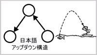
日本語のこの構造を「アップダウン構造」と名付けます。
このアップダウン構造が、胸のすくような働きをしてくれます。日本人の精神構造と日本文化の特質が、「アップダウン構造」というキーワード一つで、腹の底から納得していただけます。
日本語がアップダウン構造をしていることを、日本人は意識していません。アップダウン構造の奥（頂点）は、無意識の世界であり、見えない世界、隠れた世界です。日本語は、言語自体の中に、見えない世界が隠れているのです。
英語は全く違った構造をしています。英語は寄り道をしません。近道を通って対象に真っすぐに向かいます。
英語のこの構造を「ショートカット構造」と名付けます。
ショートカット構造の言語においては、表現のすべてが明白に意識されます。そこには隠れた世界が重なっているわけではありません。
日本文法至極の一点は、この「アップダウン構造」の「見えない世界」に隠れていたのです。至極の一点は、「見えない世界」から日本人の心性に大きな影響を及ぼしていたのですが、日本人がそれを自覚することはありませんでした。勿論、地球上の他国の人々がそれを理解できる筈はありませんでした。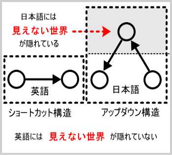
「アップダウン構造」をあたかも「ショートカット構造」であるかの如くに取り扱って来たところに、日本の悲劇がありました。
「ショートカット構造」の論理でもって「アップダウン構造」に立ち向かったところで、「アップダウン構造」の「見えない世界」が隠されていますので、どうにも論理的な説明がつきかねるのです。その結果、日本は諸外国から「顔の無い国」「得体の知れない国」と言われたり、「日本は世界を当惑させている」などと言われたりして来ました。「ジャパン・プロブレム」なる言葉が世界中を駆け巡った一時期もありました。
また日本人の中にも、西洋に習って近代化をやり遂げた日本が、自国の伝統文化を保持し続けている様相を「あいまいな日本」と否定的に捉え、伝統文化を忌むべきものとして論難する人も少なからずいるようです。彼らにとっては、日本の伝統文化を根こそぎ消し去って、日本を完全に西洋化することこそが理想なのでありましょう。まことに浅はかなる感覚と言わざるを得ません。日本の伝統文化を根こそぎ消し去るなどということは、日本人が日本語を使い続ける限りは、起こり得ないと断言出来ます。
それもこれも、日本の深層「アップダウン構造」が分からなかったからであります。
「ショートカット構造」から見れば、「アップダウン構造」の深層は背後に隠れて見えません。その見えない深層構造から絶えず働きが表面に現れて来ますので、表面上の論理が通らず、「あいまいな日本」を理解するに苦しむことになります。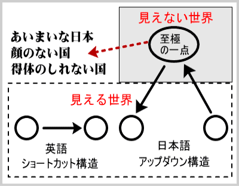
西洋諸国にとって、また近代的知性を身につけた日本人自身にとっても、日本は正に「得体の知れない国」であったのです。
しかし、今や日本の深層「アップダウン構造」が本書によってはっきりと提示されました。そして、「アップダウン構造」の奥に隠されていた至極の一点が現れたのです。もはや日本が「顔の無い国」「得体の知れない国」と言われたり「世界を当惑させている」と言われることは無くなります。
本書は、日本語を初めとして、日本人の宗教意識、科学思想、文学、政治、経済、その他諸々 の日本的なるものの特質が「アップダウン構造」によって論理的に解明できることを論じたものです。そして、日本人が「アップダウン構造」の深奥に秘められた至極の一点によって無自覚のうちに影響されていることを論じたものです。
日本語至極の一点は、神でありました。
神は、至極の一点に隠れたまま、日本語の響きとなって、日本人の心を培ってきたのです。日本人にとって、日本語こそ無自覚の宗教でありました。
日本語は、日本語教であったのです。
日本人は、無自覚の日本語教の実践者であったのです。
アイデンティティ・コンプレックスを抱いて日本の伝統を否定する人々は論外として、日本人であれば日本の本質は感覚的に理解できます。
しかし、今必要なのは、感覚的な理解ではなく、論理的な理解です。
日本の本質を論理的に理解して、論理的に説明することが要請されているのです。そのために「アップダウン構造」が胸のすくような働きをしてくれます。
「アップダウン構造」によって、今まで説明のむずかしかった日本の顔が、日本の心が、外国人に対しても論理的に説明できます。謎めいた国、日本のあり方がすらすらと理解でき、解説できます。
「アップダウン構造」こそ日本学の根本概念であります。
「アップダウン構造」の深奥に秘められた至極の一点こそ、日本総体の存在を根底で支えている究極原理です。
日本文化の総体が「アップダウン構造」をなしていることを理解し、「アップダウン構造」の深奥に至極の一点が秘められていることを認識することから、日本新生の道が開かれます。更には、地球新生の道が開かれます。
日本新生、地球新生の時代が訪れましたことを高らかに宣言して、日本人の心に、更には地球人類の心に、本書を捧げます。
日本語アップダウン構造の奥に、神が存在する。
日本語は、神である。
本書は、そのことを論理的に解説するものであります。そして、そのことが、日本人の新常識になることを切に願うものであります。
あらたま日の本つ国とよもして霊の緒走り雄叫びあげむ
日の本のよろづの神と共鳴りて雄叫ぶ吾れはたまのをばしら
昌原 容成
日本語がアップダウン構造をしていることを論証する為に、日本語を龍（ドラゴン）に例えて解説することにします。日本語という龍の片鱗を調べ、次に骨格を調べ、更にはハタラキ（動き方）を調べていけば、日本語という龍の本質が明らかになるはずです。
● 龍の片鱗・・・日本語の単語
● 龍の骨格・・・日本語の統語法（単語の組み合わせ方）
● 龍のハタラキ・・日本語を使う日本人の精神構造と日本文化の特性
この第一章では、日本語の片鱗を表す単語をいくつか取り上げて、それがアップダウン構造をしていることを明らかにしていきます。
はたして、「ありがとう」、「おかげさまで」、「すみません」などの単語（龍の鱗）にアップダウン構造が見て取れるでしょうか。
日本語は龍である。
日本語と云う生き物が龍体をとって天空を駆けめぐると想像してみましょう。
龍は、風を呼び雨を降らせると云われます。ひとたび龍神が怒りを発すると、烈風は吹き荒
び、猛雨は降りしきり、天空に稲妻が走り、雷鳴が轟きます。
古来、人々はこの人智を超えた自然現象を「カミナリ」と呼んで恐れて来ました。天空を劈
き大地を轟かせる巨大なエネルギーの爆発を、古代人が天の警告と受け取ったのも無理はありません。「カミナリ」は正しく「神鳴り」でした。日本語と云う龍が、今の日本を眺めたならば、やむにまれぬ想いに駆られて日本人の目覚めを促すべく「神鳴り」響かせることでありましょう。
この「神鳴り」は、日本語から日本人に向けて発せられた警告です。
日本人よ日本文法至極の一点に目覚めよ、自らの本質に目覚めよ、という警告です。
今の日本は、自らの本質を見極めることが出来ずに右往左往しています。このままでは、地球上における日本の存在理由が消え失せてしまいます。取りも直さず、地球の存続が危ぶまれてきます。自信喪失して右顧左眄する日本を目の当たりにすれば、たとえ龍神さんならずとも、心ある士ならば雄叫び挙げたくなる筈です。
「神鳴り」は天の警告。その警告を真摯に受け止めてみたいと思います。その為に、日本語と云う龍の鱗、骨格、ハタラキを徹底的に調べてみましょう。
ただし、雷の直撃を受けると身が持ちませんので、先ずは避雷針を立てることに致します。
雷の直撃を受ければ千年の大木も引き裂かれてしまいますので、人間がこれを避けようとするのは当然です。雷の害を避けるには、避雷針を用います。
では、「神鳴り」響く時代を生き延びるための「人生の避雷針」は無いものでしょうか。実は、この「避雷針」という言葉の中に、天の警告を真摯に受けとめ、人間の生き方を正すヒントが秘められておりました。
避雷針を英語では、Lightning conductor（ライトニング・コンダクター）と言います。避雷針もライトニング・コンダクターも、物自体に違いはありません。しかし、それに対する人間の意識が違います。従って、名付け方が違います。
・避雷針は、雷を避ける針。
・Lightning conductor は、雷を通す針（コンダクター）。
両者を比べると、「避ける」と「通す」では正反対です。
どうやら、日本語と英語とでは、同じ物に対しても、それを捉える立場が根本的に違うようです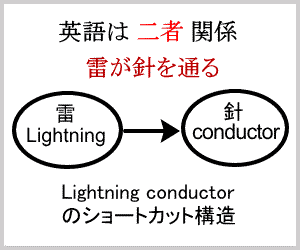。
日本語→「避ける」・・・人間の立場
英語 →「通す」・・・・針の立場
この違いは、アップダウン構造とショートカット構造の違いで説明出来ます。英語の「ライトニング・コンダクター」においては、雷と針とは、直接的に結び付きます。両者の間に媒介物は、ありません。そこにあるのは、たった一つのことです。雷が針を通る。
（雷と針の二者関係）ただそれだけです。英語は、雷と針という当事者の関係を表現するのみであって、第三者の介入を許しません。ショートカット構造は、二者関係を表現するのみであって、隠れた第三者の存在は、微塵も含まれていません。英語は、対象に向かって一目散に駆け込みます。寄り道はしません。英語は近道（ショートカット）を通ります。英語は直截簡明に現象を表現します。
一方、日本語「避雷針」においては、雷と針の間に、人間が介在しています。
そこには、雷、針、人間、の三者関係が存在します。雷と針を当事者とすれば、人間は第三者です。日本人は、心の表面では、雷と針とが直接に結び付いているかの如く意識しています。しかし、その背後には、第三者、人間が隠れているのです。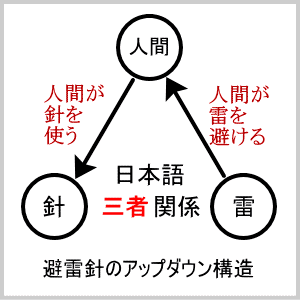
・人間が、雷を避ける。
・人間が、針を使う。
この二つを合わせて「避雷針」が出来上がります。
（人間、雷、針の三者関係）
日本語は、対象に向かって一目散に突進はしません。先ずはアップして、深層の隠れた世界に寄り道します。次にダウンして、表面の現象世界に戻ります。
日本語には「避雷針」以外にもアップダウン構造をした言葉がまだまだあります。更には、単語を組み立てる統語法の中にもアップダウン構造が見られます。
しかも、アップダウン構造の奥に隠れているのは人間とは限りません。人間を遥かに超えた大きな存在が隠れていることが多いのです。
では、避雷針のアップダウン構造を頼りにして、「神鳴り」響く日本語の世界を探索することにしましょう。
雷鳴の轟く中、天空を覆う雲の切れ目から、龍の鱗が一つちらりと見えたとします。
鱗を一つ見れば、それが天空を駆け巡る龍の鱗であるか、草むらをはいずり回るトカゲの鱗であるか、一目瞭然です。ことわざにも、「片鱗を示す」と言います。
日本語を龍にたとえて、日本語の片鱗を示す言葉をいくつか挙げ、英語と比較しつつ、日本人の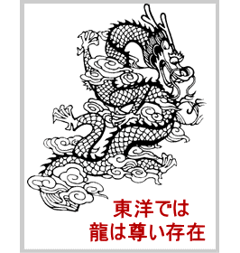意識構造を探ることにしましょう。日本語が龍であれば、もちろん、英語も龍（ドラゴン）です。一方が龍で、他方がトカゲであると主張するのではありません。
ところが、日本語の「龍」と英語の「Dragon（ドラゴン）」は、全く異なる存在であるのです。日本人にとっては「龍」は、天子のお顔を「龍顔」と尊称するように高く貴い存在です。「龍神」さんを祭る神社が日本中に沢山あります。また、中国や東南アジア諸国でも、龍神さんを尊ぶ風習があります。農耕民族は大体に、龍神さんが雨をもたらしてくださるということで尊敬しているのでありましょう。
ところが西洋では、事情はガラリと変わります。英国人にとっては「ドラゴン（Dragon）」は、人々に災いをもたらす邪悪な存在であり、英雄によって退治すべきものとの通念があります。西洋の子供たちは、幼い頃からドラゴン退治の話を聞かされて育っていくのです。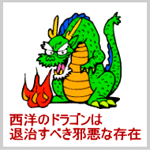
また英国では、口やかましいお姑さんがしばしば「火を吐くドラゴン」に譬えられています。これは複数の英国人の友人に確かめてあります。「ドラゴンのようなお姑さん」とは、英国では陰口であるのです。
「英語は龍である」と誉めたつもりで言っても、英国人が聞くと、「英語は邪悪なドラゴンである」とけなされたと誤解されかねません。
「龍」は即ち「ドラゴン」である、とは単純に言えない事情が二つの言語の間にはあるのです。
「龍」を和英辞書で引きますと、確かに「ドラゴン（Dragon）」と出て来ます。しかし、「龍」の背後には日本人の意識が、「ドラゴン」の背後には英国人の意識が、民族の歴史と共に積み重ねられているのです。
二つの言語を比較する際には、辞書的な対応という表面で上滑りするのではなく、言葉の奥に潜む潜在意識、さらにその奥の深層意識にまでさかのぼって考察しなければなりません。そうすることによって始めて、意識構造の違いがはっきりと浮かび上がって来るのです。
本書においては、東洋世界の人々が「龍神」を崇める心を以て「龍」といい、「ドラゴン」ということにします。日本語という「龍」も英語という「ドラゴン」も、共に尊敬すべき言語です。しかし、その性質は大きく異なっております。
「避雷針」は、実に見事に日本語の「片鱗」を表していました。
「ライトニング・コンダクター」は、実に見事に英語の「片鱗」を表していました。
「片鱗」を一つ示して、そこから全体を直観して下さいと言いたいところですが、現代人を納得させるためには、さらに論証が必要です。
日本語が真実、「龍」であるならば、その「片鱗」を示す言葉は外にも見い出せる筈です。
そこで、日本人なら三才の幼児でも知っている日常語の中から、「龍」の「片鱗」をいくつか拾いあげ、「ドラゴン」の「片鱗」と比較して調べてみることにしましょう。
「龍」と「ドラゴン」が、どれほど異なっていることか、その「片鱗」から窺ってみましょう。
「ありがとう」とは、「有り難い」、つまり「めったにあり得ない」というのが本来の意味です。日本人は「めったにあり得ない」と口にすることによって、感謝の心を表して来ました。
このことは、西洋語のみならず中国語や韓国語と比較しても、それこそ「めったにあり得ない」ことです。仮に「ありがとう」を英語に直訳して、
It seldom happens. (それは めったに起こらない。）
と言ったところで、英語の文脈の中では、感謝の表現とは決してなり得ません。逆に誤解されて、悪意に満ちた皮肉と受け取られる可能性さえあります。
それは、誰に対して感謝するのか、感謝の対象が「ありがとう」の中には明示されていないからです。それどころか、感謝の心までもが、「ありがとう」の中には直接的には表現されていないのです。
この点、英語の「サンキュー（Thank you)｣ は単純明快です。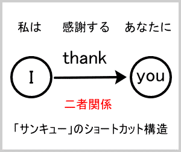
・Thank (感謝する) ・感謝の心
・you （あなたに） ・感謝の対象
「サンキュー」は、見えない世界を問題にしません。見える世界の「私」が見える世界の「あなた」に感謝するのです。「私」と「あなた」の二者関係であって、第三者はそこに隠れてはいません。
I (私は) thank (感謝する) you (あなたに)
ここでは、表層意識がそのまま言葉になっています。第三者の影は、どこにもありません。
もちろん、英語でも、目に見えない存在に対し感謝することが出来ます。しかし、その場合、感謝の対象は、God （神よ）、Lord（主よ）と、必ず言葉に出して表されます。つまり、それは、表層意識にもたらされます。英語は、どこまでも、ショートカット構造を取るのです。
ところが、「ありがとう」（有ること難い）を隅から隅まで調べてみても、感謝の心も感謝の対象も見い出すことは出来ません。「見える世界」の誰が、「見える世界」の誰に、何をするのか（感謝するのか、何を するのか）全く表現されていません。
それは、「ありがとう」がアップダウン構造の言葉だからです。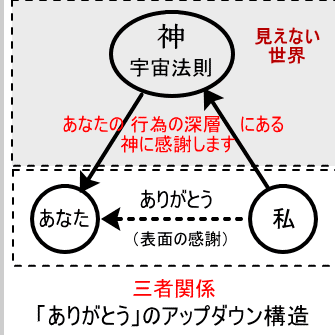
日本人の意識は、いつもいつも、目に見えない世界、深層の世界に向けられています。しかも、日本人は、そのことをはっきりとは自覚していません。自覚せずして、目に見えない世界としっかりとつながっているのです。
目に見える世界に「私」がいて「あなた」がいる。目に見えない世界に、両者を共に支えて生かして下さる存在がある。そのことを日本人は、心の奥で知っているのです。たとえ、その存在を神あるいは宇宙法則と呼ぶことはなくとも、日本人の深層意識は、その存在を知っているのです。
従って、「見える世界」の「あなた」の好意に対しても、表面的に「あなた」にお礼を言うだけでは、深層意識が納得しません。そもそも「あなた」を根本から生かし、「私」を根本から生かして下さる、目に見えない存在に対する無意識の感謝が、言葉となってほとばしり出るのです。
それが「ありがとう」です。
「ありがとう」の本当の（深層の）感謝の対象は、アップダウン構造の奥に隠されている宇宙法則、神でした。
「ありがとう」の感謝の対象は、宇宙法則（神）であると分かりました。
次に、「ありがとう」の感謝の心について考えてみましょう。「めったにあり得ない」ことが、どうして感謝の心につながるのでしょうか。
「ありがとう」の根底には、大宇宙の不思議に対する驚きがあります。人智を超えた仕組みに対する畏敬の念があります。
例えば、日本の国土に住む私達であれば、コップ一杯の水は、格別に有り難いとは思えないかも知れません。しかし、広く世界を見渡して、良質の飲み水が豊富に得られる国はそんなに多くはありません。中国で喫茶の習慣が始められ、西洋でワインが作られるのも、良質の飲料水が得られぬことが一因と言われます。中東やアフリカの砂漠地帯では、水をめぐって命のやり取りすら行われて来ました。日本全国どこででも、水道の生水をそのまま飲むことが出来るということは、実は、希有な、有り難いことでした。
山中の湧き水の旨さは、また格別です。日本全国至る所から、真清水がわき出して国土を潤しています。中には、高い山の頂から、日照りが長く続いても変わることなく渾渾と真清水が湧き上がります。この湧き水が、おいしいのは、雑りもののおかげです。純水に旨みはありません。雑りものがあって始めて、水の旨みが出て来るのです。
この雑りものの調合は、どのようになされるのでしょうか。
雨が降ると、大地に浸み込みます。
その地面には、もろもろの不浄物が充ち満ちています。動物の死骸もあれば、排泄物もあり、植物は枯れて腐って行きます。雨水は、それら総てを溶かし込んで、地中を流れて行きます。
大地は、生きて活動しています。
不浄物を溶かし込んで流れて行く水に、大地のハタラキが加わりますと、みごとに不浄物は濾過されて、神山霊峰に甘露の真清水となって湧き上がります。
実に不思議なハタラキです。このハタラキを、水神と讃え、この真清水を神水霊水と貴ぶのは当然です。そこには神気霊気が豊かに湛えられており、ミネラル調合の塩梅もよろしく、人体への吸収も一層素早い。炎天下の登山で、湧き水に喉を潤せば、細胞の一つ一つに、神気がゆきわたり、生命が蘇る心地がします。
「有り難い」、と思わず口を衝いて出て来ます。
おや、この「有り難い」は、どなたに対する感謝ですか？
この時の「有り難い」は、「サンキュー」と訳すよりは、むしろ「ワンダフル（Wonder-ful)」に近いでしょう。まことに自然は、驚異（Wonder）に満ちて(ful) います。 コップ一杯の水は、グイッと一気に飲み干せる量です。地球表面のおよそ 七〇％を占める大海原の水の量を思えば、ちっぽけなことは言うまでもありません。
しかし、意識をグウーンと拡大していただき、原子、分子の世界を想っていただきます。極微の世界を思惟するには、銀河宇宙を観想するのと同様に、意識を精一杯拡大しなければなりません。
百八十ＣＣの水の中には、およそ、６掛ける10の24乗個の水分子が含まれています。
６の１億倍、かける１億倍、かける１億倍もの個数。億かける億かける億を、どこまで数えられますか。
一、 十、 百、 千、 万、 億、 兆、京、垓 ・・・・・
まだ足りません。コップ一杯の水で、斯くのごとし。地球圏内の総ての水分子の数はいかがですか。また、宇宙全体の水分子の数は、数えられますか。
秭、穰、溝、澗、正、載、極・・・・・
まだ、極まりません。宇宙の全物質の分子の数は、どうですか。分子をさらに細かく分けて、素粒子の数は、数えられますか。素粒子をさらに細かく分けて、さらに細かく、さらに細かく、さらに、さらに、さらに、・・・。一体、どこまで感覚出来ますか。
恒河沙、阿僧祇、那由多、不可思議・・・・・
ついに、意識極まって、
無量大数。
もうこれ以上、数えることは出来ません。
数えることが出来なければ、日の本の古代人の心に立ち返って、「ヨロヅ」と言えばよろしい。
日中の空は、蒼蒼と澄み切っています。夜空には、無数の星が煌めきます。一体、夜になるとどこから出て来るのでしょうか、この星の数、かず、カズ。とても数えることは出来ません。
これを、夜出と言います。
古代人のヨロヅの感覚に立ち返って下さい。満天を埋めて燦然と煌めく星の群れの喩えようの無い美しさ、その不可思議、その驚異の感覚を、あなたの心に蘇らせて下さい。
その、ヨロヅの感覚に立って、森羅万象、ヨロヅノモノを眺めたとき、あなたの心の奥底から、油然と湧き上がって来る感覚があります。
アリガタイッ！
この世は、実に美しく、驚異に満ち、不可思議極まりなく、人間の思量を遥かに超える数によって成り立っておりました。
この感覚をもって、コップ一杯の水に対する時、水がイキイキと活気を帯びて、心に迫ります。
億、かける億、かける億の分子が、目に見えるようです。電子が飛び交って、水の生命の脈動を伝えます。分子、原子、素粒子の一つ一つが、限りない神律によって活かされていることが、ヒシと胸に伝わります。
この神律が、同じく、星の群れを煌めかせます。
同じく、海の潮を調えます。
同じく、人の血潮を高鳴らせます。
「ありがとう」は、人の血潮の高鳴りです。
驚きとは、オトトドロキ。
夜出のオドロキの感覚に立って、ヨロヅノモノを眺めた時、あなたの心臓が、オトトドロキます。その血潮の高鳴りが、「ありがとう」です。
ヨロヅノモノの奥に在って、その一つ一つを活かして下さるハタラキ。
その、オトトドロキまして、人の口から響き出た言葉が、「ありがとう」です。
万物に対する感謝は、「ありがとう」の一語に凝縮されています。
「ありがとう」を瞑想すれば、宇宙創造の神秘に観入することが出来ます。
「ありがとう」を瞑想出来るヒトの尊さは、喩えようもありません。
「ありがとう」を日々使わせていただける私達の幸せは、どんなに感謝しても、感謝し尽くせません。
「ありがとう」の一語に秘められていたアップダウン構造は、「ありがとう」の一語にのみ限定されているのではありません。
それは「すみません」や「おかげさまで」などの言葉にも観て取れます。
更には、第二章で述べますように、単語と単語を結びつける統語法にも、アップダウン構造が観て取れるのです。
更に更に、第三章以下で述べますように、日本人の認識構造、思考方法、その思考方法によって形成された日本文化の総体においても、このアップダウン構造が観て取れます。
しかも、このアップダウン構造によって、今まで説明の難しかった事柄がスラスラと説明出来るのです。その威力には、読者の皆さんもきっと驚かれるに違いありません。
「ありがとう」たった一語を究明することにより、日本という生き物の総体が手に取るように分かるのです。そのことを引き続き論証して行くことに致します。
「ありがとう」は、日本語の精髄とも言うべき言葉です。
「ありがとう」は、こんなにも素晴らしい言葉でした。
「ありがとう」を使わせて戴けるということが、何よりも「有り難い」ことであったのです。
「ありがとう」さん、アリガトーーーッ！
電車の中で人の足を踏んでしまったら、「すみません」と謝ります。英語では、「アイムソーリ（I'm sorry.）」と言います。
知人に無理を言って、お金を借りました。「どうも、すみませんねえ」と口に出ます。これは、「サンキュー（Thank you.）」に当たります。
「すみません」は、「アイムソーリ」（謝罪）と「サンキュー」（感謝）の両方に用いられます。謝罪と感謝は、全く別の概念です。二つの異なる概念が、一つの言葉の中に含まれているのには、深い理由がありそうです。
「すみません」は「済む（finish）」の否定形ですので、英語に直訳すれば、Not finished（済んでいない）となります。これは「ありがとう」と同様に、直訳では決して意味が通じません。それどころか、直訳は、時には甚だ危険ですらあります。
例えば、ニューヨークの地下鉄で屈強な男の足を踏み付けたとします。
「すみません」と謝ったつもりで、Not finishedと言ったらどうなるか。「右足だけでは済まさないぞ。次は、左足を踏んでやる」と因縁を付けたと勘違いされ、顔面にパンチをくらっても仕方が無いでしょう。
数々の悪事を重ねた男が裁判にかけられたとします。過去の悪事についてどう思っているのか、と裁判官に尋ねられて、Not finished.（悪事はまだまだ、済みません）と答えたらどうなるか。改悛の情なしとして、罪一等を加えられても文句は言えません。
お金を融通してくれた人が、「これっきりだよ」と念を押すのに対して、Not finished.（これっきりでは済みません）と応じたらどうなるか。「いいかげんにしてくれ」と愛想を尽かされます。
このように、「すみません」を直訳するだけでは、決して、日本人の心情を外国人に伝えることは出来ません。「すみません」は、極めて、特殊日本的な言葉です。
それにしても、「まだ決着がついていません」ということの表明が、どうして、「ごめんなさい」や「ありがとう」の代わりに使われるのでしょうか。
秘密を解く鍵は、アップダウン構造にあります。日本人の言葉や構造が不思議に思えたら、まず、アップダウン構造を調べてみることです。
「すみません」のアップダウン構造の奥には因果律がある、と考えるとすべての謎が解けます。
原因があれば、必ず、結果となって現れる、という法則が、因果律です。
現在の自然科学では、因果律の及ぶ範囲は、現象世界に限定されます。しかし、仏教で説くところの因果律は、もっと奥行きがあります。それによれば、口に出した言葉や形に現した行為だけではなく、形に現れる以前の想念までもが、因となり、果を結びます。更には、この世における想念行為のみならず、生まれ変わり死に変わり何度も人生を繰り返した過去世における想念行為までもが、果となって現れると説きます。
自然科学の因果律は、小さな因果律ですが、仏教の因果律は、それを大きく包んで広がります。
日本人の深層意識は、この大きな因果律の存在をしっかりと認めており、そのことを、「すみません」というアップダウン構造の言葉で表明しているのです。
人の足を踏むというささいな出来事であっても、因果律の適用は免れません。「あなた」に与えたささやかな苦痛に対して、「ごめんなさい」と謝るだけでは、「私」の気持ちが済みません。このままで決着がついたとは、決して思っていません。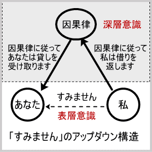因果律に従って、将来、「あなた」の苦痛を何らかの形で「私」が代わって引き受けます。
これが、「すみません」の深層意識です。
自分がこれまで重ねて来た悪事の数々を思い、迷惑をかけたたくさんの人達のことを思えば、私はこのままでは、済みません。たとえ、この身は八つ裂きにされようとも、因果律に従って我が身に与えられることがらであれば、神妙に頂戴します。
これが、「すみません」の謝罪の心、改悛の情です。
無理をしてお金を融通してくれるとは、まことに有り難いことです。借りたお金はもちろんお返ししますが、それだけでは、私の気持ちが、済みません。あなたの好意に対していつか必ず、何らかの形で報いたいと思います。今日のあなたの好意が善因となり、因果律に従って、将来、何かの縁に触れた時に、善果が私を通して、あなたにもたらされることでしょう。
これが、「すみません」の感謝の心です。
「すみません」は、因果律の認知です。
因果律を我が身に引き受けることの表明です。
日本人の深層意識には、「すみません」のアップダウン構造の奥から、因果律が響いてきますので、日本人ほど恩義を大事にする国民はないことでしょう。
恩を仇で返すようなことは、日本人にはできませんでしょう。それは人類共通の当たり前のことと日本人なら考えがちですが、いやいや、どうして、恩を仇で返すような人々が散見されるのが現在の地球人類の有様です。残念ではありますが、他民族がどうであれ、そのようなことができないのが、日本人の性分です。生まれた時から「すみません」の心を培ってきた日本人です。繰り返し繰り返し日本語を使ううちに、何時知らず日本人の心は日本語の響きに同化してしまうのです。
言語というものは、勿論、すべて授かりものであり、尊いものであります。英語も尊い、中国語も尊い。しかし、それぞれの言語の構造が違うのです。
「ありがとう」や「すみません」に秘められたアップダウン構造は、アイムソーリー（私は残念に思う）やシェシェ（謝謝、サンキューと同じ）とは、その奥深さが異なるのです。
謝罪の心と感謝の心は、ショートカット世界では全く別物ですが、「すみません」のアップダウン構造はその別物を矛盾無く同居させているのです。
ショートカット言語を生きる他国の人々にとっては、この矛盾が日本文化のあちこちに現れますので、日本理解に苦しむことになります。
欧米やアジアの他国の皆さんには、すみませんが、日本アップダウン構造の奥を見つめてくださいませ、と申し上げるほかありません。
「すみません」は、「アイムソーリ」（謝罪）と「サンキュー」（感謝）を兼ね備えた言葉です。
しかし、「アイムソーリー」と「サンキュー」を二つ合わせたところで、「すみません」の奥行きを表現することは出来ません。ショートカット構造の言葉をいくつ重ねたところで、アップダウン構造の言葉の奥行きを表現することは出来ません。
「すみません」の世界には、深い広がりがあります。
しかし、深いといって喜んでばかりはいられません。アップダウン構造の深みが、裏目に出る可能性もあります。
「すみません」は、因縁因果の世界です。善因善果・悪因悪果の法則は、厳然としてあります。
表面意識が信じようと信じまいと、日本人の深層意識は、因果律の存在をしっかりと認めています。人間として正しく生きるためにこれを自覚することは、とても大事なことです。
しかし、人間の幼い心がこれを受け取ると、どうなるでしょうか。
次々と業因が噴き出すと、自らの運命を呪いたくなります。お前の心が悪いから不幸災難が起こるのだと、人を裁いてしまいます。それ以上に、自分自身を責め裁いて傷付けます。人間をより良く生かすための因縁因果の教えが、人間を責め裁く道具にちてしまいます。
「眼には眼を、歯には歯を」の教えも、因果律が厳然として存在することを自覚させ、人間の生き方を正すためのものでした。それを人間が復讐心で受け取ると、哀しいかな、悪業に対しては悪業をもって報いる為のスローガンと腐り果て、返って、おぞましき因果の巡りを繰り返すことになります。
こうして宗教までもが、因果律の世界に人間を押し込めて来ました。
そもそも人が宗教を求めるのは、因果のしがらみから抜け出たいと切望してのことである筈です。その宗教が諸々の人間活動と手を携えて、人間を因果の小車に乗せて輪廻転生を繰り返させて来たのが、これまでの人類の歴史でした。
つまり、すみません、済みません、の歴史を繰り返して来たのです。
これでは、いつまで経っても、済みません。
すみません、済みません、ではいつまでもこの世の中が、澄みません、澄み切りません。
「済む」は、「澄む」、「住む」に通じます。
「住む」は、「人」が「主」となること。人がそこに住むことによって、人本来の万物の霊長たる在り方を発揮して、万物を調和させること、つまり「澄み」切らせることが「住む」ことの奥の意味です。
これは、駄洒落ではありません。日本語の本性に基づく、根拠ある論です。日本語は、一音一音に意味があり、その音が連綿と連なって、意味が広がって行きます。
「ス」は、五十音の中心にあって、すべてを統べる音です。その意味は、「素」と書くとよく分かります。
「ミ」は「身」と解します。従って「スミ」は、「素身」と表せます。
「素身」になるためには、「澄み」切らねばなりません。
木を焼いて「澄み」切らせると「炭」になります。「炭」に悪臭や不純物を除去する作用があるのは、それが純粋な「素身」であるからです。浄らかな「炭」火で、湯を沸かし、茶を立てるのは、人が「素身」となることを目指す茶道の習わしです。
ガスで焼いた魚より、「炭」で焼いた魚がおいしいのには、充分な訳があります。ガスの火からは、熱と共に水蒸気が放出されて魚の表面に当たります。そのために、表面が焦げるほどであっても、熱は案外内部に沁み透りません。
ところが、「炭」の浄ら火は、魚を柔らかく包んで熱を内部に沁み透らせます。「澄み」切った「素身」から発する愛の言葉が、人の心に沁み透り、人の心を内側から温めるようなものです。
「炭」はまた「墨」に転化します。そして、書が生まれます。
ある西洋美術の評論家は、西洋の絵画と東洋の書道を比較してこう言いました。
自分は、長年、西洋の絵画を研究して来たので、その奥行きを充分承知しているつもり
だ。しかし、西洋絵画の素晴らしさも書の無限の深みには適わないと思う。
「墨」が油絵具以上によく精神の深みを表し得るとしたら、それは「素身」であるからです。油絵具は自己主張をしますが、「墨」はひたすら己を空しくして素材たる身に甘んじます。だからこそよけいに、人の心の陰影が籠められるのでしょう。
炭素九〇％の「炭」が、さらに「澄み」切ると、炭素一〇〇％のダイヤモンドになります。一〇〇％の「素身」は、まばゆいばかりに輝きます。
何と素敵な仕組みでしょうか。スミの素晴らしさは、日本語の中に息づいております。
このように、音のつながり、「炭」、「墨」、「素身」、「済み」、「澄み」には、意味のつながりがあります。それはまた、「住み」にも通じます。
主の役目は、総てを調和させることです。一家の主人は、家族全員が仲睦まじく安心して暮らせるように計ります。社長であれば、全社員の暮らしが立つように計ります。
人は、地球界の主です。
人が主となって大地の上に「住む」ならば、「澄む」ならば、スミキルならば、大地が安らぎを覚え、草木は和み、岩石も潤いを得て当然です。さらには、主たるもの、雨の意を推し量り、風の情を聞き分けるのも、その心得とすべきでしょう。
「風の情」を聞き分けるなど、とても難しくて人間業とは思えません。しかし、日本人は古来、素朴な心で「風の情」と向き合って来た筈です。「風情」という日本語があるではありませんか。
西洋人は、コオロギの鳴き声を、右脳で受け取って無意味な雑音と聞きなします。日本人はそれを、左脳で受け取って意味のある言語と同じ様に耳を傾けます。（角田忠信著『日本人の脳』大修館書店）
日本人は、動物や植物に対してはもちろん、雨や風の動きにも「風情」を見い出して感じ入ります。日本人は、万物の霊長として、地球界の主たるにふさわしい大脳ソフトウェア（言語）を持ち合わせているのです。
生理的に全く同じ大脳細胞を持って生まれたとしても、アップダウン構造の日本語というソフトウェアを用いるか、ショートカット構造の英語というソフトウェアを用いるかによって、大脳の働き方（刺激の伝達パターン）が違って来るのは当然でしょう。
日本人の大脳細胞に生まれつきの違いがあるのではなく、日本語によって大脳のハタラキ方に違いが生じるのです。日本語の中にこそ、日本人の根本特質が秘められているのです。
スミキリとは、古来、日本神道の目指す極意でした。
人が「スミキル」ことによって、世界が「澄み切る」のです。
では、人がスミキルためには、どうすればよいでしょうか。
また、それを、誰に尋ねればよいでしょうか。
筆者は、それを天空を駆け巡る「龍」にたずねてみたいと思います。
と言っても、その「龍」とは、日本語のことであります。
個々ばらばらに存在すると思われた龍の片鱗には、音のつながりに重なって意味のつながりが秘められていました。
「済み」、「澄み」、「住み」、「炭」、「墨」、「素身」の意味のつながりを素材にして、人がスミキルための方法を考えてみましょう。
「炭」を作るには、木を切って窯に入れ、数日間蒸し焼きにします。生身の木に含まれている諸々の不要成分が高温にさらされて抜けて行き、数日後には炭素九〇％の「素身」が出来上がります。その「炭」に更に高温高圧をかけて炭素一〇〇％の「素身」即ち、ダイヤモンドを作る事だって出来ます。ダイヤモンドを作るには、蒸し焼きでは叶いません。一五〇〇度の高温と六万気圧の高圧が必要です。「澄み」切った結晶を作るのはたやすいことではないのです。
生身の人間を「素身」に仕立てあげるのも、原理的には同じです。「不要成分」を除去して、人としての「純粋成分」を結晶化させればよいのです。
しかし、人間を蒸し焼きにする訳には参りません。ましてや、高温高圧をかけられては骨の髄まで燃え尽きてしまいます。その代わり、人間には、人生の苦難が与えられます。病気で苦しみ、貧乏で苦しみ、人間関係で苦しむのも、「不要成分」を除去せんがための浄化作用です。
大病を患ってすっかり人間が素直になりました。以前のあの頑固さは、どこへ行ったのでしょうか。（スミキリました。）
事業に失敗して辛酸を嘗め、かえって生きる力を逞しく身に修めました。以前の我が身を振り返ると、まことに恥ずかしいことばかりです。今となっては、すべてが有り難い。（心がスミキリました。）
骨肉あい食む争いの果てに、真実、人間関係の貴さ、深さを感じました。以前のあの憎しみは、何だったのでしょうか。（怨念もスミキリました。）
これらはみんな、「不要成分」が除去されて、その分だけ「澄み」切ったからです。人生の苦難とは、人間を「素身」に仕立てあげる磨き石でした。
そこに、人生に立ち向かう最大の心構えがあります。そこには、また、下手をすると益々人間を堕落させかねない危険があります。そもそも、人間が「素身」」になるための「不要成分」とは何でしょうか。また、結晶化すべき「純粋成分」とは何でしょうか。
木を焼くと炭が出来るのは、木には本来、炭になる素質があるからです。鉄を焼いても炭にはなりません。石を焼いても炭にはなりません。炭になる素質がなければ、炭になることは出来ません。
人間は「素身」になることが出来ます。
一〇〇％「澄み」切って、人間ダイヤモンドとなることも可能です。
事実、仏陀、イエス、老子などが、一〇〇％「澄み」きって人類に手本を示してくれました。
そのような聖者、神人が存在したということが、即ち、人間は本来「素身」であることの証明です。人間は本来、釈尊、イエス、老子などと同様に「澄み」切った存在なのです。
「素身」になるための「純粋成分」は、人間本来に内在している「素身」それ自体です。「不要成分」とは、人間は本来「素身」」であるという真実を否定する一切の想念行為です。
従って、一〇〇％「澄み」きった「素身」になるためには、人間は本来「素身」であるという真実を、どこまでも想い続けて貫徹させればよいのです。
人間を堕落させかねない危険とは、「素身」に仕上げる為に与えられた人生の苦難を、ただ苦しむ為の苦しみと勘違いして、その苦しみの渦の中でそれを掴んで放そうとせず、嘆き、怒り、憎み、自他を傷付けることであります。こうして因縁が因縁を呼び、因果が因果を引き込んで、果てしなく輪廻転生を繰り返してしまいます。
それはもう、すませましょう、すみきらせましょう。
人間は本来「澄み」きった「素身」であると徹底覚了すれば、いかなる苦難といえども、それは己を人間ダイヤモンドとする為の不要成分の除去作用だと考えることが出来ます。
我が身に降りかかることはすべて人間ダイヤモンドを作るためだと心得て、何でも引き受けようと覚悟する。これこそが、処世の一大秘訣です。人生最大の心構えです。
「おかげさまで」は、実にあいまいな言葉です。
日本神道の訓えによれば、あらゆる物事が形を取る際に「かげ」が必要となります。鏡を例に取ると、ガラスだけでは光が素通りしてしまうのですが、ガラスの裏に「かげ」を添えると、鏡になって形を映すことが出来ます。この様に、形あるものには必ず「かげ」が添えられているのです。「陰」の深意をそのように押さえて置いた上で、「おかげさまで」の含意を調べることに致しましょう。
「おかげさまで」は「御・陰・様で」のことですので、普通は「陰のハタラキによって」という程の意味で使われます。
英語では、by the invisible（見えないものによって）と直訳出来ます。
今日では見えないものに限らず、はっきりと目に見える人や事物のハタラキについても普通に用いられます。広辞苑には、「相手の親切などに対して感謝の意を表す挨拶語」とあります。
これも、「ありがとう」や「すみません」と同じく、英語に直訳しては意味が通じません。
例えば、溺れかかった「私」を「あなた」が川に飛び込んで助けてくれたとします。「おかげさまで、助かりました」と日本語で言えば、感謝の心が伝わります。
しかし、これを英語に直訳して、
I was saved by the invisible. （私は見えないものによって助けられた）
と言えば、どうなるでしょうか。「助けたのは、この私だ。この濡れた服が目に入らないのか。」と生命の恩人を憤慨させてしまいます。
このように、目に見える「あなた」の目に見える手助けまでも、「お陰様で」と陰に隠してしまうのは、日本人が考えても、随分妙な話です。ところが、もっと妙な使い方をすることがあって、日本語の曖昧さを示す恰好の例となることもあります。例えば、数年間何の音沙汰もなかった「あなた」と街でばったり出くわしたとします。
「ご家族の皆様は、お元気ですか。」
「ええ、元気です。おかげさまで。」
この場合、「私」の家族が元気で暮らしていることに関して「あなた」が何らかの貢献をした訳では決してないのですが、これで日本語の会話としては、完璧に成立します。
この「おかげさまで」が「あなた」のおかげでないとしたら、一体、どなたのおかげでしょうか。答えはアップダウン構造の奥にあります。
「御陰」とは、あらゆる物事が形を取る際に必要な、目に見えない陰のハタラキ、すなわち、神仏の加護のことです。「神仏に祈願して御陰を得た」などと用いられるように「御陰様で」の深層には、神仏のハタラキに対する感謝があります。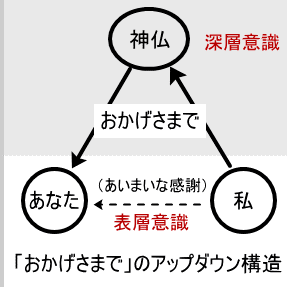
家族の安否を気遣ってくれる「あなた」の善意に対して感謝するのはもちろんですが、その善意の背後に神仏のハタラキを深層意識で認めているのが日本人です。「ありがとう」が広い意味で「宇宙法則への感謝」を表すとするならば、「おかげさまで」は、その「宇宙法則」なるものをより明確に「神仏」として意識した言葉と言えます。
ところが、「お陰様で」を口にする当の本人もその相手も、必ずしも神仏を意識しているとは限りません。むしろ、神仏の存在などは全く意識せずにアップダウン構造の奥にしまい込み、表面的に単に軽い感謝を表したものと両者ともに受け取って会話を成り立たせています。
論理的に考えれば、「あなた」のおかげでないことは明白なのですが、かと言って神仏の存在を確信している訳でもない平均的日本人が、誰のおかげかを突き詰めて考えることもなく、ただ何となく感謝を表したような気分になるのは、何ともあいまいです。
それでいて、お互いの気持ちは、確実に通じ合うのですから、このあいまいさは、絶妙のハタラキをします。いかにも不可思議なコミュニケーションです。
日本人は、突き詰めてものごとを考えないであいまいな言動をとる、と西洋人からよく批判されます。この点は全く同感です。本書の目的は、そのあいまいさをさらりと切り払って、言葉の深層を意識に貫徹させることにあります。
しかしながら、日本人のあいまいさは全くの短所としてあるのではなく、むしろその中にこそ、日本人の優れた特性が秘められております。この点を、日本人の宗教意識にからめてアップダウン構造に着目しつつ考察してみましょう。
日本人は、宗教意識が希薄であると言われますが、本当でしょうか。
文部省が実施した国民性調査（一九八四年）によると、二〇～二十四才の若者で「信仰や信心を持っている」のはわずか一二・六％であり、残り八七・四％と九割近くの若者が「持っていない」と答えています。
二十五～二十九才の年令層では、「持っている」一七・五％に対し、「持っていない」八二・五％とわずかに信仰派が増加する傾向が見られます。年齢が進むにつれて、信仰派は少しばかり増加するのですが、それにしろ、全年齢層で信仰を持っている人は、およそ三割程度です。この比率は、年度が替わっても、大きく変動することはありません。（文部省、国民性の研究第七回全国調査、 一九八四年）
しかし、形の上で信仰を持たないからといって、宗教精神と無縁であるとはいえません。前述の調査で、「宗教的な心を大切だと思うか」との質問には「大切だ」と答えたのは、二〇～二十四才で六四・三％、二十五～二十九才で六八・七％に上ります。
それにしても、八割から九割近くの圧倒的多数の若者が信仰を持っていないのですから、西洋人が、日本は無信仰の国だと考えるのも無理はありません。
確かに一時期、新宗教や新・新宗教に押しかける若者がよくマスコミに取り上げられたこともありました。また書店では、宗教書のコーナーが設けられていて、一昔前までは普通の書店では滅多にお目にかかれなかったであろう類いの心霊書や予言書なども多数並べてあり、売上も上々の様です。
そのような最近の趨勢を考慮に入れたとしても、世論調査などで信仰の有無を尋ねられたならば、やはり大多数の日本人が信仰を持っていないと答えるであろうと思われます。
一九八九年（平成元年）九月に実施された読売全国世論調査（二〇歳以上の全年齢層を含む）では、「宗教を信じている」のは二八・〇％に対して、「宗教を信じていない」は六九・四％となっています。やはり成人の約七割が信仰を持っていないと答えている訳です。
約七割の日本人が信仰を持っていないと答える。
ところが、約七割の日本人が、神仏を礼拝するのです。
警察庁調べによると、正月三が日の全国の神社仏閣への初詣客は総人口の約七〇％(八四九〇万人)でした（平成５年）。
また、ＮＨＫ『現代日本人の宗教意識調査（一九八二年）』によれば、自宅に神棚のある家は六〇％あり、彼岸やお盆に先祖の霊に手を合わせた人が七〇％あります。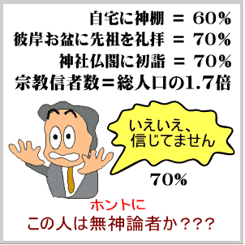単に宗教的な心を大切だと思うだけではなく、実際に参拝という宗教的行為を表す人が七割もいる訳です。
ところが、参拝を終えた人々に、神仏の実在を本当に信じますかと尋ねたら、大多数が信じないと答えるに違いないのです。前述のＮＨＫ調査でも、神仏の実在を信ずるのは日本人の四人に一人の少数派との結果が出ています。
これはどうしたことでしょうか。
日本人の七割が、自分では信仰を持っていないと答えている。同じ日本人の七割が、盆正月に神仏を礼拝する。
更に面白いことに、すべての宗教団体からの届けによれば、日本人の信者総数は、一億一千万人に上り、総人口の一・七倍という奇妙な数になっています（文化庁編纂の『宗教年鑑』平成二年版）。
日本人の宗教意識に関する統計は、全くわけが分かりません。七割の日本人が初詣での参拝に出掛けるのだが、神仏の実在を信じているのは、四人に一人しかいない。
日本人は、一体、無神論者なのか有神論者なのか、どうも日本人自身がよく分かっていないようです。
わけが分からないのは、ショートカット思考で考えるからです。
アップダウン思考で考えれば、一見わけが分からないように見える日本人の宗教意識も、すっきりと説明できます。
西洋人の宗教意識は、実に徹底しています。神を信ずるのであれば信ずる、信じないのであれば徹底的に信じません。西洋的宗教社会で無神論の立場を取るためには、ある意味で厳しい対決を通り抜けねばなりません。無神論者であれば、筋金入りの無神論者です。そこにはあいまいさはありません。
日本の無神論者は、その点甚だあいまいで、無節操とすら言われかねません。私は神仏の存在など信じていませんと言いながら、初詣やお盆には平気で神仏に手を合わせます。
実にあいまいです。そもそも日本に西洋風の無神論者がいるのかどうか甚だ疑問です。
この違いを理解するためには、日本人の意識の重層構造に注目しなければなりません。つまり、アップダウン構造に注目しなければなりません。無神論も有神論も、ショートカット思考の産物です。日本人の意識をこのショートカット的概念で割り切ろうとするとどうしても無理が生じます。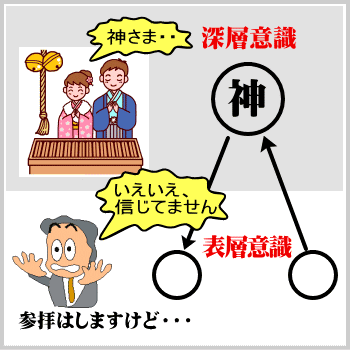日本人の不思議を理解して説明する為には、アップダウン構造を考慮しなければならないのです。
日本語はアップダウン構造をしている。
日本人は、日本語でものを考える。
日本人の表層意識に、日本語アップダウン構造の奥から深層意識が流れてくる。
深層意識では神仏の存在を認めていながら、表面意識では確信出来ないのが、大方の日本人です。確信は出来なくとも、日本語のアップダウン構造によって、深層意識が表面に響き出して来るので、何となく神仏に手を合わせてしまうのです。
正月やお盆は、日本列島全体が深層意識に里帰りする時期ですので、深層意識のハタラキによって日本人全体が初詣や墓参りをするのです。日本人を祈らせるのは、深層意識のハタラキです。
ところが、参拝が終わって、神仏の存在を信ずるのかと改まって聞かれると、表面意識のショートカット領域に引き戻されます。そこで、肉体の五感で神仏の存在を知覚出来ない以上、信じていないと答えざるを得ないのです。
日本人が神仏を信じていないと答えるのは、アップダウン構造の表面意識が、ショートカット思考に鋭く問い詰められて深層意識と切り放され、返答に窮した揚げ句に漏らす逃げ口上に過ぎません。
これが、信じないけど信じている、という日本人のあいまいさの構造です。
日本全国どの土地へ行っても、神社があってその土地の神様が祀られています。中には千年を超える昔から連綿として祀られている古社も珍しくはありません。神霊の存在が絵空事に過ぎないとしたら、千年の祀りのエネルギーは壮大なる無駄遣いとなってしまいます。
昔の日本人がそれほど愚かであったと、読者の皆さんはお考えでしょうか。
お盆、お彼岸、初詣、これらはすべて過去から連綿と伝承されてきた絵空事に過ぎないと、あなたはお考えになりますか。
日本全国、どのような山村へ参りましても神社がある。あなたのご先祖たちは、よほど絵空事が好きな酔狂者であったと、あなたはお考えになりますか。
「避雷針」から始まって、「ありがとう」、「すみません」、「おかげさまで」等の言葉がアップダウン構造をしていることを学びました。アップダウン構造の奥に大いなる存在が隠されていることを学びました。
そのあなたが、日本語を使ってものを考えながら、日本人が連綿と伝承してきた各地の神社の存在を、単なる絵空事として切り捨てることはできませんでしょう。
現代人はなかなか理性的です。古代人なら直観的に受け容れたことも、現代人は理性に照らして納得しなければ受け容れようとはしません。
ならば、その理性というものをとことん研ぎ澄ませて、現在のレベルの幼い科学を盲信することから止めたらどうですか。
盲信は理性を曇らせます。理性は言葉によってハタラキます。理性の力を逞しく身に修めたいのであれば、まず日本語のハタラキを見極めるべきです。アップダウン構造の奥をはっきりと見極めることです。
「ありがとう」「すみません」「すみきる」「おかげさまで」などの言葉の奥を見極めるならば、神霊は存在する、と確かに感覚できる筈です。
神霊の存在は、絵空事ではありません。
日本語の感覚の中に、日本人の心性の中に、神霊の存在は確かに座を占めているのです。
ところが、日本人の心の中における神霊の座というものは、ショートカット的地平に在るのではありません。それはあくまでもアップダウン構造の奥に鎮座しているのです。
例えば、日本人は「いただきます」と言って食事をはじめますが、諸外国の宗教信者は、食前の祈りを信仰する神に対して捧げます。
この「戴く」というのは、上位のものから下されたものを、下位のものが有り難く受ける、という意味です。つまり、天地の恵みを与えて下さる存在を上位に置き、自らは遜ってその恵みを頂戴する訳です。
「いただきます」は、表面上は食事を整えてくれた人に対する感謝とも取れますが、それ以上に、食物の背後に神のハタラキを認めてそれに感謝するという心が込められています。
神に感謝していながら、神を表面に出しません。
神や宇宙や自然法則などの大いなる存在は、アップダウン構造の奥に隠してしまうのです。
従って、私はこの神でなけりゃいけません、いや俺はあの神でなければならん、などという悶着がおこりません。キリスト教徒もイスラム教徒も仏教徒も、「いただきます」には反発せずに同調出来るのです。神霊の存在をアップダウン的に認識するというのは、実に素晴らしいことであるというべきでしょう。
このような日本人の心をうっかりとショートカット思考で切り取りますと、一見無宗教のように映ります。これだけ宗教的な民族が、他民族から無宗教呼ばわりされるのも、ショートカット思考では、アップダウン構造のあいまいさを把握しきれないからです。
このあいまいさが、日本人特有の寛容の精神につながります。
日本人は、宗教に対して極めて寛容です。
地元の産土神社の氏子であり、同時に仏教寺院の壇家を兼ね、更に別の宗教組織にも入っているという例が珍しくありません。
だからこそ、前述のように、全人口の一・七倍もの宗教信者がいるという結果になってしまうのです。
キリスト教系の信者は、たった０・八％にもかかわらず、クリスマスは今や国民的行事です。教会で結婚式を挙げるカップルも増えました。しかし、それがキリスト教信者の増加を意味する訳では決してありません。ユダヤ教、キリスト教、イスラム教などの一神教の信者から見れば、日本人の宗教意識のあいまいさは、許しがたい無節操と映ることでしょう。
しかし、このあいまいな意識構造の「おかげで」、日本は外来の文物を受け容れてそれと衝突することなく、うまく自らの風土に調和させることが出来たのです。
アップダウン構造とショートカット構造のどちらが包容力に富むかは、一目瞭然です。
アップダウン構造はショートカット構造を丸呑みすることが出来ます。従って、日本語の意識が英語の意識を取り入れるのは、さほど困難ではありません。事実、幕末明治以来、日本人は西洋の文物を巧みに取り入れて自家薬籠中の物としてきました。
しかし、その逆は、容易ではありません。
英語のショートカット思考でもって、日本語のアップダウン構造を呑み込もうとしても、とうてい呑み込めるものではありません。不可解な部分がどうしても残ってしまいます。
日本をどうにも理解できぬ特殊な国であると見なす日本特殊論もこの点に根本原因があります。西洋世界から見て、日本の在り方が不可解に映るとしたら、その根本原因は多くの場合日本語のアップダウン構造にあると言えるでしょう。
また日本人自身が日本を特殊視するのも、アップダウン構造がショートカット構造に収まり切らないことを感覚してのことであると考えられます。
アップダウン構造のあいまいさの「おかげで」、異質のものとの衝突が避けられるとしたら、そのあいまいさは一種の能力として積極的に評価すべきです。
世界の国々が日本の役割に期待するという際に、その期待は主として日本の経済力と技術力に向けられているようです。
それはそれで結構ですが、それ以上に、日本のこの「あいまい能力」を衝突回避能力として存分に駆使して、厳しく対立する宗教紛争などの調停を図ることが出来る筈です。日本語のアップダウン構造によって育まれた日本語意識を天の恵みとして貴ぶべきではないでしょうか。
ただし、注意して戴きたいのは、あいまいさ自体が尊いわけではないということです。
あいまいさを生み出す根本が貴いのです。その根本、つまり深層意識を、表面に完全に発現させると、あいまいさは消滅します。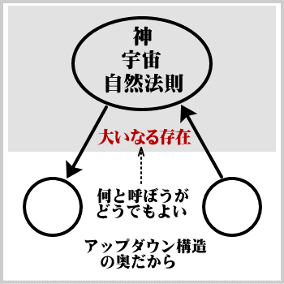
本書によって日本語のアップダウン構造が解明された今、ようやく日本人は自らのあいまいさの根底にある素晴らしさを認識するとともに、そのあいまいさをサラリと切り払って不思議の国ニッポンを論理的に説明出来るようになりました。
日本語アップダウン構造がもたらすあいまいさを尊びつつ、その奥を理性の光で照らしだして、理性のハタラキによって深層を明確に認識するのです。
「ありがとう」や「すみません」や「おかげさまで」等の日本語アップダウン構造の奥に、大いなる存在が秘められていることを明確に認識するのです。それを神と呼ぼうが、宇宙と呼ぼうが、自然法則と呼ぼうが、どうでもよろしい。ともかく大いなる存在によって、日本語が支えられていると明確に知ることです。それが、これからの日本人の生き方の根本になっていくことでしょう。日本語アップダウン構造を、新時代の日本人の常識として戴きたいと願ってやみません。
前章では、日本語を龍に例えて、その片鱗をいくつか調べました。
片鱗だけで龍の全体像が捉えられた訳ではありません。骨格を調べ、ハタラキ方を調べる必要があります。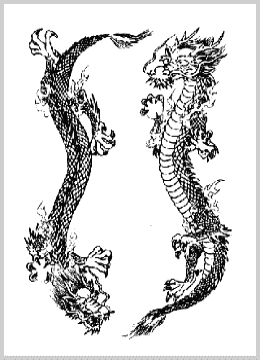
● 龍の片鱗＝日本語の単語
● 龍の骨格＝日本語の統語法（単語の組み合わせ方）
● 龍のハタラキ＝日本語を使う日本人の意識の特性
「ありがとう」「すみません」「すみきる」「おかげさまで」などの単語は、日本語という龍の「片鱗」をよく示しておりました。
チラリと顔を出すのが深層意識です。日本語の深層意識の「片鱗」を二つ三つ観ていただき、そこから全体を直観して下さい、と申し上げたいところですが、現代人は徹底的に論証を要求します。
真実、アップダウン構造が日本語の本質的構造であり、ショートカット構造が英語の本質的構造であるならば、そのことは、単に幾つかの単語に当てはまるだけではなく、文の組み立て方（統語法 syntax）の中にも観て取れる筈です。つまり、「片鱗」だけではなく「骨格」にも観て取れる筈です。
第二章では、日本語という龍の「骨格」と、英語というドラゴンの「骨格」を徹底的に比較検討してみましょう。骨格（統語法）の中にアップダウン構造が観て取れるならば、アップダウン構造はいよいよ日本語の本質的構造ということができるようになります。
その昔、地球上には、巨大な生物が、誰はばかることなく我がもの顔で闊歩していました。それは、あたかも「龍」の如き有り様で、周りの小動物を恐れさせたことでしょう。
つまり「恐龍」です。
植物もその時代にふさわしく、今日とは比較にならぬほど巨大なものであったそうです。一説によれば、これら恐龍や巨大植物の残骸から石油が作られたということです。
（１）龍の残骸から石油が作られた。この日本文を英語で表すと、次のようになります。
（２）Dragons' remains formed petroleum.
（３）龍の残骸が石油を作った。（直訳・疑似日本語）
（１）の日本文では、「作られた」と受動態を用いています。
（２）の英文では、「formed（作った）」と能動態を用いています。
（３）の直訳文は、英文の構造をそのまま日本語に移したものですが、正しい日本語からは程遠い疑似日本語というべきでしょう。
どうも「残骸が作った」という能動態が、日本人の感覚になじまないようです。この感覚は、日本語を母国語とする日本語人でなければ、納得していただけないかも知れません。外人さんは、「残骸が作った」という日本語がおかしいと感覚出来ないはずです。
「formed（作った）」という能動態は、「作られた」という受動態に転換して初めて日本語らしくなります。これで日本語の心が落ち着くのです。
受動態と能動態の転換ということは、日本語・英語間の翻訳を志す者が、まず学ばねばならない基本的テクニックの一つです。熟練した翻訳者は、ほとんど無意識のうちに態の転換を行っています。
では何故、同一のことがらを表現するのに、日本語と英語とで受動態と能動態の違いが生じるのでしょうか。
それは、動詞の性質が違うからです。日本語の動詞「作る」と、英語の動詞「form」には、根本的な違いがあるからです。
辞書を見ますと、「作る」は即ち「form」であり、「form」は即ち「作る」であると確かに書いてあります。しかし、「作る」と「form」は、違います。「作る」には、日本民族の意識が、「form」には英語民族の意識が凝縮して込められています。そして、この二つの意識が、大きく違っているのです。
何が、違うのでしょうか。
動作主が違います。
「作る」という動作を実行する主体（動作主）と、「form」という動作を実行する主体が、根本的に違っているのです。
（２）の英文において、「formed（作った）」の動作主は「remains」（残骸）です。しかし、「残骸が作った」では、日本語になりません。英語と違って日本語では、「残骸」のようなモノは「作る」の動作主とはなり得ません。
◇ 深層の動作主 ◇
では一体、何が、あるいは誰が、石油を作ったのでしょうか。「作る」という動作の主体、つまり動作主は、誰でしょうか。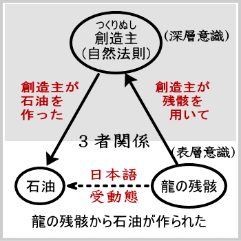
日本語では、「作る」の動作主は、明示されていません。
むしろ、それをあからさまに言葉で表現することを避けているかのようです。動作主を明示しないのですから、「龍の残骸から石油が作られた」と受動態を用いざるを得ない訳です。
日本人は、「作る］の動作主が、「残骸」ではない何か他のものであることを深層で意識しております。日本人の意識においては、「残骸」は、単に石油を作る材料にしか過ぎません。その材料にあるハタラキが加わって、石油ができるのです。
このハタラキの実行者が、「作る」の動作主、即ち「創造主」であります。 日本人は、アップダウン構造の深層で、この「創造主」を認めております。日本語はこの「創造主」を認め、そこから出発して文を組み立てます。
たとえ、日本人が、表面意識では「創造主」を認めていないつもりであっても、「残骸が石油を作った」などという表現になじめないのは、深層意識で「創造主」を認めているからです。「作る」というハタラキを為し得るのは「残骸」などではなく、「創造主」であるということを、心の奥で知っているからです。
従って、（１）の日本文を、その深層意識まで明確にして、「残骸」と「石油」と「創造主」の三者関係を明確にして表現し直すと、次のようになります。
・竜の残骸から、創造主によって、石油が作られた。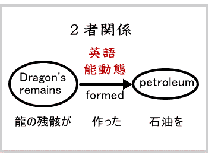
これが、日本語の受動態の秘密です。深層の動作主によって三者関係がもたらされ、その結果、受動態に変換しないと日本語としてしっくりこなくなるのです。
一方、英語のショートカット構造においては、「残骸」と「石油」の二者関係があるのみであって、第三者は問題になりません。従って、「残骸」というモノと「石油」というモノを直接に結びつけるだけです。深層の動作主は考慮しません。
この英語ショートカット構造は、日本語アップダウン構造の深みを持たないのですが、意識の範囲を限定すると、反って精確な表現が出来ると言えます。
筆者は、二十歳の時から技術文書の翻訳に従事して、すでに四十余年になりますが、英語の精確な表現の小気味よさを堪能し、奥深い日本語のあいまいさに辟易してきたのも事実であります。両言語は、構造がまったく異なるのです。
動作主は、いわゆる主語とは異なる概念です。
英語においては、主語は即ち述語動詞の動作主であると言い得るのですが、日本語では、主語と動作主とが異なる場合があります。より正確には、日本語における主語という概念が、英語における主語ほど明確ではないのです。
例えば、Dragons' remains formed petroleum. は、
○Dragons' remains 主語（S)
○formed 動詞（V)
○petroleum. 目的語（O)
と分析され、remains は主語であり、formed は述語動詞であり、remains が formed の動作主であることは明白です。
しかし日本語「龍の残骸から石油が作られた」においては、「残骸」は主語たり得ません。「残骸」を主語として「残骸が作った」などという表現は、日本語感覚がそれを許さないのです。
「作る」という動作を実行する動作主（主語）は、「残骸」でもなく「石油」でもなく、アップダウン構造の奥に隠れている「創造主」でしかないのです。
このことは、日本人であれば、成る程と感覚的に納得して戴けるはずです。しかし、ショートカット構造の英語感覚で生きる西洋人には、腹の底から納得は出来ないかも知れません。
ともかく、日本語においては往々にして、主語と異なる動作主がアップダウン構造の奥に隠れていることがあります。これが、日本語の「主語」概念があいまいになる根本的理由であり、その結果、さまざまな文法学説が、このあいまいさを解決しようとして努力しているようです。
そういう努力も、日本語がアップダウン構造をしているという真実を見つめない限り、砂上の楼閣を作り続けることになりかねません。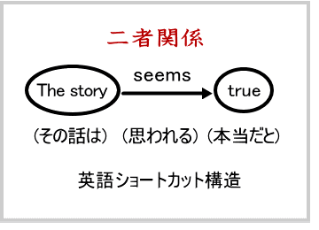
態の転換という翻訳テクニックを使うまでもなく、訳語自体に態の転換を含んでいる言葉もあります。
○ The story seems true.○ その話は、本当だと思われる。
右のように、seem という能動態の動詞が、日本語に訳されると「思われる」という受動態になるのは、その一例です。英語の能動表現が、日本語に移された途端に受動表現に変わるのです。これほど不思議なことはありません。
英語の例文（図参照）においては、seemsの主語はstory であり、主語以外の動作主が隠れている訳ではありません。仮に「私にとって思われる」の意味で to me を付け加えたとしても、me（私）が seems の動作主であるとは言えません。英語では story と true との二者関係を seems と言うだけのことです。ショートカット構造は、どこまでも二者関係があるのみです。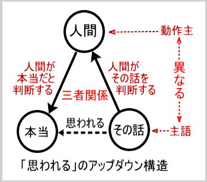
一方、和文（図参照）においては、主語は「話」であるらしいのですが、「思われる」という行為の動作主はアップダウン構造の奥にある「人間」です。「思われる」という行為は「人間」の心の中で起こることであり、「その話」は「思われる」ことの素材に過ぎません。
日本語アップダウン構造においては、「その話」と「思われる」の背後に第三者「人間」が潜んでいるのです。
・「人間」が「その話」を判断する。
・「人間」が「本当」だと判断する。
この二つを合わせて、同時に第三者「人間」をアップダウン構造の奥に隠して、「その話は本当だと思われる」と表現するのです。
能動と受動というのは、全く相反する概念です。能動イコール受動というのは、光イコール闇、東イコール西、というのと同じくらいに有り得ないことです。その有り得ないことが、日本語と英語の間では起こるのですから不思議なことです。"seem"という能動態の言葉が、日本語の中に入ったとたんに「思われる」という受動態の言葉に成ってしまうのです。
このような不思議が生じるのは、日本語がアップダウン構造をしているからです。ショートカット言語の文法をアップダウン構造の日本語に当てはめようとすると、いろいろな不都合が生じます。そして、その不都合を何とかやりくりしようとするので、不思議が生じます。
従来の文法の「主語」という概念は、ショートカット言語においては無理無く受け容れられるのですが、それをそのままアップダウン構造の日本語に押し付けると無理が生じます。
「日本語は主語が無い」という文法学説（三上文法等）が現れるのも当然です。
「主語が無い」という発見からさらに一歩を進めて、隠れた「動作主」を考慮するところから、真実の日本文法が構築できると筆者は考えています。
あるいは、「主語」の概念をアップダウン構造を踏まえて大きく広く拡張して、日本語全体の「主語」を考えてみるのも、真実の日本文法構築の柱となることでしょう。
その際には、表面上の言葉の対応に限定して「主語」と「述語」を考えるのではなく、アップダウン構造の奥に隠れている真実の「動作主」について考える必要があります。
そこで、次には、動作主について詳しく考察を進めることにしましょう。
英語には英語に固有の感覚があり、日本語には日本語に固有の感覚があります。日本語においては、とりわけ、動詞の中にその固有感覚が凝縮されて含まれています。
この固有感覚は、代々、日本人の血の中に流れ流れて今日に伝えられて来ました。血の流れと一つになって流れている感覚ですので、日本人はそれを殊更に「特殊感覚」として意識してはいません。
「特殊」とは、英語などの他言語に比較しての「特殊」ですが、本当は、この「特殊感覚」こそ人類すべての深層意識における「普遍感覚」であると筆者は考えています。人類全体がそのことを表面意識で明確に自覚するためにも、日本人自身がまず自らの感覚を客観的に眺めてみなければなりません。そのために、しばらくは、この深層における人類の普遍感覚を、日本人の特殊感覚として検討してゆくことにしましょう。
◇ 動作主は誰か ◇
日本語の特殊感覚は、突き詰めれば一言に要約出来ます。
「動作主は誰か」、この一言に尽きます。
「龍の残骸から（創造主によって）石油が作られた」においては、「作る」の動作主は、アップダウン構造の奥に隠れている「創造主」でした。また、これまでの論述で、「人間」がアップダウン構造の奥に隠れていることが度々ありました。
「創造主」や「人間」だけが「作る」の動作主たり得る訳ではありませんが、「残骸」のようなモノは、「作る」の動作主としては不適当です。
どうやら日本語動詞の動作主たり得るには、何らかの資格が必要なようです。
その資格を満たしていない表現は、例えば、「残骸が石油を作った」のように異様に響き、日本語としては受け容れられないことになります。
そこで、動作主たり得るのは誰か（何か）、また動作主たり得ないのは何かということを「作る」以外の動詞についても探ることにより、動作主の資格をはっきりと見極めてみましょう。
「動作主は誰か」ということが、「作る」だけではなく日本語の動詞全体について明らかになれば、日本語という龍の「骨格」の全体像がつかめる筈です。
英国で発表された Basic English は、わずか八五〇語の基本単語であらゆる英語表現を行おうとする試みです。その中には、動詞が十六語含まれています。その基本動詞に、対応する日本語動詞を付けて、次に示します。
Basic English 基本動詞十六語
ある（be） 来る（come） 得る（get） 与える（give）
行く（go） 保つ（keep） させる（let） 作る（make）
置く（put） 思われる（seem） 取る（take） する（do）
持つ（have） 言う（say） 見る（see） 送る（send）
これら日本語動詞にざっと目を通して、その動作主たり得るものは何かを考えてみて下さい。つまり、
「何が来る」のか、
「何が得る」のか、
「何が与える」のか、
「何が行く」のか、
を考えてみてください。
日本人ならまず第一に、と言うよりも順序は論外として、当然のことのように「人間」を思い浮かべる筈です。日本語動詞十六語のうち、「ある」は唯一の例外として後で説明するとして、他の十五動詞はすべて「人間」が動作主であることを強く意識させます。
「人間が来る」
「人間が得る」
「人間が与える」
「人間が行く」
と意識するのが日本語の感覚です。
ところが、英語動詞の動作主（主語）は、人間であろうがモノであろうが頓着しません。少しばかり英語を学んだことのある人であれば、モノを主語にした英語構文が頭の中にちらつくことでしょう。筆者のように、技術英文を書くことを仕事としていると、人間がこれらの基本動詞の動作主となっている英文には、殆どお目にかかれません。
技術英文では、圧倒的に動作主はモノです。用例には事欠きませんが、一例だけ挙げます。
・See the manual that comes with the machine.
× 機械と共に来るマニュアルをご覧下さい。（疑似日本語）
○ 機械に添付してあるマニュアルをご覧下さい。（正しい日本語）
英語では、マニュアルのようなモノが comesの動作主となっていますが、日本語で「機械と共に来るマニュアル」と言ってしまっては、日本語になりません。
そこで、アップダウン構造の奥に人間を置いて、
（人間が）機械に添付したマニュアル、
（人間によって）機械に添付されたマニュアル、
などと言い直さねばなりません。
このように、日本語の世界では、前述の基本動詞十五語に限定するならば、動作主の第一候補は、圧倒的に他を引き離して人間であるということができます。
英語には、動作主の第一候補はありません。人間を含めあらゆるモノが、ドングリの背くらべをしています。
日本語の動作主の第一候補が、圧倒的に他を引き離して人間であるということは、日本語と英語の構文の違いとなって現れます。
日本語は、人間が主語の構文、即ち人主構文を多用します。
英語は、モノが主語の構文、即ち物主構文を多用します。
実例を挙げて、説明しましょう。
（１）Next month will find him in Kobe. （物主構文）
（２）来月は、彼を、神戸で、見つけるであろう。（疑似日本語）
（３）彼は、来月、神戸にいるでしょう。（人主構文）
（１）の英語では何と、"Next month"（来月）のような時間というモノまでが、動詞の主語となり得るのです。（２）は、それをそのまま直訳した疑似日本語です。（３）の日本語では、「彼」という人間を主語に立てて、人主構文に変換しました。これでどうにか日本語として落ち着くのです。
「見つける」と言えば、「人間が」見つけると感覚するのが日本人です。
「来月」（Next month）が、彼を「見つける」（find）という物主感覚は、いやはや、日本人にとっては驚き以外の何物でもありません。「見つける」の英訳は "find" であると言いますが、「見つける」の背後には日本民族の人主感覚が、"find"の背後には英語民族の物主感覚が、どっしりと居座っているのです。
英語の物主構文を成り立たせている物主意識は、相当に根が深く、構文のみならず、語句の構成にも影響を与えます。
例えば、英文週刊誌『ＴＩＭＥ』の昔の記事見出しに、"Viet Nam Revisited" とありました。
日本語なら、定めし、「ベトナム再訪」といったところでしょう。
ベトナム再訪 （人主語句）
Viet Nam revisited （物主語句） （再訪されたところのベトナム）
「再訪」するのは、人です。「ベトナム再訪」と云えば、人がベトナムを再訪した、と意識するのが、日本人です。その人が、そこで見聞きした見聞録がこの記事の内容であると理解するのが、日本人の人主意識であります。
一方、Viet Nam Revisited（再訪されたところのベトナム）においては、第一の問題は、人ではなく、客観世界です。人が再訪したことに違いはありません。しかし、人の主観とは無関係に存在するベトナムの客観的在り方を客観的に報道しようとするのが、英語民族の物主意識です。
人間主観と無関係に客観世界が存在するという考え方は、今日の認識論では、もはや、通用し難いと言わねばなりません。それはともかく、英語のこの客観性は、英語の本性に由来します。そこには、ショートカット思考の鋭さがあります。
日本語は、人の立場に立って、あるいは、人の立場を背後に潜ませて、人が見聞きした見聞録（Record of personal experiences）を綴ります。「再訪されたところのベトナム」という物主表現は、日本語感覚からは到底生まれない表現です。
英語は、物の立場に立って、物そのものについての Information（客観的情報）を伝えようとします。その例をもう一つ挙げます。
湾岸戦争の際にアメリカの反戦グループが用いたスローガンは、No Blood for Oil（石油の為に血を流すな）というものでした。
No Blood for Oil （物主表現）
石油の為に血を流すな（人主表現）
No Blood for Oil には「（人間が）流す」という動詞がありません。日本語では、動詞「流す」を使って始めて落ち着いた表現となります。やはり日本語は、英語に比較して、動詞表現を多用する言語であり、しかもその動詞には人主意識が強烈に流れていると考えられます。
もちろん日本語においても、ショートカット的物主構文はあります。「雨が降る」「夜が明ける」のようにモノを主語とする構文は、もちろん可能です。
アップダウン構造は、そのようなショートカット構造を内包しているのです。
問題は、英語やその他の言語はショートカット構造のみであるのに対して、日本語はショートカット構造を含むアップダウン構造をしているということです。
そして、アップダウン構造を背後に潜ませる動詞については、動作主が問題になることがあるのです。
日本語において、そういう意味での動作主の第一候補が人間であることは、どうやら間違いがないようです。また人間と同様に、創造主が深層の動作主となることもこれまでの論述で確認しました。
そこで、次には、動作主の二大候補たる人間と創造主との関係が、日本語の世界でどのように考えられているのかを調べてみましょう。
一九八〇年代から九〇年代前半にかけて、日米間で最も懸案となっていたのが、貿易摩擦でした。米国は、日本市場への参入の難しさについて度々不満を表明していました。
当時これについて、作家の堺屋太一氏が、おもしろい解説をしておられます。
堺屋氏によれば、日本市場は相撲の世界に譬えられ、米国市場はプロレスの世界に譬えられるというのです。プロレスの世界では、昨日まで空手や相撲の世界で活躍していた人でも、興行契約さえまとまれば直ちにリングに上がれます。
ところが、相撲の世界は、いくらプロレスのチャンピオンであるという実力と実績があったところで、すぐに土俵に上がれる訳ではありません。相撲の土俵に上がるためには、相撲部屋に所属して新弟子として登録され、部屋の稽古を積み、相撲社会の慣習を身につけて行かなければなりません。
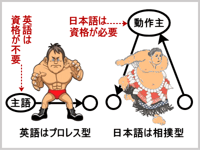堺屋氏の指摘は、市場経済のメカニズムについてのものですが、この指摘は日本語動詞と英語動詞の違いにも当てはまります。
つまり、 日本語の動詞は相撲型であり、英語の動詞はプロレス型であると言うことが出来ます。
プロレス型の英語では、form であれ、その他の動詞であれ、その主語（動作主）となるのに面倒な慣習や規則はありません。「残骸」であれ、ヒトであれ、その他の何物であれ、資格不要で、form やその他の行為のリングに上がることが出来ます。
しかし、相撲型の日本語では、何でもかんでもが自由に動詞の動作主と成り得る訳ではありません。動詞のハタラキを行う土俵に上がるためには、一定の資格が必要なのです。
その資格は、「作る」という創造行為に直接連なるような動詞については、一層厳しいものとなります。
それは丁度、横綱となるためには、強いばかりではなく品格が求められるのとよく似ています。この品格、資格を無視した言葉が日本語動詞の土俵に上がると、日本語の感覚から外れた不自然な表現となってしまうのです。
「残骸」のようなモノは「作る」の動作主としての資格がありません。それ故、「残骸が石油を作った」という表現は、日本人の心には不自然に感じられるのです。
但し、日本語動作主の品格を査定し資格を与えて下さるのは、相撲部屋の親方ではなく、深層の創造主なる神であると知るべきでしょう。
「龍の残骸から石油が作られた」において「作る」の動作主は、アップダウン構造の奥に隠れている創造主でした。
ところが、ヒトは、創造主なる神の分霊です。キリスト教などにおいては、神と人間は全く別の存在として峻別されるのですが、日本神道においては、ヒトは神ご自身が自らを分けられた存在、つまり分霊であるとされます。
従って、ヒトこそが、時々は創造主に代わって「作る」の動作主たり得るわけです。
それ故に「ヒトが（何かを）作る」とは言えます。
しかし、「残骸が（何かを）作る」とは言えません。
「木が作る、石が作る」とは、言えません。
それは、残骸も木も石も、神によって造られたモノ、被造物に過ぎないからです。「作る」というハタラキは、根本的には神のみが為し得るものであり、木や石などの被造物は「作る」というハタラキを為し得ません。
ヒトの肉体は被造物ですが、肉体に宿る霊性は、神そのものです。ヒトは神に連なって、この世に神の創造を現してゆく存在であるからこそ、「作る」の動作主として認められるのです。
生物は、擬人化することによって「作る」の動作主たり得ます。
「サルが酒を作る」のは、擬人化による擬人主構文と言えます。
生物は擬人化することが出来ると述べましたが、この点には、疑問が生じるかも知れません。
「サルが酒を作る」のは、擬人化として認めるにしても、「クモが巣を作る」のまでも、人間の行為に擬しているとするのは納得しがたい、とおっしゃるかもしれません。
この点は、実に鋭いご指摘です。
「クモが巣を作る」には、実は、重大な秘密が隠されています。それについて、クモさん自身のご意見を伺ってみましょう。
クモが人間に向かって言います。
「おい、人間さんよ。お前さんたちは、愛だとか真だとか、よく口にするが、一体、愛というものが本当にこの世に存在するのかね。もし存在するのなら、俺にも見せてくれないか。もし見せられないのなら、せめて俺にも納得が行くように説明してくれないか。そしたら俺も、愛というヤツがこの世に存在することを信じよう。」
人間がクモに答えます。
「おい、クモさんよ。お前さんが、そんなに理屈っぽいとは知らなかった。愛というものは確かに存在するし、ある意味で見せることも出来るし、説明することも出来る。しかし、お前さんがそれを理解することが出来るかどうかは、別問題だ。お前さんが、せめて、赤い血を持って生まれていたら少しは話が通じるんだがねえ・・・。それにしても、お前さんの作っているその巣は、なかなか奇麗な模様じゃないか。不思議だねえ。一体、誰に作りかたを教わったのかね。」
理屈っぽいクモは、フンと鼻を鳴らして答えます。
「そんなことは、不思議でも何でもないさ。巣の作りかたなど、教わる必要はありゃしないよ。俺がこうして宙に浮かぶと、腹の中からヒトリデニ、次から次へと糸が出てくる。すると、俺の手足がヒトリデニ、習ったこともない動きをして、次から次へと模様を作って行くのさ。」
人間が笑って答えます。
「お前さん、さっきは随分理屈っぽい質問をしていたが、実際にやっていることは案外素直なんだね。実はお前さんの理屈っぽい質問の答えは、お前さん自身の今の言葉の中に隠されているんだがねえ。と言っても、お前さんの意識では、とうてい、それには気が付くまい。
大体、愛というものを理解するためには、今のお前さんの意識を、グゥーンと大く広げなきゃならないよ。グゥーンと大きく大きく広げて、ヒトリデニということが何だか不思議に思えてきたら、愛というものを理解する素地が出来つつあると思ってよいだろう。
しかし、これだけは言っておくよ。たとえ、お前さんが人間並みに、愛というものを理解出来たとしても、実は、お前さんの理解した愛をはるかに超える大愛というものが存在するということを忘れないでもらいたい。
それに理屈を言うんだったら、中途半端な理屈はやめて、その理屈をとことん極め尽くすことだね。まあ、蝶々が網に飛び込んでくるのを待っている間に、ヒトリデニを不思議に思う心でもって、日本語でも勉強したらどうかね、アッハッハ。」
理屈っぽいクモにはなりますまい。
アップダウン構造をご存じの、ヒトたる読者の皆さんであれば、ヒトリデニの秘密は、容易に解いていただけるでしょう。
「ヒトリデニ」とは「おのずから」「自然に」という意味ですが、真意を理解するための方便として、「一人手に」または「一人出に」と書いてみるとよく解ります。
ヒトリデに、一人手に、一人出に。
一人手に、手足が動いて巣が出来る。
一人出に、腹から糸が出て来る。
ヒトリデニの「一人」とは、アップダウン構造の奥に隠れている創造主です。
ヒトリなる神は、一切を調えて下さいます。
つまり、「クモがヒトリデニ巣を作る」ということの背後には、ヒトリなる創造主のハタラキが隠されているのです。
アップダウン構造の奥に秘そむ大いなる主体、創造主、神が、大いなる主体性によって一切世界を主宰される、そのことを腹の底から承知しているのが、日本人です。そのことが、血に染み通り肉に食い入っているのが、日本人です。
しかも、そのことを、表面で意識しないのも、日本人であります。
一切世界を主宰される大いなる主体、創造主、神が、一切世界を大調和へと導こうとされることは、理屈を超えた究極原理であります。
理屈は不要です。
宇宙間一切の存在は、大調和へ向かって進む、このことを直覚するのに、理屈は不要です。
ヒトはそのことを直観的に知る能力を備えております。
ヒトは、「夜出のオドロキ」をその血の中に滾らせる霊性を備えております。
ヨロヅノモノが、限りなき神律によって生かされていることを覚知する直観を備えております。その神律が同じく我が身を生かして下さることを、熱い血の流れの中で感覚する心を備えております。
ヒトは、クモではありません。
星空を仰いでは大宇宙の神秘を想い、赤ちゃんが生まれては生命の神秘に対して敬虔なる想いを抱く。人間の理屈の通用しない根源の世界があって、その根源のハタラキによって万物が生かされていることを感覚する。この感覚こそ、クモがどうしても持ち得ない、人間ならではの感覚でありましょう。
理性というものは、とても素晴らしいものですが、理性を偏重するのはよくありません。
理性を超えた直観もまた、人間に与えられた貴い認識能力です。
人間は、理性の到達出来る範囲を超えて、直観的にものごとを覚知することが出来ます。
理屈っぽいクモが、創造主によって「ヒトリデニ」生かされながら、あれこれと理屈を並べて、創造主を感覚出来ないのとは訳が違います。（ただし、本物のクモさんは理屈を述べませんが・・・。）
万物の霊長たるヒトとして宇宙の実相に想いを致すというのであれば、冷徹な理性をぎりぎりの極限まで研ぎすませると同時に、熱い血潮が滾るような感覚、「そうだあーっ！」という感覚をも大切にしたいものです。
日本語アップダウン構造の深層に注目するならば、神は存在するということが、「そうだあーっ！」という感覚となって吹きあがるのではありませんか。
日本語のアップダウン構造の奥に座ることが出来るのは、神（創造主）または神の分霊としてのヒトであることは、既に述べました。
動植物や無生物（事象）などは、ヒトまたは神のハタラキを背後に潜ませて、あるいはそのハタラキに擬して動詞を使います。
ヒトのハタラキに擬した場合は、擬人主構文となります。
神のハタラキに擬した場合は、擬神主構文となります。
「人が酒を作る」は、人主構文です。
「サルが酒を作る」は、擬人化による擬人主構文と言えます。
「龍の残骸から（創造主によって）石油が作られる」は、神主構文の受動態と言えます。
「クモが（ヒトリデニ）巣を作る」は、「ヒトリ」なる神のハタラキによるものですので、擬神化による擬神主構文と言うことが出来ます。
「花が咲く」
「夜が明ける」
などは、「咲く」や「明ける」が人間以外の植物や無生物を動作主として前提してしていますので、人主構文でも擬神主構文でもないように見えます。
しかし、その深層を考慮すれば、
「花がヒトリデニ咲く」
「夜がヒトリデニ明ける」
として不自然には感じませんので、擬神主構文に含めてよいでしょう。
この「ヒトリデニ」は、「自然に」と置き換えてもよいでしょう。つまり、
「花が自然に咲く」
「夜が自然に明ける」
としても不思議には感じません。
「人がヒトリデニ酒を作る」が不自然に響くのは、人はすなわち神の分霊であり、創造者としての権能を揮い得る立場にあるので、「人」と「ヒトリデニ」を重ねると、言わば主体が二重化するからです。
「サルがヒトリデニ酒を作る」等の文も、サルは人間に近い高等生物であり、擬人化の度合いが強いので、同じく主体が二重化して不自然に感じられます。
「残骸」のような無生物は、擬人化は不自然であり、ヒトリデニを使って擬神化することも不自然です。従って、「残骸が石油を作る」は、不自然に響くのです。
無生物は、「残骸から（創造主によって）石油が作られた」のように神主構文の受動態にすると落ち着きます。
この神主構文（無生物受動態構文）は、ヒトリデニを使って、擬神主構文に転換することが出来ます。
すなわち、「残骸から（ヒトリデニ）石油が出来た」
この「出来る、出て来る」については、更に深い意味がありますので、第４章で詳しく述べます。
以上から、日本語の動詞構文を意味内容によって大きく四種類に分類することが出来ます。
(１）人主構文
(２）擬人主構文（擬人化）
(３）擬神主構文（擬神化）
(４）神主構文（無生物受動態構文）（擬神主構文に転化）
Basic English の基本動詞十六語およびそれに対応する日本語動詞十六語をもう一度眺めて見ましょう。
ある（be） 来る（come） 得る（get） 与える（give）
行く（go） 保つ（keep） させる（let） 作る（make）
置く（put） 思われる（seem） 取る（take） する（do）
持つ（have） 言う（say） 見る（see） 送る（send）
「ある」を唯一の例外として、他の十五動詞はすべて人主構文（すなわち神主構文）を取ることが感覚的に納得して戴けるでしょう。
では、次に、唯一の例外である「ある」について考えて見ましょう。
「水がある」「水は液体である」
これらの文は、一見、神主構文とは無縁の例外のように見受けられます。しかし、実は例外ではありません。そのことは、日本語の言霊の秘密を探れば明らかとなります。言霊と聞いて、「理性的」精神が反発を起こすようでは、その「理性」なるものはまことに貧弱でおそまつです。
これまでの論述で、日本語の奥に秘められた真相を少しずつ明らかにして来た読者の皆さんであれば、先入観を捨て去って、さらに真相究明に進んで戴きたいと思います。
「ある」は、「あ」と「る」から成ります。
日本古来の言霊の教えによれば、「あ」は本源の光です。一切の始まりです。
五十音は「あ」で始まります。アルファベットもＡで始まります。
旧約聖書のノア（ＮＯＡＨ）とは、大洪水で一切をノ（ＮＯ）で否定した後、新たにア（Ａ）で生命の営みを始めた人でした。
「る」は、あるリズムが健やかに転回し循環することを表します。
大体に「らりるれろ」は、転回・循環を表します。英語でも転がることを roll （ロール）と言います。
最近の造語でも、「ルンルン気分」などは、すべてが順調で健やかに転回するという「る」の言霊を見事に表しています。
従って、「ある」とは、本源世界の光がそこに循環運行していることを表します。つまり、神の光によって一切が存在していることを意味します。
「日」の循環運行が「昼」であり、「生命」の循環運行が「いる」であることも納得されます。「人がいる」と「水がある」の使い分けの理由もここから明らかとなります。
「ある」はそれ自体が、神主アップダウン構造の単語でした。
これまでの論述を踏まえて、動作主の資格についてまとめて見ましょう。
先ず、一方に人間を置き、他方に神を置いて、その間のヨロヅノモノを高等動物、下等動物、植物（および下等生物）、無生物、自然現象の五種類に分類します。（合計七種類）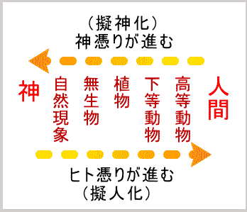
（１）人間
（２）高等動物
（３）下等動物
（４）植物
（５）無生物
（６）自然現象
（７）神
「神憑り」とは、神霊が人間に乗り移り、その意志を告げるとされる現象です。アップダウン構造の奥に人間が潜んでいるということは、日本語動詞が「神憑り」ならぬ「ヒト憑り」を受けているということです。
（６）の自然現象から（２）の高等動物に近づくに連れ、「ヒト憑り」の度合いが強くなり、擬人化の度合いが強くなります。
逆に（２）の高等動物から（６）の自然現象に近づくに連れ、「神憑り」の度合いが強くなり、擬神化の度合いが強くなります。
日本語動詞の動作主たる資格を得るためには、一方で擬人化してヒト憑りを受けるか、他方で擬神化して神憑りをうけるか、どちらかに依らねばなりません。
ヒトの背後には神がいますので、結局は、神に連なることが動作主の資格の根本であると結論付けられます。
宇宙間の森羅万象はことごとく神のハタラキによるものであり、神に連なる限りにおいて動作主としてハタラキを為すことが出来るが、神から離れては動作主たり得ない、つまり、ハタラキを為し得ないのです。
日本語は、神主アップダウン構造の言語です。
創造主たる神が日本語のすべての動詞を深層から統御し給うのであります。
日本古来の言霊の教えによれば、人は、霊止、すなわち、霊の止どまるところです。昔から、男を霊子（彦）と言い、女を霊女（姫）と言うことは、よく知られています。
霊は、即ち、レイ、零、ゼロであって、形がありません。形の無い世界から、形のある世界を、形作り、動かす、その根源のハタラキを為すものが、霊です。つまり、霊とは究極的には、創造主、神であります。
無形の世界におわします神のヒカリの一流れが、有形の世界に現れて人間の肉体に止どまっているのが、真実の霊止の姿です。ヒト、ヒメ、ヒコなどのやまと言葉には、「人は神の子である」という日本古来の思想が込められています。日本神道では、それを「神の分霊」と表現します。
ヒトが神の分霊であるということは、神と同質であるということです。
神と同質であるからこそ、神の存在を感覚出来るのです。
神と異質なものが神を感覚出来る筈がありません。
神がご自身のヒカリ（霊）を分け給うたものが人間本来の姿であることを徹底覚了すれば、ヒト即ち神であります。従って、ヨロヅノモノ数ある中でヒトのみが、神に代わって形ある世界を主宰する権能を有するといえます。
ヒトは、正しく、万物の霊長です。肉体は神によって造られた被造物ですが、人の霊性は神がご自身を分け与え給うたものであり、神と同質です。
神に代わって、形ある世界を主宰する権能は、神に連なって発揮しなければなりません。神から分け与えられた霊性と、完成された肉体とを用いて、形ある世界を調えることがヒトたるものの天命です。
ところが、今日までの人間は、肉体にまつわる想念を満足させることにのみ汲々として、霊性を軽んじて来ました。本来、霊性を高めることを目的とする筈の宗教までもが、争いの原因となって一役も二役も買っているのですから困ったものです。
肉体を研究する学者が、人間と動物を同一視するのも、一理あると頷かざるを得ません。今日の人間の肉体想念の延長上で、人間は万物の霊長である、と宣うたところで、草木に笑われても仕方がありません。
しかし、動物に連なる肉体想念は、人間の本質ではありません。
肉体を通してハタラク霊性こそが、人間の本質です。
この世は玉石混交の世界ですので、本質と本質ならざる醜い姿とが交ざりあって現れます。たとえ一面において人間がどれほど醜い姿を表しておりましても、地球人類約六十億、一人の例外もなく、本質はすべて神の子です。
「人は神の子、霊止である」という思想を日本人は日本語の中に持っています。つまり、日本人の意識の中に持っています。日本語の示す人間の本質をはっきりと自覚して、万物の霊長たる責任を果たすことが、日本人はもとより、人類全体の課題であると言えるでしょう。
日本語の動詞構文四種類をもう一度観てみましょう。
(１）人主構文
↑・・・(１)に包括される
(２）擬人主構文（擬人化）
(３）擬神主構文（擬神化）
↓・・・(４)に包括される
(４）神主構文（無生物受動態構文）
その深層を考慮すれば、（２）の擬人主構文は、(１)の人主構文に含められ、(３)擬神主構文は、(４)の神主構文にまとめられます。
つまり、日本語の動詞構文は、その深層の日本語感覚を考慮するならば、大まかに言って、
人主構文と神主構文の二種類に帰着すると言えます。
ところが、前項で説明したように、人間は神の分霊であり、神そのものでありますので、人主構文は、神主構文の展開と考えられます。
結局、日本語の動詞構文は、すべて神主構文の展開であると結論付けられます。
「人間すなわち霊止すなわち神が、万物を統べる」
これが日本語のアップダウン構造の深層に厳然として在るわけです。
これが日本語の究極原理であります。
日本語という龍が生命に代えても守り通すという宝玉であります。
この宝玉無くしては、龍の精彩は保たれません。
日本人はこの宝玉を心の奥に秘めております。
従って、「残骸が石油を作った」という英語の直訳表現を日本語として認めないのです。「残骸から（創造主によって）石油が作られた」と言い直して初めて安心するのです。
日本語は、神主構文の言語でありました。
これまでの論述で日本語の総体を包括的に説明することが出来たとは、勿論考えておりません。しかし、動詞構文の骨格については究明出来たであろうと考えています。
そこで、不充分な点は将来補充するとして、これまでの論述をまとめて、動詞構文総括表として次に示します。
動詞構文総括表
|
深層主語 |
学校文法の主語 |
例文 |
構文（動作主） |
|
神 が深層で すべてを 統御し給う |
ヒト |
ヒトが祈る |
人主構文 |
|
高等動物 |
サルが酒を作る |
擬人主構文 |
|
|
下等動物 |
クモが笑う |
||
|
植物（下等生物） |
花が笑う |
||
|
無生物 |
山が笑う |
||
|
自然現象 |
風が笑う、 |
||
|
高等動物 |
（擬人化の度合いが強い） |
擬神主構文 |
|
|
下等動物 |
クモが巣を作る |
||
|
植物（下等生物） |
花が咲く |
||
|
無生物 |
山が揺れる |
||
|
自然現象 |
風が吹く、雨が降る |
||
|
無生物 |
石油が（創造主によって）作られる |
神主構文 |
|
|
ヨロヅノモノ |
ある＝あ（本源の光）る（循環運行） |
日本語の文法は目に見えません。文字や音声に表して文法を論ずることは出来ますが、文法それ自体が目に見える訳ではありません。
日本語を龍に譬えて、片鱗を調べ骨格を調べてここまで論じて来ました。
龍の骨格も外から見える訳ではありませんが、龍体の中に厳然として存在して、龍のハタラキを支えています。
日本語という龍体の中にあるということは、日本人の心の中にあるということです。
この見えざる骨格を無視した表現は、日本語とは見なし得ないのです。
英語を母国語とする人々であれば、「人がものを作る」という表現が妥当であるならば「龍の残骸が石油を作る」という表現も妥当であると考えて当然です。
しかし、日本語環境で育てられた人々であれば、「龍の残骸が石油を作る」という表現は、日本語としては認められません。
「龍の残骸から石油が作られた、出来た」として始めて日本語感覚が納得するのです。
本書においてこの見えざる骨格を究明することが出来たのは、現象世界の奥に本源の世界が存在し、その本源世界に神が存在し、神の分霊として人間がこの現象世界に存在する、ということをはっきりと認めて考察を進めたからです。考察は、飽くまでも理性に依って為してきた積もりです。理性に依って、見えざる骨格を究明することが出来たのです。
これまで神の存在を論じるということは、理性的判断とは相反することとして、知識人から斥けられて来ました。神の存在なるものは、理性とは別の直観の領域に限られていました。
しかし、神の存在を論理そのものの中にもたらさぬ限りは、日本アップダウン構造の真相は絶対につかめません。神の存在を己れの信仰として心の中に秘めているだけでは不十分なのです。
学問の世界はその信仰とは別の世界であるとして、神を除外した論理によって日本語や日本文化を理解しようとしても、日本文化を根本から理解することは絶対に不可能です。
神を除外した論理によっては、せいぜい五合目、六合目まで登ることが出来たとしても、頂上を極めることは勿論、頂上を遥かに望むことすら出来ません。
今や、日本語の中に神の存在が組み込まれているという事実が判明しましたので、その日本語を使っている我々の意識の中にも、神の存在が組み込まれていることになります。当然、理性の中にも神のハタラキが組み込まれていることになります。
つまり日本語においては、理性的判断によって神の存在を確信することが出来るのです。
日本人の心の中には、日本語という龍がハタラキを現しており、その龍体の見えざる骨格が神の存在を前提にしているということを知れば、日本語の有り難さが心に染みて納得されます。
日本語によってハタラク理性もまた神の賜物でありました。
日本文法至極の一点とは、神です。
表面の動作主としては、ヒト、動物、植物、無生物、自然などがあるのですがそれらの深層にあってそれらを統御し給うのは、神です。
日本語は、この至極の一点、神から発せられた響きです。
この至極の一点は、アップダウン構造の深層に秘められていましたので、これまで日本人の表面意識に上ることはありませんでした。
そのことを引き続き次章で論証してみたいと思います。
日本語という龍の「片鱗」を観察し「骨格」を吟味して、日本文法至極の一点が、神であることを見極めることが出来ました。
日本語は神主アップダウン構造の言語であったのです。
それにしても、深い眠りに落ちていた龍も、こんなにあれこれと身体をいじられてはいつまでも眠ってはいられません。大きく背伸びをして、ハァーッと一息あくびをつくと、永い眠りから目覚めてしまいました。
「画龍点睛」という言葉があるように、龍の精彩は眼睛（瞳）に籠もります。その眼睛に精気を蘇らせると、龍は先ず真っ先に、大事に抱えていた宝玉を検めます。
その宝玉なくしては、龍は神力を発揮することは出来ません。
雲を呼び風を起こし神変自在の神力を発揮することを可能ならしめる宝玉を五本の爪でしっかりと掴むと、龍は再び天空目指して飛び立とうとします。
ここでは、日本語という龍が動き出すとどうなるか、その「ハタラキ」について検討して見ましょう。また、日本語という龍が何よりも大切にしている「宝玉」とは何かを考えてみましょう。
果たして、日本語という龍の「ハタラキ」と英語というドラゴンの「ハタラキ」の中に、アップダウン構造とショートカット構造の違いが見られるでしょうか。
「片鱗」や「骨格」のみならず、「ハタラキ」にまで、その違いが見られるならば、それはいよいよ両方の言語の根本的な特質と見てよい筈です。日本語の「ハタラキ」とは、日本人の意識の「ハタラキ」に外なりません。日本文化なるものは、この「ハタラキ」によって形成されたものです。
従って、日本語の「ハタラキ」の根本にアップダウン構造があるのであれば、アップダウン構造こそ日本文化の根本特質であると言えるでしょう。
それは正に、日本学の根本キーワードと称してよい筈です。
果たして、日本語という龍の「ハタラキ」の中に、アップダウン構造が見て取れるかどうか、実際に検討してみましょう。「宝玉」とは何かということも明らかになるはずです。
自然科学の諸法則の根底にある法則は、因果の法則です。
仏教においては、前世をも含めた原因に対応する結果が、今生（現世）あるいは来世において現れるという因果の法則を説いています。
自然科学においては、当然ながら、現象の世界に限定してこの因果の法則を認めています。その因果律がなければ自然科学が成り立たないのです。
Ａという事象があり、Ｂという事象がある。このＡとＢとを原因と結果という関係において結び付けることができるのは当たり前であると思われるかも知れません。大体に日本人は当たり前の度が過ぎて、深く物事を考えるのが苦手のようです。
しかし、西洋人は違います。霧がかかった山水画のような認識構造（つまりアップダウン構造）を持つ日本人には理解し難いことかも知れませんが、十八世紀イギリスの哲学者ヒュームは、徹底した思索の末に因果律そのものの存在を否定してしまいました。
さあ、大変です。因果律が存在しないとなれば、一切の自然科学が成り立ちません。といっても、論理の世界で成り立たないという意味です。日本人なら、ヒュームの理屈などには耳を貸さずにひたすら自然科学の研究に没頭したかも知れません。
しかし、西洋人はあくまでも生真面目に論理の世界で決着をつけようとします。この決着を付けたのが、ドイツの哲学者カントでした。
カントは、ヒュームによって因果律の存在は当たり前であるとする「独断のまどろみから醒
まされ」、因果律を救い自然科学的認識の「権利付け」を行うべく『純粋理性批判』を著しました。この書は、西洋哲学の最高峰の一つといってよいでしょう。
『純粋理性批判』でカントが取った解決法は、簡単に言えば、人間であれば誰でも生まれた時から既にその考える能力の中に、原因・結果の関係という概念が備わっているのだ、ということです。平たく言えば、人間の大脳には因果関係を認識するための人類共通のソフトウェアが生まれつきインストールされている、ということになります。
カントの言うように、因果関係を認識するソフトウェアは、本当に人類共通のものでしょうか。もし、日本語と英語における因果関係認識のソフトウェアに違いが認められるとしたら、それは即ち、両者の自然観が根本的に異なっていることにもつながります。そこで、日本語と英語における因果表現を比較することにより、両言語の因果関係認識のソフトウェアを点検してみましょう。
Pushing the button lights the lamp.
技術英文の翻訳をしていると、このような表現にしょっちゅう出くわします。この英文を英語の構造に即して直訳すると、
「ボタンを押すことがランプを点ける」
となります。これでは日本語になりません。正しい日本語は、
「ボタンを押すとランプが点く」
となります。英語の「light (点ける）」という他動詞が、日本語では「点く」という自動詞に変わっている点に注目してください。
・ボタンを押すことがランプを点ける。（他動詞、直訳）
・ボタンを押すとランプが点く。 （自動詞、正しい日本語）
英和翻訳において、他動詞から自動詞への変換は、枚挙にいとまが無いほどに頻繁に行われます。それは、日本語の動詞のアップダウン構造のせいです。
日本語においては、「点ける」という他動詞の動作主になり得るのは、人もしくはその背後の神です。「押すこと」という事象は、「点ける」の動作主とはなり得ません。つまり、「押すことが点ける」は不自然に響くのです。日本語としてはどうしても、隠れた動作主（人間）を前提にして「（人間が）押すと点く」としなければ落ち着きません。
このように、英語の他動詞「light（点ける）」が日本語では自動詞「点く」に変換されたということは、動作主が変換されたということを意味します。
明治以降の翻訳の歴史の中で、この動作主変換のルールが一部崩れて来るという現象も起こっています。つまり、「押すことが点ける」式のショートカット表現が日本語としてかなり一般化している例もあります。
（１）What made her do so ?
（２）何が彼女をそうさせたのか（直訳調）
（３）なぜ彼女はそんなことをしたのか（伝統的表現）
（２）の直訳調「何が彼女をそうさせたか」も最近ではかなり広く通用するようになりました。
しかし、本来の日本語では、「なぜ彼女はそんなことをしたのか」とすべきところでしょう。
その証拠に、試しにこの文の意味内容を文章語ではなく口語として、自分の心の中でつぶやいて見て下さい。自分自身の肉声としてこの内容をつぶやいて見るならば、
「何が彼女をそうさせたか」
のような表現は、口語のつぶやきとしては絶対に出て来ないはずです。やはり、本当の日本語は東京の女性なら
「どうしてそんなことしちゃったの、ねえ、どうして」
となるでしょうし、大阪の男性なら
「なんでそんなことしたんや、ええ、なんでやねん」
となるはずです。それは、文章語は翻訳の影響を受けやすいのですが、口語は民族の肉声の表現ですので翻訳の影響を受けにくいからです。
◇ こうすると、そうなる ◇
このように言葉というものは、特に翻訳文というものは、外国語の影響を受けてある程度は変化して行きます。しかし、民族の肉声に込められた思考の原型というものは、なかなか変化するものではありません。
「ボタンを押すことがランプを点ける」というショートカット表現は、やはり日本語としては認められません。「ボタンを押す」という事象と「ランプが点く」という事象とを因果関係で結び付ける場合には、「こうすると、そうなる」という構文を使うのが普通の日本語です。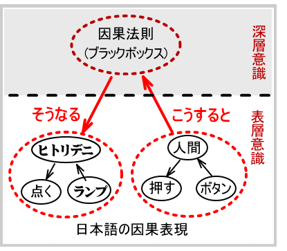
上図において、「こうする（ボタンを押す）」ことと「そうなる（ランプが点く）」こととは、アップダウン構造で結ばれます。さらに、「こうする」の中身と「そうなる」の中身自体がアップダウン構造になっています。
ところが、「こうする」ことと「そうなる」こととが、英語のように直接的に因果関係で結ばれている訳ではありません。「こうする」ことと「そうなる」こととの間にブラックボックスがあり、その中身は分からない。ただ、ブラックボックスに「こうする」をインプットすると「そうなる」というアウトプットが現れる。
日本語では、現象世界に現れた二つの事象を表面意識の領域でストレートに結び付けることをしません。その背後の隠れたハタラキを無意識のうちに認めます。二つの事象プラス背後のハタラキという三者関係に持ち込もうとする力がハタラクのです。
このアップダウン構造の奥にあるブラックボックスが、因果法則であると考えられます。これが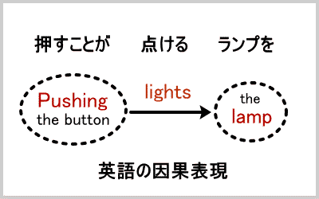日本語における因果関係認識のメカニズムです。
上図は、英語の因果表現を示したものです。英語は、直截簡明です。隠れたハタラキは微塵もそこに認めません。「ボタンを押す」ことと「ランプが点く」ことの二つの事象の因果関係は、lights（点ける）という他動詞によって完璧に表現し尽くされます。あくまでも二者関係で済ませようとします。
筆者のように技術文献の翻訳をしておりますと、ショートカット構造の小気味よさに感心することがしばしばあります。二者関係は分かりやすいのです。逆に、日本語原稿のあいまいさに辟易することもまた、しばしばであります。何しろ、アップダウン構造の奥に隠された動作主を逐一引っ張り出して来て、ショートカット構造で明確に表現しなければならないのですから、なかなか面倒です。隠された動作主が見つからない場合は、滅入ってしまいます。
日本語の因果表現「こうすると、そうなる」は、英語に比べると実に大らかであり、現象を精確に関係付けるという点では甚だあいまいですらあります。
例えば、「春が来ると花が咲く」や「トンネルを抜けると雪国であった」なども「こうすると、そうなる」という構文になっていますが、そこに直接的因果関係が見い出せる訳ではありません。「春が来る」ということが直接の原因となって「花が咲く」という結果が現れるとは考えられません。
しかし、この二つの事象が全然無関係である訳でもありません。
同様に、「トンネルを抜ける」ということが直接の原因となって、「雪国であった」という結果が生まれる訳ではありません。しかし、二つのことが全く無関係であるとも言えません。
このように、日本語の因果関係は、大まかな、精確性を欠く構文で表現されます。
「ボタンを押すとランプが点く」という直接的因果関係も、「風が吹くとおけ屋が儲かる」というあいまいな因果関係も、共に「こうすると、そうなる」というアップダウン構造の大らかな構文で表現されます。
英語の因果関係は、ショートカット的に精確に表現されます。英語は確かに精確です。
しかし、翻って考えて見ますと、英語の精確さなるものは、記述を浅く限定するところに成り立つ精確さに過ぎません。因果関係は、焦点の置き所によって浅く捉えることも出来るし、深く捉えることも出来ます。
「ボタンを押すことがランプを点ける」という精確な因果表現も、一歩踏み込んで、「電流が流れること」がランプを点けると考えることが出来ます。
さらに一歩踏み込んで、「電流が流れること」の奥の原因を尋ね、さらにそのまた奥の原因を尋ねるという風に、どこまでも深く原因を尋ねることが出来ます。
原因の探求をどこまでも進めて行くと、ついには現象世界を超えて、現象を現象たらしめている本源世界へ行き着かざるを得ません。子供が、何故どうしてをしつこく繰り返すと、母親はついに答えることが出来なくなって、神様のせいだと言わざるを得なくなるのと同様です。
究極的には神様のせいだということをよく知っていて、それをブラックボックスとしてアップダウン構造の奥にしまい込むのが、日本語の因果表現です。
それでは近代科学的認識が発展しないとして、考察を現象世界に限定し記述レベルを浅く限定して、その範囲内で精確な因果表現を追及するのが、英語です。
考察範囲を限定して精確に記述することによって近代科学を成立させたのは、英語をはじめとする西洋言語の長所であったと称えるべきでしょう。
同時に、日本語の大まかさこそ、実は宇宙の実相に忠実であって、真理を大らかにえているものであることをも忘れてはなりません。
因果律を認識するソフトウエアが人類共通のものであるとするカントの説（そして現在の一般常識）は、日本語アップダウン構造によって否定されました。
日本人が因果律を認識する大脳ソフトウエアは、アップダウン構造に彩られていました。このことは日本人の科学精神にとってマイナス要因とはなりませんでした。
むしろ逆に、それは日本人が創造性を発揮する原動力ともなったと筆者は観ています。
何故ならば、アップダウン構造はショートカット構造を包含することが出来ますので、日本人はアップダウン構造によって宇宙の実相に深く根を下ろしながら、ショートカット構造の持つ精確さを兼ね備えることが出来るからです。
西洋近代科学なるものは、動もすると世界人類共通の客観的認識体系であると考えられがちです。つまり、外的世界の客観的認識方法には、日本人であれ西洋人であれ違いは無いと考えられがちです。
しかし、外的世界と内的世界とを厳しく区別するという図式（主観・客観図式）が成立したのは西洋においても近代以降の比較的最近のことです。まして東洋日本の自然観が、西洋近代の自然観とトータルに重なるとは考えられません。両者はそれぞれの特殊性を持つ筈です。
前節では、人類共通と見なされていた因果率の認識ソフトウェアが日本語と英語とで大きく異なっていることを明らかにしました。
因果率は自然認識の大前提でありますので、因果率の認識ソフトウェアが異なるということは、当然、自然観が異なるということに帰着すると考えられます。
日本の自然観を論ずる際に注意しなければならないのは、それが複合的であるという点です。つまり、日本人は、表面上は、西洋近代のショートカット的自然観を受け容れたように見えますが、その深層では、伝統的アップダウン的自然観を根強く持ち続けているのです。それが可能であるのは、アップダウン構造の包容力のおかげであります。
日本の自然観の特殊性として、ショートカット的自然観とアップダウン的自然観とを心の中で矛盾無く共存させているという点が挙げられるのですが、この特殊性は文学や科学、さらには農業、林業、漁業など自然と直接に関わる生産活動にまで影響を及ぼしています。本節では、その間の事情を考察してみましょう。
日本語の「自然」という言葉には、二つの異なる意味が混ざり込んでいます。つまり、伝統語「自然」のアップダウン的意味の中に、翻訳語「自然」のショートカット的意味が後から混ざり込んだのです。
翻訳語「自然」のショートカット的意味は、nature の訳語として日本人の意識の中に取り込まれて来ました。nature は、人間主観の対極にある外的客観世界すなわちモノです。
今日では、「自然」は即ち nature というモノであると私たちは直ちに受け取って何の葛藤も起こしません。現代人はこのことを至極当然のことと受け取っているのですが、日本の伝統的自然観は、それとは様相の異なるものでした。
ショートカット思考においては、人間主観と客観世界は厳しく峻別されます。
一方、日本語アップダウン思考においては、人間主観と客観世界とが融合するのです。
主観と客観を峻別するか融合するかという大きな違いを持つ二つの言語が、nature と自然という言葉にどれほどの大きな違いを秘めていることか、想像して余りあることでしょう。
西洋的理性をあらわす ratio は比率という意味もあるように、物事を分化してその比率を計るということが西洋的理性の根本にあります。物事を分化するためには、ショートカット思考で以て対象を鋭く見つめなければなりません。見つめる主体（人間）と見つめられる客体（モノ）とを明確に区別しなければなりません。このような区別の上に立って、客体 nature がある訳ですので、それを翻訳語「自然」として日本語の中に入れるということは、主体と客体とを峻別するショートカット思考を受け容れるということになります。
アップダウン構造が如何に包容力に富むとはいえ、全く異質のショートカット思考の産物たる翻訳語「自然」が日本語の中に定着するまでに、何の葛藤も起こさなかった訳ではありません。その一例として、明治期の森鴎外と巖本善治による「文学と自然」論争が挙げられます。（柳父章『翻訳語成立事情』岩波新書、二一七～一三一頁）
この論争の内容に立ち入るのはここでは避けますが、要するに、翻訳語「自然」のショートカット的意味は、伝統語「自然」のアップダウン的意味とはかなり異質のものであったが故に、二つの意味の混在によって混乱が生じたのが、「文学と自然」論争の根本原因です。
自然は即ちモノであるとする考え方が日本語の中に定着するまでには少しばかりの摩擦を生じた訳です。
しかし、他のアジア諸国が西洋近代のショートカット的思考に接して引き起こした摩擦に比較すると、日本が経験した摩擦は甚だ軽微なものでありました。それが甚だ軽微であったのは、翻訳後「自然」の受容によって伝統語「自然」の意味が改変駆逐された訳ではなく、伝統語「自然」のアップダウン的意味構造（主客融合）は見事に保存されて今日に至っているからです。
いや、むしろ改変されたのは、ショートカット的「自然」でした。後で詳しく説明するように、本来ショートカット的意味で「自然」と称していたものまでが、アップダウン的意味に改変されてしまったのです。
「自然」という言葉は、nature の翻訳語として使用される以前から日本語の中で使用されており、さらに古くは中国の聖典『老子』にも用例があります。
人は地に法り、地は天に法り、天は道に法り、道は自然に法る」（老子第二十五章）
この老子の「自然」が伝統語としてのアップダウン的意味をよく表しています。中国古典の用例ではありますが、西洋に比較すれば、日本も中国も東洋的自然観において共通していると言えるようです。
老子の言う「道」とは、創造の原理を指し、宗教的に表現すれば、絶対者、神となります。すると、人、地、天、道（神）がすべて「自然」に収斂されることになります。
ここに言う「自然」とは、nature の意味ではありません。nature の意味ならば、むしろ地と天を合わせた「天地」という言葉が古くから用いられていました。
人も、天地（nature )も、道（神）も、すべてが「自然」であるという場合の「自然」とは、「自ずから然り」（ヒトリデニそうなる）ということを意味します。この場合の「自然」とは、モノというよりは属性ないしハタラキの様相と考えるべきでしょう。
つまり、人と、天と地（nature )と、道（神）という四つのモノとは別に、第五のモノとして「自然」があるのではなく、四つのモノが究極的には「自ずから然り」というハタラキを持つのであると解釈されます。
江戸中期の思想家・安藤昌益も『自然真営道』において「自然」がハタラキであると捉えています。
夫れ自然は、始めも無く終りも無く、自り感き、他を候つに非ず（自然真営道）
安藤昌益の「自然」は無始無終の自ずからなるハタラキであるとする点で、老子の「道は自然に法る」に連なります。やはり、老子の言葉は日本人の心性にも流れていると見てよいようです。
「人は地に法り、地は天に法り、天は道に法り、道は自然に法る」のですから、人、地、天、道の順に「自然」度が上がって行くと受け取れます。
最後の道（神）は「自然」度一〇〇パーセントであり、完全に「あるがままに、自ずから然り」という在り方をしていると考えられます。
天地（nature)は道（神）の創造の展開であるという点で「自然」度が道（神）と同列とは言い難いでしょう。人間は「あるがままに」どころか、自己の勝手な振る舞いで「自然」度を大幅に減じています。
ここでは「自然」のハタラキの範囲内に人間が含まれているということに注目すべきです。伝統語「自然」のハタラキは、人間が為すことも出来るのです。安藤昌益は、そのような人間のあるがままの状態を「直耕」であるとして、農耕中心主義を唱えました。
人間は伝統語「自然」に連なって、「あるがままに」生きることが可能であるのです。そこにはアップダウン構造の奥に大なる主体を隠し、その主体のハタラキを「自ずから然り」と捉え、ヒトもモノも融合したままに「自ずから然り」なる在り方をしているとするアップダウン思考があります。
「自然」という言葉がハタラキに重点を置いて受け取られていることは、伝統語「自然」が、名詞としてよりはむしろ「自然の」や「自然に」などの形容詞や副詞として用いられることが多かったことと無縁ではないでしょう。
前掲書『翻訳語成立事情』によれば、江戸時代の蘭学者が編纂した辞書では、「自然」は形容詞として扱われるのが大勢であり、これが辞書において一般に名詞として扱われるのは明治二十年代以降だそうです。それ以前は、名詞nature の訳語としては「天地万物」などが当てられており、「天地自然」という語句も、天地（nature)は「自然なり」ということであったようです。（『翻訳語成立事情』一三四～一三七頁）
「自然」を名詞として用いる例は、前述の『自然真営道』（一七五三年）からの引用文にもあり、本居宣長にも用例は多数ありますので、それが明治二十年代以後に名詞化したとは言えません。しかし、日本語は名詞構文が苦手であり、動詞構文を得意とすることを考えると、「自然」という言葉も大勢としては名詞よりは形容詞や副詞として使用することが多かったということは納得出来ます。
名詞構文を重視する言語（英語）は、名詞が豊富です。動詞の名詞化も簡単にできます。西洋語では、be（ある）という動詞に対して名詞形 being（あること）があるのですが、beingに関する哲学が日本に入ると、それに対して「存在」といういかめしい訳語（名詞）を作らねばなりませんでした。
物事を名詞によって概念的に捉えることは、西洋語の得意とする所ですが、日本語にはそのような習慣が乏しかったのです。
西洋哲学の用語は大部分が西洋の日常語（名詞）によって組み立てられているのですが、それを日本に輸入する場合には、非日常的な漢語によって訳語を新しく造り上げねばなりませんでした。
もし nature を日本語に翻訳する際にも全く新しい訳語（名詞）を作り上げたのであれば、natureのショートカット的意味も日本語の中にそのまま根付いたかも知れません。しかし、実際には、最初に訳語として充てられたのは「天地万物」というアップダウン感覚溢れる伝統語でした。さらには「自然」というアップダウン感覚の極致とも言うべき伝統語が使用されるに及んでは、nature のショートカット的意味は換骨奪胎され、主客融合した日本の「自然」観の中に取り込まれて行きました。
伝統語「自然」が日本語の中で専ら名詞（モノ）として用いられていたのであれば、換骨奪胎ぶりも抑えられたでしょうが、名詞ではなくハタラキを表す形容詞や副詞として用いられることが多かったという歴史があり、それが換骨奪胎ぶりに一層輪をかけることになりました。
例えば、リンゴという名詞（モノ）は、ミカンと混同される恐れはまずありません。
しかし、リンゴの属性である「美味しい」という形容詞は、ミカンに対しても用いることが出来ますので、仮にリンゴを「美味しいモノ」と名付けた場合には、「美味しいモノ」の意味の中にミカンが入り込む可能性がある訳です。
ショートカット的客体としての nature は、人間主体とは別物として区別され人間主体を含みません。ところが、その翻訳語にアップダウンの象徴とも言うべき「自然」を充てたのですから、nature のショートカット的意味はアップダウン的改変を受けざるを得ません。nature というリンゴは確かに「美味しいモノ」だが「自然」というミカンだって「美味しいモノ」に含まれるとばかりに、翻訳語「自然」の中に伝統語「自然」の意味内容が混ざり込んで行くのです。
「自然」のハタラキが人為を超えてハタラクように、言葉のハタラキは人間の思惑による定義を破って展開して行くのです。
かくして、nature のショートカット的意味は日本語「自然」のアップダウン的意味によって、完膚無き迄に打ちのめされてしまいました。その顕著な実例を、日本の自然主義文学に見ることが出来ます。
文学における自然主義 naturalisme は十九世紀フランスのエミール・ゾラによって確立されました。ゾラは小説を書く際に、想像力を極端に廃し、自然科学的な観察・実験の方法を用いて、人間の生を写し取ろうとしました。ゾラの自然主義文学にいう「自然」とは正にショートカット的客体としての nature のことでした。文学である以上、人間を写すのでありますが、その人間とは nature としての客体化された人間であった訳です。
フランス自然主義文学が日本に伝わると、日本的変質を被ります。日本の作家たちは、虚構を廃して「あるがまま」の自分を見つめ、その本能的愛欲をもあからさまに告白するということを以て、自然主義文学としたのです。それがやがて、極めて日本的な私小説の出現へと繋がります。この「あるがまま」が問題です。
「あるがままの自分を見つめる」ということは、ゾラの唱えた自然科学的方法と同じ様に見えて、実は根本的に異なる点があります。日本の自然主義文学者達にとって「あるがままの自分」とは、自然と融合したアップダウン感覚あふれる存在でありました。それは、主観と客観とが融合して未分化のままの、伝統的日本語感覚そのままの自分であったのです。フランスの自然主義文学者が、主観と客観とを峻別し、そのショートカット的主観をもって人間を客観視したのとは大なる隔たりがあります。
『翻訳語成立事情』には、日本の自然主義文学を代表する田山花袋と島村抱月の文章が引用してあります。その引用文が日本独特の自然主義を的確に表していますので、同書の見識に敬意を表して、同書引用と同一の文章をここに引用します。
自分の内面も亦一自然である。他の宇宙が自然であると同じやうに、矢張自己も一自然であるといふことである。そして同じ法則が、同じリズムが同じやうに自他を透して流れてゐるといふことである。 （田山花袋『花袋文話』一九一一（明治四四）年）
これはまるで、人も天地も道も自然に法るとする老子の言葉そのままではありませんか。フランスの自然主義者たちが抱いていたショートカット感覚は、かくまで見事にアップダウン構造に取り込まれてしまったのです。
同じく島村抱月は語ります。（引用文は字体を改めルビを付した。）
事象に物我の合体を見る、自然は茲に至っては其の全円を事象の中に展開するのである。其の事象は冷かなる現実客観の事象に非ずして、霊の眼、開け、生命の機覚めたる刹那の事実である。・・・ 我れは此の時始めて自然の真実の前に感涙の涙をにじますのである。自然に対して何とも知れず涙のこぼれるといふ感は、我れの全く空しくなった後に始めて発するものであろう。・・・ 無念無想後の我れの情、我れの生命は、事象と相合体して、生きた自然、開眼した自然の図を作って来る。・・・ 自然といふ中に既に我が見えざる生命となり、感情となって合体したのである。 （島村抱月「今の文壇と新自然主義」一九〇七（明治四〇）年。『島村抱月文芸評論集』岩波文庫、八四～八六頁）
これはまるで、大宇宙と自己の一体化を目指して修行する求道者の言葉のようです。「事象に物我の合体を見る」のはショートカット的認識方法では不可能です。アップダウン構造の奥においてこそ、「物我の合体」が可能となるのです。
ショートカット的 nature にはショートカット的「我れ」が含まれません。含まれないということは、消えてしまうということではありませんでした。ショートカット的「我れ」は、nature とは別に厳然としてショートカット的地平に在るのです。
ところが、natureに「我れ」が含まれないということが日本語の世界に入りますと、「我れ」はショートカット的地平から消えてしまい、アップダウン構造の奥へ昇って「無念無想」の境地になってしまいます。「無念無想」の「我れ」はアップダウン構造の奥で「自然」と合体して「感涙の涙をにじます」のです。
このような主張をフランスの自然主義文学者たちが聞いたら、どれほど驚いたことでしょうか。日本の文学者たちは、フランスの自然主義文学を誠実に受け容れようとしました。しかし、その誠実さは、アップダウン感覚に深く根ざしていました。それ故、「事象に物我の合体を見る」ことが新しい自然主義文学であると彼らは真面目に考えたのでした。
このように、日本の自然主義文学の作家たちにとっての「自然」とは、その中に「我れ」が合体しているアップダウン的伝統的意味が主であって、natureの翻訳語としてのショートカット的意味は希薄でありました。しかし、希薄ではありながら、ショートカット的態度を全く無視した訳でもありません。「あるがままの」自分はアップダウン構造をしているのですが、その自分を虚飾を排して見つめ想像力を加える事なく綴るという点ではショートカット的でありました。
こうして彼らは、本能的愛欲を「あるがままの自然」と考えて、それを赤裸々に（ショートカット的に）綴ったのです。しかしそれは、飽くまでもアップダウン構造の一部としてのショートカット意識でありましたので、フランス自然主義のように自然科学的な観察・実験の方法を用いるという意識にまでは至りませんでした。
同じ自然主義という旗印を掲げながら、ショートカット構造とアップダウン構造との違いが、これほど大きな内実の違いをもたらすとは、実に驚くべきことです。花袋や抱月の前記の言葉をゾラが聞いたならば、それが同じ「自然」主義文学者の言葉であるとは到底信じられなかったに違いありません。このため、文学史で日本独特の自然主義が論じられる場合には、「日本独特の」という限定をつけて論じられる訳です。
文学や思想は人間の内面性に密着したものですので、それを輸入して翻訳しても内面性までは翻訳し切れないであろうことは容易に理解出来ます。
では、人間の内面性とは一応は無関係と考えられるモノに関する知識体系（科学技術）の翻訳はどうでしょうか。
筆者は長年に亘り技術文書の翻訳に携わってきました。英語の技術文書を日本語に翻訳していますと、日本語には「なる」を多用する傾向があるということに気付きました。
・The new product eliminates the need for maintenance.
×（その新製品がメンテナンスの必要を除去する）・疑似日本語
○ その新製品によってメンテナンスの必要がなくなる。
「新製品が除去する」という言い方は、ショートカット言語の表現であって、日本語にはなじみません。アップダウン意識においては、新製品を（人間が）用いることによってメンテナンスの必要が（自然に）なくなるのです。
この構造は「おかげさまで」の構造に似ています。目の前にいる人の手助けさえもアップダウン構造の奥に隠してしまい、「お陰様で（眼に見えないハタラキによって）」助かりましたと表現するのが日本語です。「新製品」も先ずはアップして深層の本源世界へ送り込みます。次にダウンして、メンテナンスの必要が無いという状態に「自然になる」と言うのです。もう一つ例を挙げます。
・The discovery gives proof of the existence of God.
×（その発見が神の存在の証拠を与える）・疑似日本語
○ その発見が神の存在の証拠となる。
○ その発見から神の存在が証明される。
○ その発見から神の存在が証明出来る。
「発見が証拠を与える」という表現は日本語としては違和感があります。give は「与える」に等しいとするのは飽くまでもショートカットの世界のことです。
第二章で述べたように、日本語動詞の深層には創造主たる神が動作主として隠されています。
隠されてはいますが、そのハタラキは止むことなく日本語動詞に強烈な光を放射しておられるのです。その光が日本語動詞の生命となって、日本語感覚を作っているのです。
従って、ショートカットの主語と述語の関係は、隠れた動作主のハタラキを秘めるアップダウン構造に置き換えなければ日本語にはなりません。そこで「証拠となる」となるのです。
普通 give は「与える」と訳されますが、アップダウン構造への変換を行うと、give を「与 える」の反対に「得られる」と訳すことさえ可能です。
・The discovery gives proof of the existence of God.
・その発見から神の存在の証拠が得られる。
「与える」のはショートカットの世界です。
「得られる」のはアップダウンの世界です。
日本語においては、眼に見える「発見」もそれ自体は動作主とはなり得ません。その発見を可能ならしめた深層の存在に想いを致してアップダウンの奥に至り、そこから「証拠が得られる」と表現するのです。
その他、深層意識に鎮座まします創造主たる神の光の強弱様相によって、
・その発見から神の存在が（神によって）証明される。
・その発見から神の存在が（人によって）証明出来る。
などの表現も可能となります。
「証明される」のも「証明出来る」のも、根底には「なる」という流れがあってのことであると考えられます。これらの表現は根底において「なる」に込められた自然観を共有していると理解出来ます。
このように日本語で「なる」が多用されることは、日本人の自然観と無縁ではありません。「なる」には、アップダウン構造の奥からのハタラキによって「自然にそうなる」という響きが込められています。
文学や思想に限らず、モノに関する知識の体系である科学技術の翻訳においても、日本語のアップダウン構造は、一見目立たず、しかし厳然として揺るがず、保存されているのです。
東洋と西洋の自然観の違いはまた、医学的認識と力学的認識の違いと表現出来ます。ここに言う医学とは、西洋医学ではなく漢方医学のことです。漢方医学では、ある薬を服むとある病気が治るということが重要であって、薬のどの成分が体内でどのように反応して病気を治すのかは問題にしません。つまり、「こうすると、そうなる」というアップダウン関係で満足して、ブラックボックスの中身は詮索しないのです。
それと対極をなすのが力学です。力学は、物体間に働く力とそれによって引き起こされる運動との関係を調べる学です。力学的物体は、他の物体の作用によって運動変化しますので、その作用・被作用の因果関係は最も単純かつ明快に把握されます。つまり、力学はショートカット言語による考察に最も適した学問です。
事実、西洋近代科学の歴史は力学の形成から始まります。他の諸学は、力学をモデルとして力学的（つまりショートカット的）因果認識の方法を適用して形成されました。それはショートカット構造の言語を用いることから来る必然的帰結でした。
一方、日本が西洋近代の諸科学に接して、まず最初に本格的に取り入れたのは医学でした。蘭学とは、江戸時代にオランダ語を通じて取り入れられた医学、本草学、天文暦学、物理学、化学、地理学などの総称ですが、その中核をなすものは医学です。
アップダウン構造とショートカット構造をいきなり突き合わせると、大きな摩擦が生じます。 摩擦が最も少ないのは医学でした。
医学は、生き物が相手です。医学的認識態度で以て自然に接することは、自然を生き物として見ることになります。生き物は、力学的物体と違って、他からの作用を受けずとも「自ずから」なる生命作用によって活動します。生命作用はアップダウン構造になじみやすいのです。生命作用を如何にショートカット的に探求したところで、探求し尽くせるものではありません。そこにはどうしても解明出来ない不思議が残り、アップダウン的雰囲気が漂うのです。
日本が近代科学を受容するに当たって、まず医学に最も重点を置いたのは当然の成り行きでした。まことに言語のハタラキというものは、深遠にして広大なる影響を持つものであります。
自然と人為を峻別するのは、西洋近代のショートカット思考の産物です。日本の伝統的自然観に立てば、人間の営為も自然のハタラキの一環として位置付けられます。
事実、日本列島においては、人間が適正な生産活動を続けて来たが故に、自然環境が良好に保たれて来たという歴史的事例が幾つもあります。人間が生産活動を停止すると、自然環境も荒廃して行くことすらあるのです。但し、その生産活動とは、自然に対立し自然を支配しようとするショートカット的営為ではなく、自然とアップダウン的に融合して、自然のサイクルを壊すこと無く、人間と自然とが共に栄えて行くような、日本の伝統的生産活動のことであります。
例えば、山の木を切って炭を焼くという営為は、自然破壊につながると短絡的に考えられがちです。しかし、炭を焼くと同時に植林に励み、自然のサイクルを壊すこと無く用材を永続的に得ようとするならば、人間の営みあるが故に自然が良好に保たれることになります。
事実、日本の伝統的な炭焼きのシステムは、長期間にわたって山林を破壊することなく、山林を保持しつつ機能してきました。
この様な人間の営みは、土壌の豊かさを確保するという点で、他の動植物の営みと本質的に変わるところはありません。
日本の国土面積の三分の二が森林です。その森林には、人間の手が入っていない天然林と、人間の手入れによって保たれている人工林とがあります。この人工林が雨水の調節をしてくれ適度の栄養分を川に流してくれるので、水田耕作が可能となります。日本人はそのことをよく承知しており、水田を守るために山林に手入れを施して来ました。川の栄養分は海にも運ばれ、河口近くの沿岸漁業をも養ってきました。
地中海沿岸は、過去の文明の栄えた地ですが、文明によって森林が破壊されてしまいました。 その結果、栄養分ならぬ土砂が川から地中海に流れ込み、プランクトンが減少し、魚類も減少して、今日では肉類よりも魚の方が高く付くこともあるようです。森林の破壊が土壌の栄養を奪い、農業と漁業に悪影響を及ぼした一例と言えるでしょう。
伝統的な日本社会においては、農業と林業と漁業とが有機的に結びついて人為と自然のバランスを維持して来ました。森林と日本人の伝統的な生産活動とは対立しなかったのです。
早くから森林が払いつくされ、農耕や放牧それ自身が森林の対立者として作用してきたヨーロッパとは異なり、日本では農耕は森林の対立者とはならなかった。日本の農耕は森林の助けを借りて土壌の有機源を補い、森林の助けを借りて水源を求め、また水や風の被害からも免れた。このように、人間の生産活動である農業が、森林と有機的に結びつくことで一定の環境が形成され、それによってこの国土の自然と文明のバランスが維持されてきたところに、過去の日本の環境の特質があり、日本人の土地利用の特質があった。
（富山和子『水と緑と土』中公新書、一〇七頁）
日本の「自然」景観という場合、山林や渓谷、そして時には水田をもイメージするのですが、 そこには人間の行き届いた手が入っている部分がかなりある訳です。現在の私たちが「天然林」と見なしているものも、何世代か前の人間の営為の産物であることすらあります。
日本庭園なども、百パーセント天然のままではなく、目立たぬ程度に人間の営為が融合しています。ただし、それはショートカット的な改造にまでは進みません。西洋の庭園は、樹木などが幾何学模様と思えるまでに人手によって改造されており、人間の設計意志が剥き出しになっています。
日本庭園は確かに人間の手で造ったものですが、あくまでも自然のあり方を表に出して、人為は自然の中に融合してしまいショートカット的に浮き出さないことを良しとします。自然のあり方を表に出すと言っても、韓国の庭園のように人為を加えず自然そのままということではありません。韓国の李御寧氏によれば、韓国の庭園は人為を加えないことを理想としているそうです。
（韓国の庭園は）庭園という感じがしない自然そのままの錯覚を抱かせる、日本の庭園術が入って来るまでは、木を切り揃えることなどありませんでした」
（李御寧『「縮み」志向の日本人』講談社文庫、一二八頁）
つまり、日本庭園は、韓国庭園ほど自然そのままではなく、西洋庭園ほど人為的でもなく、自然と人為が適度に融合した庭園であると言うことが出来ます。
日本人の伝統的自然観は、このように優れてエコロジカルなものでありましたが、最近は西洋型の対立的ショートカット的治水思想によって、農業、漁業、林業の有機的連関が失われつつあるのは残念なことです。ショートカット的開発思想によって無闇に森林を破壊していくのは、日本人が伝統的に有していた、自然と人間との融合一体化を根底において自然に対するという感覚から、大きく外れるものであります。
日本の木材の国内自給率は、長期低落傾向にあり、一九六〇年には八六・七％であったのですが、一九九二年には二五％にまで減少しています。現在の国内需要の四分の三を、他国の森林を切り取ることによって賄っていることになります。それには国内の山林を切るよりも外材を輸入する方が安くつくという経済的理由があるようです。
しかし、目先の経済効率を優先させて国内の山林を活用しないでいると、山林が荒廃してしまいます。過去の日本人が歴史で証明して来たように、人間が手を入れて自然のサイクルを壊すことなく活用することによって、返って森林は良好な状態に保たれるのです。
問題は、他国の森林を切り取ることが、ショートカット的開発思想によって行われることが多いようで、日本の木材消費のあり方が批判されることもあるようです。
しかし、その批判が、単に、森林に手を付けないで置こうとか、木材消費を抑えようと主張するのみであれば、有効なものとは成り得ないでしょう。自然を良好に保持するためには、人間が手を加えないで放置するのではなく、むしろ人為と自然とを融合させてバランスよく活用する方法を探るべきでしょう。上手に利用するから、良好に保持されるのです。日本人はその方法を自らの伝統の中に探るべきです。
人為と自然とが融合した伝統的アップダウン思考によって、生産活動と環境との調和を図るべきです。ショートカット的開発思想が幅を利かせているとはいえ、日本の伝統が滅びてしまった訳ではありません。
世界の国々は、地球環境問題における日本の役割に期待しています。その期待は経済力と技術力に集中しているようです。経済と技術以上に、日本人の伝統的アップダウン的自然観の素晴らしさをこそ世界に示して行くべきではないでしょうか。それが、日本語という神主アップダウン構造の言語を与えられた日本人の使命ではないでしょうか。
神観を論ずる際に先ず注意したいのは、西洋の神（God）と日本のカミとは甚だ異なる概念であるという点です。
God は唯一絶対の創造神であり、自然や人間とは厳しく区別されます。
日本語のカミは、唯一絶対の創造神でもあり、その創造神の展開である神々をも含むものであります。さらには、神ならぬ不可思議なる存在をもカミという言葉に含ませるという考え方もあります。
つまりカミは、Godを含みつつ、Godの展開の種々相をも含めています。かように、日本人の神観と西洋人の神観とはかなりの開きがあるのです。そのことを念頭に置いた上で、両者の神観を比較してゆくことにします。
日本人の神観は日本人の自然観と表裏一体です。
「道（すなわち神）は自然に法る」という老子の言葉をそのままに生きている日本人にとっては、神観と自然観は日本語の中に融合して区別がつきかねます。
「こうすると、そうなる」という因果律のアップダウン構造も、「自ずから然り」という自然のアップダウン構造も、根本的には「ヒトリデニそうなる」という神主アップダウン構造に基づいているのです。
同じ東洋的自然観を共有するとはいえ、中国の場合は、事情が異なる点があります。
「道は自然に法る」という老子の思想は中国に発したものですが、その老子の思想が中国語の中に内蔵されている訳ではありません。中国語がアップダウン構造をしている訳ではないのです。この節では、神観を中心に述べますが、神観と自然観とが融合している日本語の特性に引っ張られて、自然観についても言及せざるを得ません。
自然現象の奥に神のハタラキをみるという思想はもちろん、西洋にもあります。西洋近代科学はキリスト教との対決を経て形成されたとする見方も一理あるのですが、実は、キリスト教があったが故に近代科学が成立したという一面もあるのです。
ケプラーやニュートンなどの近代科学の形成者たちは神の存在を深く信じていました。彼らは、自然は神が創り給うたものであるが故に自然現象は美しい秩序ある法則で記述されると確信していました。その確信があったからこそ、彼らは困難な研究を忍耐強く進めることが出来たのです。
ケプラーはブラーエが残した膨大な天体観測データを基に、ケプラーの法則を見い出しました。コンピュータのない時代に、単なる数値データの膨大な山から、手計算によってシンプルな法則を見い出すのは並大抵の努力ではかないません。
しかし、神の存在を信じていたケプラーは自然の法則性を信じていました。
ケプラーの第三法則は、諸惑星の周期の二乗が軌道半径の三乗に比例するというものです。彼は天体の運動法則が、二・一乗や二・二乗のような半端な数値ではなく、ぴたりと二乗、三乗などの整数乗によって表現される筈だと確信していました。
だからこそ、一生を棒に振るかも知れない、雲をつかむような知的冒険（実は単純な計算作業の繰り返し）に果敢に挑戦出来たのです。ゴールが必ず在ると確信出来なければ、骨を砕き身を細らせるような単純作業を続けることは出来ません。
ニュートンもまた然り。西洋近代科学は、キリスト教信仰に裏打ちされた知性の成果でした。
西洋近代科学もキリスト教も、ともに西洋語のショートカット思考に裏打ちされて形成されたものであります。
イエス・キリストが悟得した神観が、今日の西洋キリスト教世界に正しく伝えられているかどうかは、甚だ疑わしく感じられます。
ショートカット構造が成り立つためには、主体と客体とを厳密に区別しなければなりません。ショートカット言語がイエスの神観を受容して血肉化して行く過程で、西洋語の自他を区別するハタラキがイエスの本来の神観をショートカット的に限定してしまった側面があると考えられるのです。それはちょうど、フランス自然主義文学が日本に紹介されると、日本語のハタラキを受けてアップダウン的改変を受けたのとは逆方向の改変です。言語はすなわち人間の思考ですので、言語の特性が人間の思考を方向づけるのは当然の帰結です。
前節で述べたように、フランス自然主義文学者たちが文学に取り入れようとしたショートカット的「自然」観察の方法は、日本語のアップダウン的「自然」感覚によって見事に換骨奪胎されました。それとは逆方向の改変が、イエスの神観の受容継承の過程で行われたと考えるのには充分な理由があります。
神をどうとらえるかという問題は、極めてアップダウン的な問題であるはずです。何故ならば、神の存在を人間理性がショートカット的に究め尽くすことは出来ないからです。それをショートカット言語で鮮明に捉えますと、鮮明にし過ぎるが故に却って狭く限定され、失うものも多いと考えられます。
イエスの悟得した神観が今日の西洋世界に正しく伝わっていない一面があるということは、聖書の形成の歴史にも要因があります。
キリスト教聖書の原典は、旧約三十九書と新約二十七書とから成り、旧約はヘブライ語（一部はアラム語）で書かれ、新約はギリシャ語で書かれました。原典は失われて写本が残るのみです。
アメリカの聖者Ｍ．ドリール博士によれば、イエスは極めて東洋的な思考様式の持ち主であり、アラム語を話したようです。旧約のヘブライ語から西洋各国語への翻訳にしろ、新約のアラム語、ギリシャ語から西洋各国語への翻訳にしろ、言語の構造的な違いまで翻訳は出来ませんので、ショートカット言語のハタラキを受けて、神観がショートカット的限定を受けずには済まされないと考えられます。
旧約の原典に用いられた古代ヘブライ語は奇妙な仕方で表記されました。つまり、母音の表記法が無かったので子音だけを書き連ねたのです。
電子メールの無かった頃、貿易商社などはテレックスで海外と通信しておりました。テレックスとは、国際電報のようなものであり、語数によって料金が課せられました。そこでテレックスを打つ際には、語数を減らして料金を安くするために子音だけで表現することがありました。例えば、YOUR TELEX RECEIVED であれば YR TLX RCVDと省略するのです。
西洋語は大体に子音重視の言語であって、簡単なことであれば、子音だけでも充分に意味の通じる場合があります。
一方、日本語は母音重視の言語であって、その母音が幼時の大脳にハタラキまして日本人の情緒心性を形成するということが大脳生理学の研究で明らかにされています（角田忠信『日本人の脳』大修館書店）。
テレックスを受け取ったという程度のことであれば、子音だけでも充分ですが、契約に関わるような大事な用件はやはり誤解の無いように母音をつけてテレックスを打ちます。まして神と人との契約の書（聖書）でしたら、なおさら誤解を恐れて慎重を期す筈ではありますが、実際には、ヘブライ語の写本は子音だけの羅列であったのです。しかも語句の切れ目には頓着せず子音を連ねて行くのです。
例えば、"I AM A SON OF GOD"（我は神の子なり）でしたら、"IMSNFGD"と表記する訳です。
その結果、聖書の翻訳者は、例えば "IMSNFGD"を見て"I AM A SON OF GOD"と解釈しなければならないのですから、その苦労は並大抵のものではありません。子音の羅列に母音を補いつつ語句の切れ目を確定してヘブライ語の意味を取ってゆくのは至難の業です。これでは後世の翻訳者が誤解をしない方が不思議です。筆者も翻訳者の端くれですので、この点は断言してもよろしい。精確に翻訳出来るわけが無い。
極端な誤解の例として、次のような話が伝わっています。ダビデが家来に命令書を与えてある地区の税を取り立てて来るように命令しました。家来はその地区へ赴くと、何と住民を皆殺しにしたのです。彼は命令書の子音の間に挟むべき母音を誤り解したのでした。
さらに付け加えると、霊的な書物の翻訳は、単なる語学の達人では勤まりません。語学の知識以上に霊的な悟得が必要です。眼光紙背に徹する程度ではまだ足りません。神人一体の直感によって真理は自ずと心の中に開かれて行くという程のスミキッタ霊性が必要です。残念ながら聖書の翻訳者たちには、少々荷が重すぎたようです。
イルミネーション（悟り）を得て人類の霊的覚醒に尽力されたＭ．ドリール博士（The Brotherhood Of The White Temple の創立者）は、高次元界の叡智によって、聖書翻訳で生じた誤謬について述べておられます。ドリール博士に拠れば、古代ヘブライ語は極めて霊的な言語であり、高次元界の真理を表すのに適した言語であるとのことです。その古代ヘブライ語の原典（写本）をショートカット言語に翻訳した際にさまざまな誤謬が混ざり込んだであろうことは容易に想像出来ます。
また、たとえ重要な章句が正しく翻訳されているとしても、西洋人の精神に及ぼすショートカット言語の圧倒的なハタラキによって、その章句の意味が正当に評価されないという可能性も考えられます。イエスの真の教えは、アップダウン感覚豊かに神道的に受け取る方が、むしろイエスのみ心に沿うものであろうと筆者は考えています。
ショートカット言語は、区別するハタラキを持っています。
区別のハタラキを「神と人間」の関係に当てると、「神は造物主であり、人は神とは区別される被造物である」となります。
さらに区別が進むと、誤てるキリスト教徒のように、人間は神の下僕であるとしてことごとに神の審判を恐れるという信仰態度に陥ります。
そのような信仰態度がイエスの教えとは無縁のものであることは、聖書の記述からも明らかです。イエスは、日本語におけるヒト、ヒコ、ヒメにこめられた思想、「人間は神の分霊である、神そのものである」と同じ思想を持っていました。だからこそ、「我は神なり」と宣言したのです。イエスが「我は神なり」と言ったことに対して、ユダヤ人たちは、それは神への冒涜であるとしてイエスを石で打ち殺そうとしました。その時、イエスはユダヤ人たちが厳格に固執している律法の書（詩編第八二編第六節）から引用して、次のように述べます。
イエスは彼らに答えられた。「あなたがたの律法に、『私は言う、あなたがたは神々である』と書いてあるではないか。」（ヨハネ福音書第十章三四節）
「人は神なり」ということは、旧約の詩編にもあり、新訳ではイエスの言葉としてはっきりと残されているのですが、それにもかかわらず、西洋キリスト教社会においては、神と人とを厳密に区別する傾向が強いのは不思議なことです。
いや、むしろ、不思議ではなく当然と言うべきかも知れません。区別対立のハタラキが強いショートカット言語でものを考えるのですから、神と人間とを切り放して区別してしまうのは、むしろ当然と言うべきでしょう。日本の自然主義文学者たちがショートカット的 nature に接して、ショートカット的たらんとして返ってアップダウン構造を深く追認することになってしまったのと、逆の事情があると考えられます。
ショートカット言語の区別のハタラキを神そのものに当てると、神の存在とその啓示について綿々と論ずることになります。こうして、中世の西洋人は膨大な神学体系を作り上げました。
中世と近代とでは自然観に大きな変化があったのですが、その変化の根底には、終始一貫して変わらぬショートカット思考があったと言えます。
中世の西洋人はショートカット思考を専ら神についての学問に向けたのですが、同じショートカット思考を自然に対して向けると、近代科学を生み出すことになります。中世から近代への移り変わりとは、ショートカット思考の対象を神から自然へと移行させた所に生じたものに外ならないのです。
神学体系は自らの信ずる神と異教の神とをショートカット的に峻別することになります。さらには同じキリスト教の内部でも、カトリックはプロテスタントを異端として相争い、プロテスタント内部でもさらに細かく異端問題が生じて行くことになります。
インドはアジアの一員ですが、その言語は、インド・ヨーロッパ語族といわれるように、ヨーロッパの系統に分類されます。従って、インド人の思考形式もショートカット構造をしていると考えられます。確かにインドでは、部族や宗教間の対立が厳しく、おまけにカースト制度という、ショートカット思考の欠点の極みともいうべき制度が今なお生きており、人間の進化を妨げております。
カーストは大きく分ければ四種ですが、次第に細分化が進み、近年では、三千にも及ぶといわれています。各カーストは閉鎖的、排他的であり、そのメンバーは世襲の職業に従事することを義務付けられ、他のカーストとの結婚および共に飲食することを厳重に禁止されています。このような不条理な制度が、憲法では禁止されているにも拘らず、人々の意識の中に深く根付いているのです。インド人は霊性の高い民族であると言われるのですが、ショートカット思考の悪しき一面をも極端に膨らませて持ち合わせているようです。
一方、日本語のアップダウン構造は、融合のハタラキを現します。融合のハタラキが「神と人間」の関係に現れると、「神は霊止なり、霊止は神なり」となり、人間は神の分霊であるという神道感覚が生まれます。あらゆる人々を神の分霊と見て、天地と共に大らかに生きることこそ、太古日本の純朴の民の生き方であったことでしょう。
日本語のカミが、Godの展開の種々相をも含むものであるからこそ、カミと人との連続性が可能となるのです。また融合のハタラキが神観に現れると、あらゆる宗教は根源では一つであるという万教帰一の思想となります。
日本神道では、キリスト教イスラム教などの神（ゴッド、創造主）は天御中主大神として立てた上で、その展開として八百万の神を祀ります。それは一神教の神（ゴッド）を矛盾する事なく包含した上で、その一神の展開としての神々をも感覚に入れていることになります。その意味で日本神道は、一神教でもあり多神教でもある、「一則多神教」であると言えます。
日本史においては、宗教戦争はただ一つ、およそ一四〇〇年前に仏教導入を巡って蘇我氏と物部氏とが争った例があるだけです。島原の乱は、本来苛酷な年貢取り立てに反抗する農民一揆であり、それにキリシタン信徒が加わったものであって、宗教戦争と言えるかどうかは議論が分かれることでしょう。仏教導入を巡る争いは、聖徳太子が見事に神仏を融合させて決着がつきました。以来、神道と仏教は二大潮流となって日本人の心を培って来ました。今でも神棚と仏壇の両方を備えている家はごく普通に見受けられます。
キリスト教は一五四九年にフランシスコ・ザビエルによって初めて日本に伝えられました。ところがこのザビエルは、プロテスタントへの対抗意識の最も強固なイエズス会の会員であってその戦闘的精神を日本の仏教に向けて激しく非難しました。先祖の位牌や仏壇を焼いて改宗せよというのですから、日本人に広く受け容れられる筈がありません。
江戸時代のキリシタン弾圧が明治維新で終わりキリスト教の布教が解禁されると、ヨーロッパのイエズス会などは小躍りして喜びました。これで日本国も忽ちにしてキリスト教国となる、それ行け、とばかりに宣教師を日本に差し向けたのですが、彼らの思い通りにはなりませんでした。
解禁当時の日本におけるキリスト教信者数は、全宗教信仰者数の０．七％でしたが、今日でも０．八％程度に過ぎず、ほとんど変わりはありません。ショートカット的感覚が独善性に陥ると、どうも日本人のアップダウン感覚に馴染めなくなるようです。
この神でなければならん、いやあの神こそ、などと言い立てることは、日本人のアップダウン感覚には合わないのです。
ショートカット言語の区別のハタラキが「神と自然」の関係に当てられると、神（God）は創造主であり自然（Nature)は神に造られたものの総体であると規定され、両者は異質の両極端となります。神と自然との間には人間が存在し、神と人間、人間と自然とがさらに区別されてゆきます。
一方、日本語の融合のハタラキが「神と自然」の関係に当てられると、「神は自然のハタラキである」ということになります。日本神道では、大地のハタラキを大地の神とし、水のハタラキを水の神とし、風のハタラキを風の神とし、火のハタラキを火の神として感謝を捧げます。このように、人格神ではなく自然のハタラキを神として祀る神社は、日本全国至る所に見受けられます。
前節「自然観のアップダウン構造」で詳しく論じたように、伝統語「自然」は神のハタラキそのものでありました。アップダウン構造の奥に神が鎮座され、日本語全体を統括しておられるのですから、「自然にそうなる」ということの背後にも神のハタラキがあることになります。
「自然にそうなる」ということが、「ヒトリデニそうなる」ということと同義であるのも、「自然」とは即ち「ヒトリなる神」であると受けとめているからであります。
本節の主題は神観ですが、論述の流れの上から「人間と自然」の区別と融合についても、重複を厭わず簡単に述べておきます。
ショートカット言語の区別のハタラキが「人間と自然」の関係に当てられると、人間は主体で自然は客体となります。主体は認識する力を持ち、作用を及ぼす力を持ちます。客体は認識される側であり、人間の作用によって変化させられる側であります。人間は人力を頼って自然を膝下に組み敷こうとします。実際に、西洋人は区別のハタラキを自然に当て、自然をショートカット的に観て力学を形成し、それをモデルとして近代科学を作り上げました。
日本語の融合のハタラキが「人間と自然」の関係に当てられると、人間は自然の一員として自然の中に融合されます。前節「自然観のアップダウン構造」で述べたように、「日本独特の」自然主義文学は、「事象に物我の合体を見る」のです。また、農業や林業などの人間の生産活動すら、自然と対立して森林を破壊するのではなく、自然を育み土壌の豊かさを確保するような方向にハタラクことになります。
現在の地球上には争いが満ちています。その争いの根本原因の一つに宗教があります。
真実、神が存在し、宗教が神の教えを伝えているのであれば、宗教が原因となって争いが起こる筈は無いのですが、不幸にして宗教ほど争いの根深い原因となっているものは外にありません。宗教が一番の害悪を人間社会にもたらしているのですから、どこかが狂っていると言わざるを得ません。
宗教をそこまで狂わせている一番の原因は、神をショートカット的に限定してしまうことにあると思われます。
神は、本来、人間の知性によって限定されてしまうような存在ではない筈です。にもかかわらず、ショートカット思考によって神観にガッチリと限定をかけ、他の宗教との区別を言い立てるのは、まことに幼い人間ごころと言わざるを得ません。
「神が存在する」ということは、彼らの言語自体のなかに含まれている訳ではなく、言語とは別の宗教信仰や思想として外在的に定立し保持しなければなりませんでした。それはショートカット言語の宿命でした。
神の存在を外在的（ショートカット的）に定立することには、長所と短所の二つがあります。先ず長所は、神の存在を表面意識でしっかりと認めることができるという点です。短所は、神観がショートカット的限定を受けがちであり、それが宗教紛争の種になるという点です。
ところが、日本語は「神が存在する」ということを言語自体の中に内蔵していますので、ことさらに日本語とは別の信仰や思想として定立する必要がありません。日本語を用いる限り自ずからアップダウン的に「神が存在する」という思想を生きることになるのです。従って表面意識において、自分の神と他人の神を区別するという感覚が極めて薄いのです。
日本語のアップダウン構造は、ショートカット言語から見れば、あいまいさが残る未熟な言語と映るかも知れませんが、そのあいまいさと見える包容力こそ、本源世界のハタラキをこの世に映し出す力ともなるものです。
日本人の神観や自然観がアップダウン構造をしていて包容力に富むことは、地球にとって幸いでした。ショートカット的神観に毒されていない日本人こそ、宗教対立の調停者として世界に貢献することが出来るからです。
そのためには、西洋世界から無宗教、無信仰と思われていた日本人が、実は日本語のアップダウン構造によって、意識せずして神と結びつき、宗教の形を取らずして神の光をこの世に流していたのだと言うことを、先ずは自ら深く認識し、さらには広く世界に知らしめる必要があるでしょう。
日本語のアップダウン構造と英語のショートカット構造を分析の手立てとして、両言語における因果律ソフトウェアの違い、自然観の違い、神観の違いを観てきました。
ここでは、両言語における認識ソフトウェアの違いについて考えてみましょう。ここでも日本語という龍のハタラキが遺憾なく発揮されている筈です。日本人の大脳と英語民族の大脳は、ハードウエア（大脳細胞）としては違いは無いかもしれませんが、言語というソフトウエアが大きく異なりますので、ハタラキ方にも大きな違いが生じる筈です。
角田忠信教授は日本人の脳のハタラキについて実験した結果、興味ある発見をされました。以下に同教授の発見を要約します。
人間の大脳は左半球と右半球とに別れていて、それぞれ異なる機能をもっています。
一般に、言語や論理作用を行っている時には左脳が優位にハタラキます。
言語以外の雑音や西洋音楽などを聞いている時は、右脳が優位にハタラキます。
この点には、日本人と西洋人との間で差異は認められません。従って、コオロギの鳴き声などは人間の言語ではありませんので、西洋人であれ日本人であれ、それを聞かせると右脳が優位にハタラクと予想されます。
ところが、角田教授の実験によると、コオロギの声に対する脳反応は、西洋人と日本人とで顕著な違いが認められるとのことです。
コオロギの声を聞かせると、西洋人の場合は確かに右脳が優位にハタラキますが、日本人の場合は左脳（言語脳）が優位にハタラクのです。つまり、西洋人はコオロギの声を無意味な雑音あるいは音楽のようなものとして処理するのですが、日本人はコオロギの声をヒトの言語と同様にあたかも意味のあるメッセージの様に受け取っているのです。
同じ東洋人であっても、中国人の場合は西洋型の反応を示します。興味深いのは、韓国・朝鮮人の場合ですが、在日の一世（韓国語が母国語）は西洋型を示し、在日二世（日本語が母国語）は日本型の反応を示すのです。在日韓国人一世の両親の元で生まれ日本語が母国語となっている筆者なども日本型の反応を示すのであります。さらに外国で幼年期を過ごした日本人の二世は、どんなに日本語が上手であっても、脳の反応は西洋型を示します。つまり、幼時期の言語環境が大脳の反応パターンを決定してしまうと考えられます。
母音についてもこの西洋型と日本型の反応の違いが起こります。アーという母音を引き伸ばして被験者に聞かせると、西洋人は右脳が、日本人は左脳がハタラキます。
つまり、人間の声であってもアーというような裸の母音だけでは、西洋人の脳は言語として受け取らないのです。
日本語はアイウエオの母音が単独で意味を成しますし、母音がはっきりしなければ全然意味が分からない、母音優位の言語です。ところが、西洋語は子音優位の言語であり、母音がはっきりしなくても子音の勢いで多分に意味が通じてしまうのです。
韓国語は日本語と文法構造がよく似ているのですが、韓国人の母音に対する反応は、コオロギの声に対する反応と同様に、日本型ではなく西洋型を示します。
それでは、日本型を示す言語が外に無いものかどうかを日本の近隣諸国の言語について実験した結果、ポリネシア語が日本型の反応を示す言語であることが確かめられました。
（以上、角田忠信『日本人の脳』（大修館書店）より要約した。）
角田教授の発見は、日本人の脳のハタラキが、西洋人の脳のハタラキとは異なる点があることを科学的に証明するものでした。また、その違いが、日本語と西洋語との違いによってもたらされるのであろうと推論されるものでした。
本書で、日本語アップダウン構造と英語ショートカット構造を学ばれた読者の皆さんには、角田教授の発見に深く頷かれることでしょう。
人間として、生物学的に同様の大脳細胞をもって生まれたとしても、幼児期に接する言語によって、大脳のハタラキ方がガラリと異なってくるのです。
大脳細胞がハードウエアだとすると、言語はソフトウエアに比することが出来ます。ハードウエアが同じであっても、ソフトウエアが異なれば、ハタラキが異なるのは当然です。
だから、大脳が認識というハタラキを行う際にも、アップダウン的認識とショートカット的認識の違いが生じてくるのです。
日本人と韓国人や西洋人との間で、虫の声に対する大脳の反応に違いが認められるのであれば、そのことはそれぞれの言語の詩歌にも何らかの影響を及ぼしていると考えられます。詩歌の世界で、民族により虫の声に対する態度の違いが見られるかどうかを確かめてみましょう。
日本の古歌を収録した『国歌大観』（松下大三郎編）によって、虫を詠み込んだ歌がどれだけあるのか調べてみました。「虫」の歌百十五首、「きりぎりす（今のコオロギ）」八十七首、「ひぐらし」五十九首、「せみ」四十五首（うち、蝉の鳴き声を詠んだ歌は二十首）、「まつ虫」四十三首、「すず虫」十二首でありました。
また、古今集巻第四・秋歌上には八十首の和歌が収められていますが、そのうち虫の声を詠み込んだ歌は十二首（十五％）に上ります。
ひぐらしは時と鳴けども片恋にわれは時わかず鳴く（万葉集）
きりぎりすいたくな鳴きそ秋の夜のながき思ひはわれぞまされる（古今集）
時代が下って、江戸中期の諸国民謡集『山家鳥虫歌』には、全三百九十二首のうち、虫の声を詠み込んだ歌謡は四首あります。全体に対する割合は少ないように感じられますが、書名自体が「虫の歌」となっている点に、日本人の感性を読み取れます。勿論、虫が鳴くのは日本に限りませんので、「虫が歌う（sing）」という表現は英語の詩歌にも見られます。しかし、英詩の場合は後述のように、その歌を自然の音楽としてあるいは単なる雑音として聞き取っているようであり（すなわち西洋音楽と同様に右脳で受け取る）、日本の詩歌に見られるように人情の表現としては受け取っていないようです。虫の声に人情を仮託するのは、日本詩歌の伝統です。
恋に焦がれて鳴く蝉よりも、鳴かぬ蛍が身を焦がす（山城国民謡）
声はすれども姿は見えぬ、君は深山のきりぎりす （和泉国民謡）
江戸時代にはまた、「虫聞き」の名所として道灌山、広尾、お茶の水、飛鳥山などがあり、「江戸名所図会」には、人々が酒食の筵を広げて「虫聞き」を楽しむ様が描かれています。
このように、虫の声に風情を感じるという日本的情緒は、古くから伝わる日本の伝統であると言えます。日本人は、古来、虫の声を単なる雑音として聞き流すのではなく、また自然の音楽として聴くのでもなく、むしろ意味のあるメッセージとして受け取って、それを歌に詠み民謡として受けついで来ました。虫の声に心を寄せるそのような日本人の心性は、次の明治天皇の御製一首に集約されているように思われます。
さまざまの蟲のこえにもしられけり いきとしいける物のおもひは （明治天皇）
一方、「虫聞き」に風情を感じるという伝統が韓国にもあったのかどうかを、韓国の詩歌によって探って見ましょう。韓国には、日本の和歌に相当するものとして、「時調」があり、古時調三千余首は韓国の貴重な文学遺産の一つとされています。『韓国の古時調』（若松實編著、高麗書林）には、古時調四百五十首が収録されておりますが、そのうち虫を詠み込んだ歌は三首ありました。虫を詠む以上は、何らかの意味で虫の声に詩情をそそられたからに違いないのですが、その詩情の中身が、日本詩歌とは少々異なるようです。三首の和訳を以下に記します。
（１）君を恋い慕う相思の夢は、こおろぎの魂と変わり、秋の夜長の夜更けどき、君の閨へと忍び込んで、わたしを忘れ熟睡した君を、目覚ませてやりたい。
（２）地虫が蝉となり、羽根が生えて飛び上がり、高い高い木で鳴く声はよいけれど、その上に蜘蛛の巣があるゆえに、それに用心するがよい。
（３）蝉（メアミ）は辛い（メッタ）と鳴き、ひぐらし（スルラム）は苦い（スッタ）と鳴く。山菜を辛いとでも、薄い酒が苦いとでも鳴くのか。（最後の一首は若松訳を改めた。）
和訳では、韓国語の音調やリズムが味わえないのが残念ですが、虫の声に対する詩作の態度は読み取れます。
（１）は「熟睡した君」への想いをコオロギの声に仮託したとも取れますが、むしろ「熟睡した君」をコオロギの声で起こしてやりたいというのですから、コオロギの声は安眠を妨げる雑音としてとらえられていると見るべきでしょう。
（２）は蝉と蜘蛛とを譬えにして用心せよとの訓戒を述べたものであって、蝉の声に人の想いを仮託したものとは思えません。
（３）は語呂合わせのおもしろさをねらった歌でしょう。
風土が違えば、民族の詩的情緒にも違いが生じて当然です。芸術観にも当然違いがあります。 従って、和歌と時調とを比較して、芸術としての優劣を論じることは無意味であります。日本と韓国との間には、虫の声に対する詩作の伝統にかなりの違いが見られるのですが、それによって詩精神の優劣を論じることは出来ないでしょう。
ただ、虫の声を聞いてどのような情緒反応を示すかと言う点において、日本人と韓国人とでかなりの違いが見られると言うことは出来ると思われます。詩歌に見られるその違いは、コオロギの声に対する脳の反応の違いとよく照応していると言えます。
韓国語は日本語と言語構造が驚くほど近似していると思われるのですが、韓国人の脳反応が西洋型を示すということは、言語の深層構造に違いがあるからだと思われます。
次に、『イギリス名詩選』（岩波文庫）の英詩百編について調べると、虫について言及した語 句を含む詩は二編ありました。ウイリアム・コリンズの「夕べの賦」は「カブトムシの羽の音」 を詠みこんでおり、イェイツの「イニスフリーの湖島」には「蜂の飛び交う音」と「コオロギが鳴く」という語句が見えます。どちらも、羽の音やコオロギの声に人間の感情を仮託したものではなく、音楽でも聴くように受け取っているようです。つまり、右脳で受け取っていると考えられます。
さらに米国の文化遺産とまで言われるバートレットの引用句辞典で調べて見ますと、虫の声をはっきり雑音（ノイズ）として扱っている文章に出会います。それは、日本人が虫の声に物のあわれを感じるのとはかなり隔たりがあります。
・壊れた無線のように野の蝉が騒ぎ立てる。（クリストファー・モーレー）
・シダに隠れて数匹の虫がいるだけで野原にやかましい泣き声が響きわたるが、偉大な牛たちは数千頭いようとも樫の木陰で静かに反芻している。騒音（noise）を立てる者のみが野原の住人であると思わないでもらいたい。また、騒ぎ立てるが故に数が多いと思わないでもらいたい。彼らは、痩せて力も衰えながら跳びはねて一時に騒々しく鳴き声を立てるやっかいな虫たちに過ぎないのだから。（英国の政治家、エドモンド・バーク）
中国の虫たちも鳴き声を立てることには変わりはありませんので、中国人がそれを詩に詠みこむのは当然であると思われます。しかし、虫の声に対する詩作の数量と詩作の態度において、中国詩が日本の詩歌と同等であるかどうかは大いに疑問です。
韓国と英国の詩歌（文章）については、脳の西洋型反応と照応する点が見られました。中国詩については、疑問を呈するに止めておきます。しかし、虫の声に対する中国人の脳反応が西洋型に属することは、科学的事実として残ります。
日本人は、「虫聞き」の名所を持つ程に虫の声に深く親しんで来ました。虫の声を詠むということは、日本の詩歌の伝統として今日まで伝えられています。しかも、その伝統の根底には、明治天皇の御製に見られるように、虫の声に「いきとしいける物のおもひ」を感得しようとする心性がありました。
このような日本的心性が、日本人の認識するハタラキにどのような影響を与えるかを次に考えて見ましょう。
西洋人ならいざ知らず、同じ東洋の中国人や韓国人が、虫の声に対して西洋型と同じ大脳反応を示すとは意外でした。日本型と西洋型の違いは、日本と韓国や英国の詩歌にも表れていました。
一般に、言語や論理などのロゴスのハタラキは左脳が受け持ち、情緒や情念などのパトスのハタラキは右脳が受け持つとされています。虫の声などは、右脳によってパトス的に処理されるのが当然であろうと考えられるのですが、実際には、日本人の大脳はそれをロゴス脳（左脳）で処理します。
つまり、日本人の脳では、ロゴスとパトスが融合している面があるということになります。
理性（ロゴス）と感情（パトス）とは全く別物というのが西洋ならびに西洋化された近代社会の常識ですが、日本的理性というものは感情情緒によって彩られていると言えそうです。このことが、西洋人なら飽くまでも理屈を言い張るような場面でも、日本人なら、「まあまあ理屈は分かりますが、ここはひとつ穏便に」ということで何となくあいまいにまとめてしまうことにも繋がるのでありましょう。義理人情を重んじるというのも同根と考えられます。
理性（ロゴス）と感情（パトス）が融合するという日本的心性は、日本の国土に住むことによって培われたものであります。そのことは、海外の日本人二世が西洋型脳反応を示し、日本で生まれ育った米国人や韓国人が日本型脳反応を示すことから明らかです。
日本という住環境の内、幼時期の脳に最も大きく働きかけるのは、やはり日本語だと考えられます。つまり、日本語が、理性（ロゴス）と感情（パトス）の融合をもたらすのです。
日本教なるものの正体は、・・・ロゴスとパトスが同居するという、日本語を母国語とするわれわれに宿命的な共通の基盤をさしているのではなかろうか。・・・この考えからすると、日本生まれの韓国人・北朝鮮人はそれぞれ日本教徒に属し、韓国派、北朝鮮派となる。そして米国、南米などの日系二世は既に日本教徒ではなくなる。日本語の持つ魔力は、日本に永住する外国人を二代目からほぼ確実に日本教徒に改宗させてしまう。そしてこのことが、元来異質な民族の混合といわれる日本人に精神構造の画一性をもたらしたのではなかろうか。
（角田忠信『日本人の脳』一二八頁）
日本教とは、日本語教でありました。そして、その日本語教の中身について色々と詳しく論じているのが本書であります。
ロゴスとパトスの融合をもたらす日本語の特性と、一時期大いに流行したファジー理論との関係について考えて見ましょう。
ファジー（fuzzy）とは、羽毛のようにふわふわして、境界が不明確なあいまいさを意味する形容詞です。例えば、ある女性が「美人である」かどうかの判断は、イエスかノーかの二値論理では割り切れない場合があり、また判断する人間の主観によっても異なります。かと言って、「美人である」という命題が全然無意味である訳でもありません。
このように、現実の生活では、人間はあいまいなままに認識し、あいまいなままに判断を下して行く場合がよくあります。こうしたあいまいさの存在を認め、機械の制御システムに取り入れて行こうとするのが、ファジー理論です。
現在のコンピュータは、１か０か、イエスかノーかの二値論理によってコントロールされているのですが、１でもない０でもないあいまいさを認めて取り入れることにより、人工知能などの複雑なシステムの動きを人間の思考や行動に近づけることが可能となって行きます。
ファジー理論は、一九六五年に米国カリフォルニア大学のＬ・Ａ・ザデー教授が発表した論文がきっかけとなり、今日では広く世界各国で研究されています。研究者の数が一番多いのが中国であり、応用面で世界のトップを行くのが日本です。
ファジー理論（中国では模糊理論）が中国に紹介されたのは、文化大革命後の一九七七年のことでした。提唱者ザデー教授の最初の論文（一九六五年）から十年余り遅れて出発したのですが、現在では中国内のファジー理論研究者の数は千人を超えて、数では断然世界一となっています。日本語に限らず、東洋の言語は、一般に西洋言語に比べて含蓄に富む点があります。そのような中国語の特性がファジー理論とよく合っているのでしょう。
ところが、同じく含蓄に富む言語を持ちながら、日本と中国とでは大きな違いがあります。
中国のファジー理論研究者はほとんどが数学者であって純粋理論の研究をしているのですが、日本は大部分が工学者であって応用技術と直結しています。日本は、純粋科学は苦手だが応用技術の開発が得意である、とよく言われますが、ファジー理論においても、日本は応用面で世界のトップを走っております。最近では電気ヒゲ剃り器にまでファジー制御を取り入れた製品が出回っています。
日本語のアップダウン構造のあいまいさがファジー認識に適しているのはよく分かりますが、日本と中国とのファジー理論に対する取り組み方の違いは、意外に感じるかも知れません。どうも中国語のあいまいさというのは、日本語のアップダウン構造のあいまいさとは別物のようです。
中国人の脳がコオロギの声に対して西洋型の反応を示すことも併せて考えると、中国的ファジー認識と日本的ファジー認識には、ある大きな違いが存在するように思われます。
その違いは、「包容力」にあると言えるでしょう。ファジーであれば包容力に富むとは限りません。
中国語は確かにファジーな性質を持っているのですが、だからと言って他の異質なものを受容する性質に富む訳ではありません。その証拠に、西洋近代科学と出会った際に、中国がどのような態度を取ったかを考えてみると良いでしょう。
中国においては、近代技術の導入をめぐって「あの近代技術を生み出し普及した思想は何か」という議論が起こり、「それを受け入れればわが国の政治社会はどうなるか」という問題に発展し、それをテーマとする論文が一八六〇年頃から二十世紀初頭にかけて何万と書かれているそうです（堺屋太一『日本とは何か』講談社、百六十一頁）。
中華思想の伝統もあって、中国は外来文化の受容には随分と慎重であったようです。中国語は確かにファジーな性質をもっていますが、異質の文物に対しては包容力を発揮するどころか、中華思想によってはねのけてきたというのが真相でしょう。
日本においては、西洋近代科学を受け容れる際に、中国で起こったような議論はほとんど皆無であったといってよいでしょう。日本はアジア諸国の中で飛び抜けて速く近代科学技術を受け容れ、自家薬籠中のものとしてしまいました。日本人のこの絶大な受容能力は、一体どこから湧いて来るのでしょうか。それはやはり、日本語のアップダウン構造によるものと考えられます。
アップダウン構造の深層を切り取ってしまえば（事実、表面意識では切り取っている）、ショートカット構造と重なることが出来ます。従って、表面意識では何の違和感もなくショートカット的思想文物を受け容れることが出来るのです。受け容れはするのですが、アップダウン構造はそのまま残りますので、やがてショートカット的思想文物がアップダウン的改変を受けることになるのです。
また、そのような日本語によって形成された日本人の脳には、ロゴスとパトスの融合がみられました。ロゴスというものは、ＡかＢかイエスかノーかを分析的に調べて行くハタラキですが、パトスというものは、仁愛、慈愛のように自他を融合一体と観るハタラキです。パトスに彩られた日本的ロゴスが、西洋的ロゴスから見れば、ファジーに映るのは当然のことでしょう。日本的ファジー論理の根底には、虫の声にも「いきとしいける物のおもひ」を感得する日本人の心性があるのです。
科学と技術は、一般に「科学技術」として一つのもののように言われますが、本来、科学（サイエンス）と技術（テクノロジー）は別物です。
科学（それも西洋近代科学）の世界であれば、ショートカット論理だけで通すことが出来ます。つまり、科学は白と黒のはっきりしたロゴスのみの世界です。
一方、技術はそうは行きません。技術は現実の総体が相手ですので、ショートカット論理が通じないことが多いのです。
そのことを、唐津一氏（東海大学教授）の文章から引用します。唐津氏は日本の一流企業の製造現場での経験をお持ちであり、技術に対する氏の評論には筆者も常々教えられています。
技術の世界は、本質的にファジーだということを指摘したいのである。モノ作りというのは、もともと毎日が灰色の世界との闘いである。白とか黒とかでは割り切れないことが、毎日のように起きてくる。購入した材料が、検査には合格したが、少しこれまでとは色が違うようだ。しかし、これを突き返したのでは、現場がストップする。思い切って工程に入れてみるとやはりうまくいかない。そこで慌てて手直しをする。機械も安全に同じ調子で動くとは限らない。刃物が突然折れて不良品がドカンとできる。当てにしていた作業者が休む。営業の要求通りに手配した材料が入荷した途端に減産してくれと言ってくる。
このような計画と現実とのずれをいかにうまく乗り切っていくかが、モノ作りというものである。その時、それはおれの責任ではないからというのでお互いに突っ張っていたのでは工場は止まってしまう。この灰色とどうつきあうかが勝負なのだ。・・・
白か黒かで切り分けていけば、真理に到達できると考えたのがデカルトだったと思うが、この思想は、科学の世界では確かに成功した。実験用の水質が悪いと思えば、水をさらに純粋にできるまで待ってからやる。・・・科学の世界ではよくあることだ。
ところがモノ作りは毎日が勝負である。多少疑わしい材料を使ったり機嫌の悪い機械を使ったりしても、ともかく工場を動かさなくてはならない。このような灰色と闘うために日本独特のＴＱＣ（全社的品質管理）というような方法が発達した。そして成功した。・・・
ところが、欧米の技術者は、白黒発想にどうしてもこだわる。・・・モノ作りの現場では、白か黒かの決着がつくまで待っていたのでは、会社はつぶれる。本質的に灰色なものをムリに白か黒かにキメつけると失敗する。これまでよりも良くなる方法を見つけてひとつずつ積み上げていけばよいのだ。
（日本経済新聞に掲載された唐津一氏の「私の科学技術観」という文章より抜粋。）
先に、日本語の因果表現「こうするとそうなる」には、アップダウン構造のあいまいさがあると述べました。一方、英語のショートカット的因果表現は精確ではありますが、その精確さは現象を浅く限定して、ロゴスのハタラキを徹底させるところに成り立つものであって、限定的、一面的な精確さに過ぎません。
日本語はショートカット的精確さには欠けるものの、現象の総体により密着した表現形式を持つと言えます。そもそも、生きた現実というものは「本質的に灰色」であり、イエスかノーかの二値理論では割り切れぬことの方が圧倒的に多いのです。日本人の脳のハタラキにロゴスとパトスの融合が見られるということは、白か黒かでは割り切れぬ現実をアップダウン構造の包容力で包み込むということになります。ロゴスのみではショートカット的純粋学問の世界では成果を挙げられるかも知れませんが、現実の総体を扱う応用技術の面では、どうしても不足が生じます。ロゴスにパトスを加味するようなファジー論理で当たる方が、技術には適しています。それも単なるファジー論理ではなく、日本的ファジー論理の根底にあるアップダウン思考の柔軟性が、日本の技術力の秘密であると言えるでしょう。
つまり、ファジーであることよりも融合一体のハタラキの方がより根源的な日本語の性質であり、異質なものを融合一体化するために備えられた含みがファジネス（あいまいさ）として表現される、と考えられます。
日本的ファジー論理には、中国的ファジー論理にはない包容力が観て取れます。この点を踏まえて、日本人の認識作用についてさらに検討して見ましょう。
日本においては、人間の認識能力について、西洋哲学に匹敵する精緻な哲学論考は見当たりません。西洋哲学には認識論なるものがあって、諸学の根本と見なされています。
広義の西洋的「理性」を意味するラテン語 ratio には、分割したものの比率（rate)を計る心のハタラキが含まれています。分割のハタラキは、断絶さらには対立へと連なります。それはインド・ヨーロッパ語族に共通のハタラキであると思われます。
インドにおけるカースト制、ヨーロッパにおける哲学、中世神学（イエスの教えのヨーロッパ的解釈）、近代科学、資本主義、共産主義等々は、その根底に分割・断絶・対立的理性のハタラキを観て取ることが出来ます。それらはショートカット思考の産物である点で共通しているのです。
西洋哲学の思考形式による「認識」能力なるものを伝統的日本語（やまと言葉）の意識に見いだすことは困難です。
翻訳語「理性」はさておき、日本語で「認識」作用を表すと思われる言葉に「知る」があります。ところが、この「知る」ことは西洋的意味での「認識」作用とは大きく異なっているのです。
日本語の「知る」という言葉に対して「認識」の語を用いるのであれば、「日本的」を冠して「日本的認識」とすべきであろうと思われます。
例えば、「次の日曜日にコンサートがあるんだけど・・・」と彼女に持ちかけたとします。彼女が「知りません」と答えたら、デートは諦めねばなりません。
「知りません」とは "I don't know" のことではないのです。
それを勘違いして、知らないんだったら詳しく教えてあげましょうとばかりに、コンサートの内容、場所、時間を滔々とまくし立てたら、相手の女性から益々愛想を尽かされます。
「知りません」は、"I don't know"ではありません。それは、認識の問題ではないのです。
日本語の「知る」ということは、相手と一体化することです。「知りません」とは、「あなたの提案と一体化することは御免です」という一体化拒否の宣言であって、コンサートの演目がどうの指揮者がどうのという認識の問題ではないのです。
このことは、既に本居宣長がその『古事記伝』において指摘しています。
古来、日本神道に伝わる祝詞には、「豊葦原の瑞穂の国を安国と平らけく知ろし召せ」とありますが、宣長によれば、この「知ろし召す」ことは、天孫が民草と国土をご自身と一体であるとご覧になることです。天孫降臨に先立って、建御雷神が大国主神に対して国譲りの交渉をする場面では、大国主は瑞穂の国を「うしはく」のに対して、天孫は瑞穂の国を「しらす」として表現が使い分けられています。
宣長は、この「うしはく」について、「うし」は「主（うし）」であり、「はく」は「刀を佩く、沓を着く」の「はく」であると解説しています。つまり、「うしはく」は主として君臨するということになります。そして「しらす」は、「うしはく」とははっきりと区別して天皇についてのみ用いるとしています（古事記伝十四巻）。
つまり、天皇は人民・国土と一体であるとする感覚こそ古代日本建国の方針であって、天皇が専制領主のように人民の上に君臨するという在り方は、日本古来の国体理念からは外れることになります。
日本語「しる」は、近代合理主義的認識ではなく、慈愛を以て対象と一体化することです。「ひじり（聖）」というヤマト言葉も、霊を知る人、即ち霊と一体化した聖者を意味します。
日本語「しる」には、このように、「一体化する」という意味が神代の昔から今日に至るまで伝わっているのです。
「知る」ことの原義が「一体化する」ことであるということは、日本の批評精神にも影響を及ぼしています。
日本の近代批評を確立したのは、小林秀雄氏であると言われています。批評というものが文芸の一ジャンルとして確立されたのは、彼の功績であるというのです。
では、近代批評の確立者、小林秀雄氏の批評精神とは、如何なるものであったのかを調べてみると、ここにもまた、アップダウン構造のハタラキが色濃く見られるのです。小林氏は、本居宣長や荻生徂徠など江戸期の思想家の文章を味読して、彼らの思索の跡を辿り、自らの文章を書いたのであります。
小林氏の著作、『本居宣長』や『考えるヒント』などを読んでいて目につくのは、「無私」という言葉です。彼によれば、江戸期の思想家が古典を味読する態度の中には、如何にして「無私」を徹底させるかという努力が貫かれていた、というのです。そのような思想家の著作を徹底的に味読するうちに、小林氏自身が「無私」に徹することこそ自らの評論活動の根本であると考えるに到ったようです。
晩年の彼は、批評とは無私を得る道である、という意味の談話を残しています。これが実は、西洋的批評精神から観れば、ビックリ仰天の日本アップダウン感覚であるのです。
小林氏の「無私」は、西洋近代の世界観において「客観」世界から「主観」を排除することとは、全く異なるものです。主観と客観の二元論は、デカルトに始まります。デカルトの「我思う」という主観は、客観世界とは厳然として区別されるのですが、決して「無私」になって消えてしまうのではなく、「故に我あり」として存在し続けるのです。そして、ショートカット的地平において、「我思う」という主観と、主観によって対象化される客観とが、混じり合うことなく対決するのです。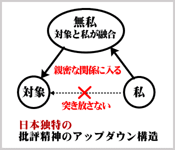
ところが、小林氏の「無私」は、対象を客観的に眺めるのではありません。それはショートカット的地平を超えてアップダウン構造の奥に到り、そこで対象と親しく混じり合うのです。
考えるということは、自分が身をもって相手と交わることです。・・・対象を突き放して観察することではない。・・・対象と私とが、ある親密な関係に入り込むということなんです。
（小林秀雄講演テープ『信ずることと考えること』）
好学心、勉学心が、交はりの深化に必須な、無私を得ようとする努力を指すのは言ふまでもなからう。
（小林秀雄『本居宣長』新潮社、六十頁）
西洋近代の常識によれば、批評というものは「我思う」という主観が確固として存在して初めて成り立つものです。主観が消えてしまっては、批評が成り立ちません。
ところが、日本の過去の思想家たちは、「無私」に徹することを「考える」ことの根底に置いて自らの思想を構築して来ました。その「無私」の精神は、「近代」批評の確立者といわれる小林秀雄氏にまで連綿として受け継がれているのです。
これは丁度、フランスの自然主義文学に接した日本の文学者たちが、ショートカット的自然主義をアップダウン的に改変したのと同様です。
日本の自然主義文学者たちは、「自分の内面も亦一自然である」（田山花袋）と見たり、「無念無想」となって「事象に物我の合体を見る」（島村抱月）ことが自然主義であると考えて、「日本独特の」自然主義文学を作り出したのでした。
どうやら、日本の「近代」批評というものも、「日本独特の」近代批評と称するべきであるようです。「近代」批評という言葉から、それが西洋近代の科学的合理精神（ショートカット思考）に基づく批評であると受け取ると、大きな勘違いをしてしまいます。日本の伝統的思考方式は、「近代」という時代の波によって変化してしまうような浅々しいものではなかったのです。
それが、西洋近代の文物を受け容れながらも、変化することなく受け継がれているのは、日本語の構造が変化しないからです。日本語のアップダウン構造の融合一体化のハタラキは、かくまで強く日本人の意識に流れ続けているのです。
「考える」の古形は「考ふ」であり、古くは「かむかふ」と清音でありました。
本居宣長は、「かむがへ（かんがへ）」とは「かむかへ」の音便であり、「か」はよく解らないが、「むかへ」は、「かれとこれとを、比校へて思ひめぐらす」ことであると解しています（『玉勝間』八の巻）。これを受けて小林氏は、「か」を発語として軽く見て置き、「むかふ」は古意によれば「身交ふ」であることから、次のように解釈しています。
古人について考へるといふのも、その本義はといふ事になれば、古人と出来るだけ親身になって、交はり、その交はりを思ひ明らめるといふ事にならう
（小林秀雄『本居宣長』四百九頁）
私は、宣長がよく解らないとして放置し、小林氏が発語として軽く見て置いたという「か」の一語に重大な意味を見ています。即ち、「かんがふ」の「か」とは「神」のことであると考えています。つまり、「かんがふ」とは「神向ふ」ことであり「神迎ふ」ことであり「神交ふ」ことであると考えています。
自他が融合して一体化するのは、ショートカット的地平においては不可能であり、アップダウン構造の奥において初めて可能となるのです。アップダウン構造の奥に鎮座まします神は、すべてのすべてであり、我に神を迎えて神と一体化するから、神の一部たる対象とも一体化できるのです。
古今東西、神我一体を経験した聖者方は、万物との一体観を得て、分別対立の世界を超越しました。神と一体となることが、すべてと一体となることであるのです。
日本人のアップダウン的認識構造に見られる融合一体のハタラキを考慮するならば、「考える」とは「神に向かう」ことであり、「神を迎える」ことであり、「神と交わる」ことであると考えて間違いはなさそうです。
あなたが普段使っている日本語は、こんなにも素晴らしい言語であったのです。そのことをよくよく、神向えて、神迎えて、神交えていただきたいと切に願うものであります。
アップダウン構造の融合一体化のハタラキは、日本の歌論にも観て取れます。
三十一文字の敷島の道は日本精神の本道を示すものでありますので、そこに日本語の特性たるアップダウン構造が観て取れるのは当然のことであります。
「実相観入」とは、歌人・斎藤茂吉の造語です。
「観入」とは心眼を以て対象を正しく把握することであり、茂吉は『短歌に於ける写生の説』において「実相観入」について次のように述べています。これがまた、西洋流の写生や写実とは天地の開きがあるのです。
実相に観入して自然・自己一元の生を写す。これが短歌上の写生である。
（齋藤茂吉『短歌に於ける写生の説』）
ショートカット構造の言語を用いれば、現象を精密に写生することが可能です。精密に写生して精密に認識して、西洋語は近代科学を作り上げました。しかし、ショートカット的認識をどれほど精密化しても、いや精密化すればするほど、自然と自己とは益々掛け離れてゆくのみです。
「観入」は近代科学的意味での観察・写生ではありません。自他を峻別して認識することではありません。「観入」は自他を一体と観ます。
ところが、現象の世界では、自と他は一体ならざる在り方を示しています。
従って、「観入」は現象を超えた実相の世界へ踏み込まざるを得ません。実相の世界、すなわちアップダウン構造の奥に自他を統合する原理を観るのです。「ありがとう」のアップダウン構造の奥に神を観たように、自他が共に生かされてあることを、自他が実相において一体化していることを観て取るのです。
実相観入は、歌論の範疇を超えて、日本語全体の特性を示すと言えるでしょう。
日本語は、まことに実相観入の言語でありました。
日本語を龍に見立てて、その鱗を調べ、骨格を調べ、ハタラキを調べたところ、そのすべてに神主アップダウン構造が観て取れました。
読者の皆さんには、日本語の深層に神があることが納得出来たでしょうか。それとも、まだまだ論証が必要でしょうか。もっともっと、日本語を探って見なければ納得出来ませんでしょうか。
龍の顎の下には、身体中の鱗とは逆方向に生えている「逆鱗」があり、その逆鱗に触れると、それまでおとなしかった龍も激怒して暴れ回ると言われています。
「神が存在する」ということを飽くまでも認めず、論ここに至ってもまだ更なる論証を要求するのであれば、日本語という龍の逆鱗に触れることを覚悟して戴かねばなりません。
日本語という龍は、言挙げせぬ国の伝統によって、これまで静かに眠っていられたのですが、こんなにあれこれと身体をいじられてはたまりません。おまけに不遠慮極まって、あろうことか逆鱗にまで触れられては、もう我慢がなりません。
激怒した龍は、雲を呼び、風を起こし、言霊高鳴りに高鳴らせて雷鳴となし、天地も裂けよとばかりに稲妻を走らせることでありましょう。
もうこうなったら、誰にも止められません。少々乱暴と見えても、これまでの常識などは、もう木っ端微塵に粉砕して、暴れるだけ暴れて戴くほかありません。
何しろ天地開闢以来初めて日本語がその真相を明らかにするのですから、勢い余って少々はめを外すことがあったとしても仕方がありませんでしょう。
日本語という龍の逆鱗に触れるのであれば、旧来の常識から抜け出せない未熟な精神は木っ 端微塵に打ち砕かれても仕方が無いと覚悟して戴かねばなりません。案外、神鳴り（lightning）に打たれた方が、人間は悟り（enlightenment）に近づけるのかも知れません。
第二章五節の「動詞構文総括表」において、人間の行為と自然現象とを対極的に配置して、日本語のすべての動詞をヒト憑りの度合い、あるいは神（自然）憑りりの度合いに応じて、四種類の構文に分類しました。そして、そのすべてが根本的には、神主構文であると結論付けました。ここでは、さらに論証を補足して、その結論の正当なることを深く理解したいと思います。
・Dragons' remains formed petroleum.
・龍の残骸が石油を作った。（疑似日本語）
・龍の残骸から石油が作られた。
右の日本文において、学校文法における主語は「石油」ですが、「作られた」という動詞の動作主、つまり「作る」というハタラキの実行者は、創造主たる神でした。日本人はそのことを深層意識でよく了解しているので、「残骸が石油を作った」とは言わずに、「残骸から（創造
主によって）石油が作られた」と言うのです。この文は、動詞構文総括表の神主構文に当たります。これはまた次のように言い換えることも出来ます。
龍の残骸から石油が作られた。
↓
龍の残骸から石油が出来た。
「石油が出来た」のは、自然現象であると言えます。石油は、自然にヒトリデニ出来たのです。
日本語アップダウン意識においては、「石油が作られた」も「石油が出来た」も、ほとんど同一の現象を表現しているように受け止められます。
しかし、次のように「創造主によって」や「自然に」を付け加えて、表層意識でしっかりと見つめ直すと、二つの文は大きな違いがあると分かります。
・龍の残骸から（創造主によって）石油が作られた。（神のハタラキ）
・龍の残骸から（自然に）石油が出来た。 （自然現象）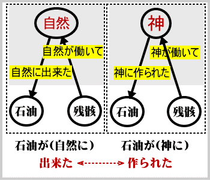
一つの現象を、神のハタラキと観るか、単なる自然現象と観るかは、本来ならば天地の開きがあると言うべきでしょう。その天地の開きがあるはずの二つを、日本人はあいまいに同一視しているのです。それは、「神のハタラキ」も「自然現象」もアップダウン構造の奥に隠してしまうから可能となるのです。
仮に「私は神の存在を認めていない」と言明する日本人翻訳者がいるとして、彼が、"Dragon's remains formed petroleum." という英文に接すると、「龍の残骸から石油が作られた」と訳して平然としているのです。「作られた」と言いながら、「誰に」作られたのかはアップダウン構造の奥にしまい込んで明確にはしないのです。これは能動態から受動態への転換テクニックだと称して平然としているのです。日本語アップダウン構造のハタラキは、まことに絶大なるものであります。
以上から、「自然」なるものの主体が「創造主」であることは、日本語のアップダウン意識においてはやはり否定出来ないと言えるでしょう。
「ヒトリデニ」あるいは「自然に」を挿入して不自然にならない構文を疑神主構文と名付け、それが根本的には神主構文であることも充分納得出来ます。
「出来る」という動詞は、実に不思議な言葉です。「出来る」は、自然現象にも人間の行為にも用いることが出来るのです。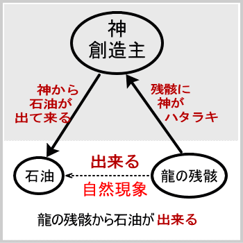
・龍の残骸から石油が出来る。 （自然現象）
・私たちは地球を救うことが出来る。（人間行為）
では、「石油が出来る」という表現と「地球を救うことが出来る」という表現の間で共通する意味のエッセンスはなんでしょうか。
「出来る」は「出て来る」に通じます。「石油が出来る」とは「石油が出て来る」のです。では、どこから「出て来る」のでしょうか。
「龍の残骸から」というのは、一応の表面意識での答えです。その奥の創造主によって石油が作られるのですから、根本的には創造主から石油が出て来る訳です。「龍の残骸」はそのハタラキの通り路の一点に過ぎません。
創造主のハタラキが根本にあり、そのハタラキが「龍の残骸」にハタラキかけて、石油となって「出て来る」のです。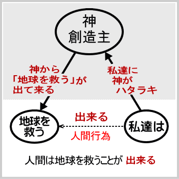
同様に、「私たちは地球を救うことが出来る」における「私たち」も通り路の一点に過ぎません。「私たち」自身が「出て来る」訳ではありません。「私たち」を通して、「地球を救うこと」が「出て来る」のです。「私たち」に神がハタラキかけて、神から「地球を救うこと」が「出て来る」のです。自然現象も人間行為も、根本的には神のハタラキを受けて成り立つのです。
そもそも、肉体だけが人間であると勘違いして、肉体を働かせている霊性を認めず、肉体人間の力だけで地球を救うことなど出来る訳がありません。
現在の地球世界は、有史以来の大変動を経験しております。少し真剣に物事を考える人達には、地球環境の問題ひとつ取っても、肉体人間の知恵ではどうにも解決がつかないことが分かっているのです。現状は分かってはいるのですが、どうすれば良いのかが分かっていないのです。
肉体人間観に立って、ああでもない、こうでもないと議論したところで、これまでの経験が役に立たない以上、良い知恵が出て来る訳はありません。
誤った人間観からは、「出て来る」ものも「出て来ない」のです。
しかし、人間の本体は霊なるものであることを認め、アップダウン構造の奥にある深層意識（神意識）の叡智をこの世にもたらすことが出来れば、地球を救うことだって必ず出来ます。
本源世界のハタラキが「私たち」にハタラキかけて、「地球を救うこと」が「出て来る」のです。
ハタラキを認めるから、ハタラキが「出て来る」のです。認めなければ出て来ません。
「努力すれば何でも出来る」と言う場合も、「努力する」という人間行為に対して神の力がハタラキかけるから「何でも出来る」訳です。自分は肉体人間であると勘違いして、本源世界のハタラキを自分の意識で遮断してしまって、努力したところで、大したことはできません。
人間は本来神の子である、神の力のハタラク場である、とはっきりと認識して、自分を通して神の力をハタラキ出すよう「努力すれば何でも出来る」のであります。
日本語のアップダウン意識においては、「石油が出来る」（form）という自然現象も、「地球を救うことが出来る」（can）という人間行為の可能性も、「出来事」（happening) も、すべて神から「出て来る」のです。根源の力は、すべて神から「出て来る」のです。
以上の点を考慮すれば、第二章で掲げた動詞構文総括表の四つの構文の内、擬神主構文、擬人主構文、人主構文の名称は、表面的な仮の名称であって、その深層においてはやはり、すべてが神主構文に統一されることが納得出来ます。
日本語の動詞構文の深層が、すべて神主構文であることを、左表にまとめます。
|
出発点 |
通過点 |
出て来る物事 |
現象・営為 |
構文 |
深層構文 |
|
すべては神のハタラキ 神 |
龍の残骸から |
石油が出来る |
自然現象 |
擬神主 |
深層はすべて 神主構文 |
|
どこかで |
ある事件が起きる |
出来事 |
|||
|
サルが |
酒を作る |
生物行為 |
擬人主 |
||
|
私たちは |
地球を救うことが出来る |
人間行為 |
人主 |
||
|
努力すれば |
何でも出来る |
神のハタラキ → 残骸 → 石油が出来る
神のハタラキ → どこか → 事件が起きる
神のハタラキ → 人間 → 何でも出来る
以上の論述からも分かるように、「主語」という文法概念は、日本語においては極めてあいまいです。「私たちは地球を救うことが出来る」において「私たちは」が主語であると一応は考えられます。しかし、深層を考慮すると、「出来る」というハタラキの動作主はアップダウン構造の奥にある神であります。つまり、主語と動作主とが食い違ってくるのです。
英語の場合は、主語と動作主とは常に一致しますので、主語という概念を用いて文法を構築することが出来ます。日本の学校文法は、明治以来、西洋語のショートカット構造の文法理論をモデルにして作られました。従って、学校文法では、主語の必要を説いています。
ところが、ショートカット言語の文法理論をアップダウン言語に当てはめることには、どうしても乗り越えられない無理がありますので、学問的な文法学の世界では、日本語には主語は無いという論がかなり勢力をふるうようになっています。
とはいうものの、決定的、標準的日本文法と言えるものはまだ構築されていません。
ある文法学説によると、日本語には主語が無く、格助詞「ハ」は主語ではなく主題を表すと説明しています。
しかし、主語を主題と言い換えただけの生ぬるい処置では、日本語に主語は無いというせっかくの発見が充分に生かされません。生半可な態度では、日本文法は構築出来ないのです。
日本語の表層をショートカット的に考察するのみでは、未来永劫、日本文法は構築出来ません。
アップダウン構造をしっかりと見極めて、現象の奥に本源世界があることを前提にしなければ、本物の日本文法は決して構築出来ません。
神が存在するということは、これまでは宗教的真理として学問とは無関係の世界に捨て置かれて来ました。その真理を学問の世界に持ち込まない限り、日本語学が成り立たないのです。
日本語に主語は無いという学説は、ショートカット的考察の限界でありました。
さらに考察を日本語のアップダウン構造にまで深めるならば、日本語には主語があると言わざるを得ません。それは、一つ一つの文の主語というちっぽけなものではなく、日本語の総体を統括する、究極原理としての「主語」です。
そういう意味での日本語の「主語」とは、日本文法至極の一点、すなわち神であります。
つまり、西洋ショートカット文法の「主語」概念に留まる限り、日本語に「主語」は無いということにもなるのですが、「主語」の概念を大きく広げて、日本語アップダウン構造を踏まえた「主語」を考えるならば、日本語に「主語」は厳然としてあるということになります。
主語の概念と切っても切れないのが、助詞「ハ」です。「ハ」は、主語や主題を示すのではなく、本源世界の神のハタラキの展開される場を表します。そのことを「言霊」の理から説明しましょう。「言霊」と聞いて直ちに拒絶反応を起こすような貧弱な精神では、日本語の真相には迫れません。
日本語は、一音一音が意味をもっており、活きてハタラキます。
「ハ」の音は、字形にも表れているように、広がり行くハタラキを表します。
冬の間閉じこもっていた生命のハタラキが、時が至るとハで展開してルで循環運行してゆくのがハル（春）です。
植物の生命のハタラキが展開してゆくその先にあるのがハ（葉）であり、ハの先に色鮮やかにナ（成）り出しナ（鳴）り出すのがハナ（花）です。
動物の顔の先端にもハナ（鼻）があります。
ハハ（母）というのは、そこから新しい生命が生まれて展開してゆくところと理解出来ます。
このように、「ハ」はそこにハタラキが展開されて行く場を表します。
本書においては、これまで「ハタラキ」を意識的にカタカナで書いて来ました。それは「ハタラキ」が本源世界からこの世に現れるという意味を持たせてのことでした。「ハタラキ」の四字を解説すると次のようになります。
「ハ」は、本源世界のエネルギーの展開。
「タ」は、突き抜ける力を表します。突き抜けて上へ昇るとタカ（高）になり、突き抜けて伸びる力の最も著しい植物をタケ（竹）と言い、その力を発揮するのがタケ（武）でありタケ（猛）であります。
「ラ」は、循環運行を表します。ハの展開をラで受けてどこまでも循環運行してゆくと、ハラ（原）になります。ハハ（母）のハラ（腹）はそこから子孫が広がってゆくところですね。ラに限らず、ラ行の音は大体に物事が循環運行してゆく様相を表します。ルンルン気分などは、物事が順調に運んでウキウキしている気分を良く表しています。物が転がると、アララと声を出すのは、ラの言霊の表出であり、物と一緒になって転がっていく心を表します。
「キ」は、キ（気）というエネルギー。
つまり、ハタラキとは、本源世界のエネルギーが展開し、現象界に至るまで何段階もの階層を突き抜けて、勢力を弱めることなく循環運行し、ついに現象界へ出て来たそのエネルギーを表します。それを考えれば、神即ち宇宙エネルギー即ちハタラキと見なすことも出来るでしょう。
以上の説明と日本語のアップダウン構造とを考え合わせれば、ハが本源世界のハタラキの場であることが納得していただけるでしょう。場（バ）自体が、ハの言霊によって成り立っています。
・象は鼻が長い。 (自然現象)
・日本語は主語がない。(自然現象)
・春は花が咲く。 (自然現象)
・ぼくはウナギだ。 (人間の選択)
右の例文において、「象は」、「日本語は」、「春は」などは、広義、狭義の自然現象が展開される場を表し、「ぼくは」という場では、人間の選択行為が現れます。自然現象も人間行為も、根本的にはどちらも本源世界の神のハタラキの現れであることは、前節で述べました。
ハは主語を示すのではありません。主題を示すのでもありません。「象は鼻が長い」において、主題を決定するのは、意識の持ち方です。「象は」に意識の重点を置けば、「象は」が主題となり、「鼻が」に意識の重点を置けば、「鼻が」が主題になります。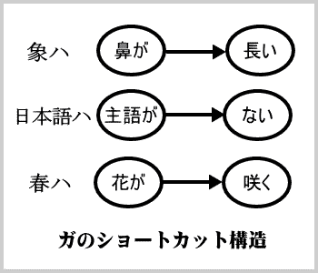
ハを用いた文章の構造は、「こうするとそうなる」という因果表現の構造に似ています。「こうするとそうなる」という文も「こうすれバそうなる」と言い換えられますので、アップダウンの場の設定である点では共通していると考えられます。
つまり、ハはアップダウン構造を取ります。
一方、ガはショートカット構造を取ると考えると、ハとガの違いが鮮明に理解出来ます。
ハはハナス（離す）のですが、ガはガッチリと掴みます。
ハのアップダウン的な場は比較的ゆるやかに結び付くのですが、ガはショートカット的に強く結合する力を表します。
従って、「象ハ鼻ガ長い」において、「長い」をガッチリと掴むのは「鼻ガ」の方であります。
「日本語は主語が無い」において「無い」をガッチリと掴むのは「主語が」であり、「春は花が咲く」において「咲く」をガッチリと掴むのは「花が」であります。
動詞構文総括表によって、動詞を述語とする構文を四種類に分類しましたが、その四構文はすべて神主構文に統合されることを明らかにしました。
動詞以外の形容詞や形容動詞などを述語とする構文についても、ハが主語を表すのではなく、本源世界のハタラキの通り路の一点を表すということから、神主構造がその深層にあるということになります。
結局、深層においては、日本文はすべて神主構文であると結論付けられます。
つまり、日本語の主語はただ一つ、神あるのみです。
ただしこの主語は、一つ一つの文の主語というちっぽけなものではなく、日本語全体を統括する、究極原理としての主語であります。この主語がアップダウン構造の奥に隠れているが故に、「日本語には主語が無い」という文法学説が現れる訳です。
たとえ表面に現れていなくても、主語すなわち神は、日本語に光を放射しながら日本語全体を統御しておられるのです。日本語に充ち満ちた神の光が、「ありがとう」や「おかげさまで」などの片鱗として現れ、「残骸が作る」という表現を拒否して「（創造主によって）作られる」と言い換えさせ、日本語を用いて考え認識する日本人の意識をアップダウン構造としているのです。
日本語全体の正しい意味での主語は神であり、すべてはその展開であるとの感覚がハタラキますと、展開のさまを書き連ねるのに物主言語の主述関係は何の拘束力も持ち得ません。
『源氏物語』の文章は一つの文の中に幾つもの主語・述語の関係が混在していると言われるのも、平安の王朝人の日本語感覚が、現代とは比較にならない位に神主感覚に満ちていたからでしょう。
日本神道の祝詞も、物主言語の文法で解釈すると、主述関係が不明瞭として、悪文のそしりを受けかねません。祝詞は神主感覚で奉唱するものと心得るべきでしょう。
古来、日本神道に伝えられた大祓祝詞の中には、次の章句があります。
磐根樹根立草の片葉をも語止めて
つまり、岩石や草木も自分勝手なおしゃべりは止めて、神様のことばを聞きましょう、というのが日本語です。英語は、岩石や草木が自己主張をします。
英語は、「龍の残骸が石油を作った」（Dragons' remains formed petroleum.）と表現して違和感を感じないのです。
このように、日本語は神主アップダウン構造の言語です。日本人にとって、神が存在するということは、信仰以前の日本語感覚であると言えます。
日本語に時制はない、と言ったら驚かれるでしょうか。しかし、本当に日本語には時制（Tense）はありません。
欧米人の書いた日本文法の書には、「日本語には真の時制は現在と過去の二つしか無い」と指摘があり、未来形は現在形を借用すると説明してあります。（E.F.Bleiler, Basic Japanese Grammar, TUTTLE Co., 三十五頁）
・私は東京へ行きました。（過去形）→ I went to Tokyo.
・私は東京へ行きます。 （現在形） → I go to Tokyo.
（未来形）→ I shall go to Tokyo.
ところが、過去、現在、未来と画然と区別された時制を持つ英語文法によって日本語感覚を麻痺させられた日本人には荒唐無稽の説と取られるかも知れませんが、未来形は勿論、過去形なるものも日本語にはありません。従って、過去・現在・未来の時間系列における現在形なるものも、日本語にはありません。日本語には動詞の時制がないのです。
日本語に時制がないということを、過去を表すと一般に考えられている「タ」を例にとって考えてみましょう。まず、既存文法がタをどのように解説しているのかを調べて見ましょう。
広辞苑は、タの意味を下記の五つに分類して解説しています。（例文の一部を変更した。）
（１）動作・存在の確認をあらわす。「あった」
（２）動作の完了をあらわす。「本を書いたら差し上げます」
（３）単純な過去をあらわす。「昨日は雪が降った」
（４）動作は既に済んで、その結果が存続していることをあらわす。「絵に書いた魚」
（５）軽い命令をあらわす。「ちょっと待った」
（以上、広辞苑第三版より）
成程うまく説明されていますが、これでは単に用例を五つに分類して、その各々にばらばらの説明を付けたに過ぎません。（１）から（５）までのすべての用例を貫くタの統一的意味が見当たりません。
タの統一的意味とは何でしょうか。
ハタラキの言霊を解説した際に、タは突き抜ける力であると解説しました。神主アップダウン構造の中で突き抜ける力がハタラクのですから、タは本源世界から突き抜けて現象世界へ発現したことを表すことになります。
タは、過去を表すのではなく、発現を表します。自己の認知する範囲内での現象世界にものごとが発現したことを表すのが、タのハタラキです。
右記（１）の「あった」は、探していたものが自分の目の前に発現したことを表します。バス停でバスを待っていて、遠くにバスが見えると、「あっ、バスが来た」と言います。英語では、The bus is coming.（現在進行形）これは過去ではありません。
発現の時点が現在であるとは限りません。発現の時点が未来の一点であれば、
（２）「本を書いたら差し上げます」
となり、発現の時点が過去の一点であれば、
（３）「昨日は雪が降った」
となります。
（４）「絵に書いた魚」は、絵に書くという動作が発現したところの魚を意味します。これも発現の時点は、過去・現在・未来を問いません。過去の発現であれば、「昨日絵に書いた魚」となり、現在の発現であれば「たった今絵に書いた魚」となり、未来の発現であれば「明日絵に書いた魚を上げましょう」となります。この場合、書くという動作はまだ済んでいなくても差し支えありません。それは未来の発現です。
（５）「ちょっと待った」は、タの言霊の力によって発現を促す言葉使いです。「待つ」ということが発現せよという心で「待った！」と言うのです。人込みをかき分けて進む際に「どいた、どいた」と声をかけるのも、「どく」ということを発現させようとするタの言霊の運用です。
このように、タは発現を表すと理解すれば、広辞苑のバラバラの説明（１）から（５）までのすべての用例を統一的に説明することが出来ます。
さらに、英和翻訳の際に生じる「時制の不一致」という現象も説明がつきます。
例えば、次の用例においては、英語はすべて現在形ですが、日本語の訳には「た」がつきます。これは過去形ではないのです。
・Here we are in Osaka. さあ、大阪に着きました。
・Now, you are quite well again. はい、もう病気は治りました。
・I'm home. ただ今、帰りました。
中学の英語教育において、物主言語の文法を神主言語に当てはめて不自然な日本語を氾濫させると、若者の日本語神主感覚を麻痺させることに成りかねません。前記の英文も英語の現在形にとらわれて、「さあ、私たちは大阪にいます」「あなたは再びとても元気です」「私は家にいます」などと訳すと、日本語の神気（スピリッツ）が消え失せてしまいます。これほど極端ではなくても似たような訳文が随分幅を利かせているようです。
最近、諸外国で日本語を学ぶ人達が増えていますが、その人達のためにも、神主アップダウン構造に基づく日本文法を構築し、日本語の特性を広く認識していただく必要があるでしょう。
次に、現在時制なる概念がそのまま日本語の世界で認められるかどうか、検討して見ましょう。
・私は東京へ行きます。
（現在形）→ I go to Tokyo.
（未来形）→ I shall go to Tokyo.
英語の go は現在形で、shall go は未来形であることは明らかです。
しかし、日本語「行きます（行く）」だけでは、それが現在のことなのか未来のことなのか区別がつきません。
「今行く」は現在形であり、「明日行く」は未来形であると、一応は考えられます。しかし、「今行く」の「今」の時点で「行く」という動作が現に在る訳ではありません。今はまだ未発現です。
「行く」という動作がまだ発現していないという点では、「今行く」も「明日行く」も同じであって違いはありません。「今行く、今行く」と言いながら、いつまでも行かないでいることも出来るわけです。
どうも現在形という概念は、「行く」や「作る」などの動作を表す動詞には馴染まないようです。
「行く」が「現在形」であると決めつけると、どうにも説明出来ない言語現象が起こります。日本語の日記などでは、過去の出来事を「現在形？」で表すことがあります。たとえば、
・昨日、東京へ行く （過去の出来事）
・昨日、東京にて旧友に会う（過去の出来事）
右のような表現は、日本語として完璧に成り立ちます。
では、「昨日、東京へ行く」の「行く」は、過去を表す「現在形」であるとでも説明しなければならないのでしょうか。
欧米の文法学者が、「日本語には真の時制は現在と過去の二つしか無い」と指摘して、未来形は現在形を借用すると説明していることは先に述べました。ついでに、過去形も現在形を借用する、とでも説明しなければならないのでしょうか。
それでは、真の時制は現在の一つしかなく未来形も過去形も現在形を借用するという奇妙な説明となり、そもそも過去・現在・未来の区別が意味を成さなくなります。
その通りです。
日本語動詞に対して、過去・現在・未来の区別を当てはめるのは意味が無いのです。日本語動詞には、そもそも時制が無いのです。
「行く」は過去にも、現在にも、未来にも用いることが出来ます。
・昨日、東京へ行く（過去）
・今、東京へ行く （現在）
・明日、東京へ行く（未来）
また、これまで過去を表すと説明されていた「た」が、実は「過去」ではなく「発現」を表すものであることは先に述べました。
したがって「行った」という形も過去・現在・未来のすべての時に用いることが出来ます。
・昨日、東京へ行った （過去の発現）
・たった今、東京へ行った （現在の発現）
・明日、東京へ行った時に話す（未来の発現）
この様に、「行く」という動詞自体には、過去・現在・未来の意味は含まれないのです。「行った」が過去形でないのと同様に、「行く」は「現在形」ではありません。
「ある」や「いる」「痛む」などの状態を表す動詞は、そのままでその状態が現に在ることを示しますので、現在形と言い得るかも知れません。
しかし、その場合でも、「あった」「いた」「痛んだ」などは、「発現」の概念で理解出来ます。
状態を表す動詞についてはもう少し研究してみる必要があります。
少なくとも、過去・現在・未来の時制という概念では、動詞表現を整合的に説明することは不可能であると考えられます。むしろ、発現したかどうかという点を基準にして整理して見た方が、より広く整合的に説明出来るように思われます。
この点は、今後の日本文法の研究課題と申し上げておきますが、日本語動詞に欧米文法の時制という概念を当てはめることには、乗り越えられない無理があるということは確言できます。
日本語は、英語に比べて、動詞を多く用います。英語は名詞を活用します。
日頃、翻訳をしていますと、枚挙に暇がない位に、動詞多用の日本語と名詞多用の英語の違いに出会います。実例を次に示します。
(１) High temperatures cause a breakdown.
×高温が故障を引き起こす（直訳）
○温度が高く「なる」と故障が起こる（落ち着いた日本語）
(２) Watt's original engine of 1765
×ワットの1765年の最初のエンジン（直訳）
○ワットが1765年に最初に「作った」エンジン（落ち着いた日本語）
（１）の日本語は、動詞を用いて「温度が高くなると」と言いますが、英語では名詞句 High temperatures （高温）だけで済んでしまいます。
（２）「ワットのエンジン」の例は、英語では名詞の羅列ですが、日本語では英語には無い動詞「作った」を補って初めて落ち着きます。
英語は名詞構文をよく使う言語です。日本語は動詞を多用する言語です。
動詞は動きを表しますので、動詞を多用するということは、「流れ」を重視するということになります。この「流れ」は、動詞に負うところが最も大きいのですが、テニオハがそれに拍車をかけています。実際、日本語は「流れの言語」と言えるでしょう。
一方、英語は名詞というレンガを一つ一つ積み重ねてゆくようなところがあり、「レンガの言語」と言うことが出来ます。
英語を日本語に翻訳する場合に、レンガの積み重ねだけでは日本語としてはどうしても物足りなく感じる場合があります。レンガとレンガの隙間を埋めて流れを作るような言葉を補いたくなるのです。実例は複雑になるので省きますが、単に名詞と名詞の間に限らず、文と文の間、論理と論理の間にも「流れ」を補いたくなることがあるのです。
日本語が「流れの言語」であるということは、アップダウン構造と関係があります。
ハタラキが本源世界から現象世界へ流れてくるように、ハがそのハタラキの展開の場であるように、日本語には「流れ」の力がみなぎっています。
その「流れ」は、過去・現在・未来という時間軸に沿っての流れではなく、アップダウン構造の奥の本源世界からこの世に流れてくるのです。従って、日本語動詞にとっては、時制は重要な問題ではなく、「流れ」の発現が根本的な重要事になるのです。
日本語動詞に時制が無いということの意味をもう少し深く考えてみましょう。
過去・現在・未来という時の流れは確かに存在します。しかし、ある言語が過去・現在・未来の時制を持つかどうかということは、それとは別問題です。動詞が過去・現在・未来を持たない言語があってもおかしくはありません。
過去・現在・未来が表現出来ないとしたら、言語としては未熟であって、不便この上ないことでしょう。しかし、日本語は立派に時を表現します。ただし、動詞の時制によって表現するのではなく、「昨日、今日、明日」などの時を表す名詞や「既に」などの副詞によって表現します。
アメリカ・インディアンの言語を研究したＢ・Ｌ・ウォーフによれば、ホピ族の動詞にも時制がなく、時制以外の手段で時を表現するそうです。おもしろいことに、ホピ族は現実を「出来事（events）というよりは生起（eventing）として」分析してきたように見える、と ウォーフは指摘しています（田島節雄「文化に内在する哲学」、『岩波講座・哲学』十三所収）。
ホピ族は極めて霊性の優れた部族であると聞いております。ホピ族が現実を「生起（eventing)」と受け取るとは、彼らの言語が時制を持たないことも併せて考えると、日本語と同様に現実を本源世界からの「流れ」と受け取っているのかも知れません。
このように、動詞に時制が無いということは、決して荒唐無稽なことではありません。動詞の時制に頼らなくとも、過去・現在・未来が表現できるのです。
本源世界のハタラキに連なっている日本語動詞にとっては、ハタラキそのものが重要であって、時制は問題ではありません。何故ならば、神の創造のハタラキに、過去・現在・未来の別はないからです。
『古事記』の冒頭は「天地初発の時」から始まっています。
では、「天地初発の時」とは一体いつのことでしょうか。天地創造はいつ行われたのでしょうか。
遠い遠い過去の一点で神の創造がなされ、それ以後は神様は眠っていても、機械仕掛けが働いて宇宙の運行が行われるのではありません。神は一瞬一瞬にハタラキます。
赤ちゃんが一旦生まれたら、後は自動的に生き続けるのではありません。一瞬一瞬生命のハタラキが流れて来て、一瞬一瞬を生き続けることが出来るのです。生命のハタラキが止まれば、人はたちまち死んでしまいます。一瞬といえども、創造の神力に拠らずして存在することは不可能です。一瞬一瞬に創造の神力が爆発して、「永遠の今」を作り続けているのです。
天地創造は今です。「天地初発の時」は、現在ただ今のことです。
その今とは、過去・現在・未来の時間系列における今ではなく、過去・現在・未来をすべて引っくるめて含む「永遠の今」であります。そのことは、洋の東西を問わず、宗教的悟得に達した聖者方が等しく教えておられるところです。
この「永遠の今」を日本神道では「中今」と表現します。中今は、今の一点を過去・現在・未来という時間軸の今とみるのではありません。アップダウン構造の奥から天地創造の神力が流れて来る今の一点を、最高の時として讃えるのが、中今です。瞬々刻々、時間が流れていく。その一瞬、一瞬が創造のハタラキによってもたらされているということを礼拝申し上げる言葉が、中今です。中今は、永遠に中今なのです。
過去も現在も未来もすべてを含む中今（永遠の今）を生ききることこそ霊止の生き方であると徹底覚知すれば、「言は神なりき（昔、神であった）」という聖書の一節も、現在只今のこととして受け取れることでしょう。
・言は神なりき（The Word was God.)
↓
・言は神鳴り来（The Word is God which is acting.）
神鳴り来たる日本語に過去・現在・未来の時制が無いということは、このように深い深い真理を表しているのです。
日本語は永遠の今。
それは何と美しい真実でしょうか。何と有り難い恩寵でしょうか。
人間がこれまでの歴史の中でひたすら磨いて来たもの、それは理性です。
現代人の理性を極限までスミキラせて、神鳴り来たる日本語の奥を見つめてください。
他を見ることは一切不要。日本語の奥を見つめることは、自らの意識を見つめることです。
自らの意識を根源まで溯れば、ちっぽけな肉体と思っていたこの自分が、天地初発の時から神鳴り来たる言を与えられて地球界を主宰する霊止であり、天地初発の時を今の一瞬に重ね合わせて天地創造に参画する、創造神力の爆発体であると覚知されます。
人間は、創造神力の爆発体でありました。
潮の流れには、上潮、中潮、底潮の三層があって、それぞれ速度と方向が異なります。
暖流と寒流とがぶつかる日本近海では、上潮からわずか数十メートル下の中潮や底潮が、表面の上潮とは逆方向に流れているということもあるのです。
そのような場合に、表面の上潮のみを見て網を投げ入れると、深層の逆潮流の巨大な力によってさすがの頑丈な網もねじ切られてしまうことすらあるのです。
人間の意識も、潮流と同様に、三層を成しているようです。
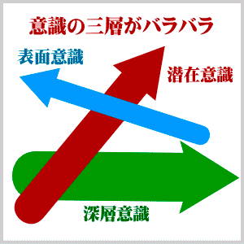 今日では、「表面意識」の奥に「潜在意識」があり、それが知らず識らずのうちに人間の行動に大きな影響を及ぼしているということは、もはや常識になっています。
ところが、古今東西の聖者方の教説に照らして考察しますと、「潜在意識」のさらに奥に、それとは明確に区別される「深層意識」ともいうべき意識層がある、と考えざるを得ません。
表面意識、潜在意識、深層意識の三層は、必ずしも同じ方向に流れている訳ではありません。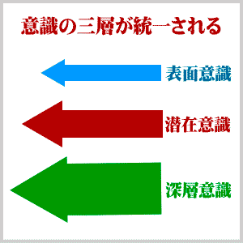
一般人の意識は、潮流と同じく、三層がそれぞれ別の方向に向かって流れていると考えられます。
「表面意識」が右へ行きたいと切実に願っていても、「潜在意識」が強力に左の方向に流れているならば、頑丈な網がねじ切られるように切実な願いもねじ曲げられてしまいます。
悟りを開いた聖者や神人の意識は、三層が常に同じ方向に統一されていると考えられます。より正確には、表面意識と潜在意識が浄化消滅して、深層意識一元になっていると云うべきでしょう。
一般人といえども、希には意識の三層が統一される瞬間があり、そのような瞬間には「火事場の馬鹿力」のように普段は考えられないような超人的な力が発揮されます。
それは、表面意識よりは潜在意識の方が、また潜在意識よりは深層意識の方が、はるかに巨大な力を持っており、三つの意識が統一された時には、人間の可能性が全面的に発揮されるからです。
本書ではこれまで「深層意識」という言葉を規定せずに用いて来ましたが、ここで、「深層意識」と「潜在意識」との違いについて明確に述べておきたいと思います。深層意識と潜在意識は、はっきりと区別しなければなりません。
その区別は、一言で言えば、相対と絶対の区別です。
潜在意識は、私達が経験したことをすべて記録しています。うれしいことや楽しいことはもちろん、悲しいことや恐ろしいことも忠実に記録しています。つまり、潜在意識は、善悪混交の意識領域です。善も悪も相対的です。従って、潜在意識は、相対の意識領域です。
例えば、幼児期に水に溺れて死にかかった経験をすると、それが潜在意識に記録されます。大人になって、たとえ表面意識ではその経験をすっかり忘れてしまったとしても、潜在意識の記録が消されない限り、訳もなく水を恐れます。「訳も無く」とは、表面意識の論理です。潜在意識にとっては、充分に訳があるのです。逆に「訳も無く」ある事物に強い愛着を感じるのは、潜在意識にその事物に関する良い想いが記録されているからです。
このように、潜在意識には、善い想いと悪い想いが入り混じって記録されており、その記録が表面に浮かび上がって、人間の好悪の感情を支配します。さらには、行動に影響を及ぼします。
一方、深層意識は、善悪や好悪の相対を超えた、絶対の意識領域です。
それは、言わば、光明の世界であり、その最深奥は生命の世界です。
例えば、心臓を動かし胃腸を整えるという生命のハタラキそのものは、善悪の判断を超えています。善人であれ、悪人であれ、肝臓も腎臓もその人を生かそうとしてハタラキます。深層意識の生命のハタラキは、相対界の善悪の差別を問題にしません。生命のハタラキは、絶対の意識領域のハタラキです。何人といえども、絶対の生命のハタラキを破ることは出来ません。ただ、生命のハタラキから外れた自分を破ることがあるだけです。
深層意識は、この絶対の意識領域であり、言わば生命意識、宗教的には神意識、最近流行の言葉では宇宙意識ともいうべき意識領域です。それは、大調和の光明世界の意識です。
深層意識の光明の一流れを表面に現すと、その分だけ現象世界が調和します。例えば、前述の水に対する恐怖感も、深層意識の光明によって消し去ることが出来ます。
深層意識を完全に表面に現すと、その人は悟りを得て完全調和の人となり、覚者、神人、仏陀といわれます。その意識の三層は、完全に統一されます。完全に統一されると云うよりは、むしろ潜在意識と表面意識が浄化消滅して、深層意識がそのまま潜在領域と表面領域にまで満たされると云うべきでしょう。
科学、芸術、宗教、その他さまざまな分野で天才と言われる人達は、深層意識から豊かなインスピレーションを得て、人類社会に貢献した人達でした。
人間の歴史は、深層意識の光明を、この現象世界に次第に強く広く現して行く努力精進の歴史であるということが出来ます。
その意味での人間の歴史は、今日、極点に達するかと思われるほどの速さで展開しています。
時代は、驚くほどのスピードで進化しています。
今日の常識が、十年後にはもはや常識たり得ず、逆に、今日の常識では受け容れられないことが、十年後には常識として定着しているということが確実に起こります。
いや、十年もかかりません。「十年一昔」とは、それこそ一昔前の表現です。
例えば、セラミックが電気を通さないとは、従来の常識でした。だからこそ、セラミックは、絶縁材料として用いられて来たし、今も用いられています。ところが、そのセラミックを使って「超電導」を起こすとは、過去の常識からすれば、驚天動地の発想と言わねばなりません。
筆者が学生時代に観た欧米のスパイ映画で、ペンシル型の通信装置で無線連絡するのに新鮮な驚きを感じたものですが、最近では小学生でも携帯を使っています。
インターネットの発達やスマートフォンの出現と、時代は、私たちが想像する以上に、猛スピードで進展、進化していると思われます。
それは、深層意識の光明が、歴史上かってない急速度で発現しているからです。
深層意識の急速発現に伴って、潜在意識も発現して来ます。
しかし、潜在意識の流れに乗るのは、甚だ危険です。潜在意識は、所詮、善悪混交の意識識領域ですので、魑魅魍魎が跋扈している世界と思ってよいでしょう。
私たちが目指すべきは、深層意識の流れに乗ることです。
個人の生き方の問題も、国家人類の未来に関する問題も、深層意識の流れを無視しては、平安をもたらす解決策は得られません。たとえ表面意識でどれほど良かれと思って方策を立てたとしても、その方策が深層意識の流れと逆流しているようでは、結局は破れてしまいます。深層の流れをよく測り、人間の行いが深層の逆流によって破られることのないようにしたいものです。
とは言うものの、深層の流れを計るのは、容易ではありません。何か良い方法はないものでしょうか。
海洋において、深層の潮流を計る潮流計は、既に発明されています。
日本のある舶用電子会社が世界初の潮流計を開発したのは、一九八〇年のことでした。この潮流計によって潮流の三層を正確につかむことが出来るようになり、逆潮流によって網を破られることはなくなりました。この潮流計は、音波を海中に放ってプランクトンからの反射波をキャッチすることにより潮流を計測するものです。
実はこのプランクトンの反射波は、それまでの計器にとってはノイズとして厄介視されていたものです。厄介視されていたノイズを丹念に精製することにより、潮流の計測に役立たせることが出来たのです。過去の常識に囚われず、何の役にも立たないノイズと思われていたプランクトンの反射波を逆に生かす方法は無いものかと考えたところから潮流計が開発され、漁業技術が大きく進歩したのです。
潮流計の発明にならって、深層意識を表面にもたらす方法は無いものかと思案しますと、直ちに思い当たるのが「アップダウン構造」です。
第一章で論証したように、「ありがとう」「すみません」「おかげさまで」などのアップダウン構造の深層には、神、宇宙法則、因果法則など人間の深層意識に関わるものが隠れていることが明らかになりました。
そのようなアップダウン構造をした言葉は、「避雷針」や「ありがとう」等の他にもまだまだありますが、その数はそれほど多くはありません。国語辞典をシラミ潰しに調べてアップダウン構造の言葉を拾っていったとしても、日本語の語彙全体に占めるその比率は極めて小さいことでしょう。ひょっとすると、統計処理の通則によれば無視出来る程度の数値かもしれません。つまり、語彙全体に対するアップダウン語の比率は無意味な「ノイズ」と見なされかねません。
しかし、その「ノイズ」のきらめきを丹念に観察すれば、極めて重大な意味が見い出せる筈です。
統計や比率の大小は、実は、問題ではありません。それはアップダウン構造が深層意識に関わることだからです。
言葉というものは表面意識のハタラキである筈です。意識するから言葉になるのであって、深層意識（無意識）は言葉にはならない筈です。
その深層意識（無意識）がアップダウン構造を通して日本語の中にキラリと光っているのですから、たとえ比率は小さくとも、日本語の特性として特筆大書してよいだろうと思われます。
さらに、第二章では、単語と単語を組み合わせる統語法の中にもアップダウン構造が観て取れることを論証しました。
またさらに、第三章では、自然観、神観、認識方法にまでアップダウン構造が観られることを詳しく論証しました。
そのことを考慮すれば、語彙の比率云々の議論は吹き飛んでしまいます。
日本語アップダウン構造は、深層意識の流れを計る「潮流計」になっているのです。
日本語自体の中に、深層意識の「潮流計」が組み込まれているのです。
アップダウン構造が深層意識の「潮流計」であるということは、アップダウン構造が「祈り」そのものであるということです。
祈りとは、自我欲望の実現を一念凝らして願うことではありません。
正しい意味の祈りとは、深層意識の光明を現象世界に現すことです。
真の宗教とは、正しい祈りに基づくものであり、深層意識と関わるものです。
祈りと念力は違います。念力は、宗教精神とは何の関係もありません。念力を使って自我欲望を達成することは、潜在意識に新たな業因を積むことになりかねません。
世界中の民族が宗教を持っているのは、深層意識の光明をこの世にもたらさんが為です。
日本人が無宗教のように云われるのは、ことさら宗教と云う形を取る必要がないからです。日本語の中に祈りが内蔵されているからです。
アップダウン構造は、表面意識と深層意識との間に掛け渡された「はしご」のようなハタラキをしています。
その「はしご」は、日本人によって自覚されないままに、日本の文化、宗教、芸術、科学、技術、その他さまざまな人間活動に影響を及ぼし、日本的なるものを形成して来ました。
日本語を使って生活している日本人の心性には、その「はしご」を伝って、知らず識らずのうちに深層意識の光明が流入して来ることになるのです。
つまり、日本語自体が祈りのハタラキを内臓していることになります。
したがって、ことさらに祈らずともアップダウン構造を通して日本人の意識には、祈り心が充ちていることになります。
このことこそが、今日の日本の繁栄の根本的要因であると筆者は観ています。
またそれは、日本文化の特質の根本的説明にも成ります。
「神鳴り」響く時代は、同時に、夜明けの時代、太陽の新時代であります。
これまでの人類は、月の光を頼りに、夜のうす闇の世界を生きて来ました。僅かな月の光が、さまざまな宗教となって、深層意識の光明を細々ともたらして人類を導いて来ました。
そのうす暗がりのなかで蠢めいていた魑魅魍魎は、そのままに見逃されておかれました。
今、太陽が高々と昇りますと、事情は一変します。
月明かりでは見えなかったものも、太陽の光に照らされて、はっきりと姿を現わします。暗闇に蟠踞していた魑魅魍魎が、行く手を失って断末魔の叫びを挙げます。その叫び苦しみの一端が現象世界に現れて、おどろおどろしい現象や、天変地異、戦争、飢餓、奇病、等々の不調和となると考えられます。
「神鳴り」の警告は警告として受け取るとして、直撃を食らって破滅するのだけは避けたいものです。
そのためには、先ずは日本語の深層を見つめてみることです。日本語のアップダウン構造の中には、「神鳴り」の直撃を避ける叡智が秘められています。たとえ間違いのない真理であっても、それが特定の宗教思想に基づくものであったとしたら、一般人としては、その真理を受け容れるのに少々抵抗があるかも知れません。しかし、自分たちが日常使っている日本語がそれ自体の中に含んでいる教えであれば、どなたであっても抵抗なく受け容れられることでしょう。
日本語の教えるところに耳を傾けて下さい。
深層意識の発現が、歴史上かってない急速度で進行しているのが現在の地球世界の状況です。
これまではあいまいなままに見過ごされていた事柄が、太陽の光に照らされてはっきりと意識されるようになって来ます。
つまり、アップダウン構造の奥をしっかりと見つめるようになります。見つめざるを得ない状況が次々と現れて来るのです。本書のような論考が現れること自体が、その一例と言えるでしょう。
日本人は、日本語というアップダウン構造の言語を使っているおかげで、深層意識が発現しやすく、そのため、あらゆるものごとを調和させる能力が優れているのです。
日本は、古来、神国と云われ、大和（大いなる調和）の国と云われて来ました。しかし、過去の日本が、その本質を全面発現していたとは云えません。神国日本がその本質を全面発現するのは、今これからなのです。
日本文法至極の一点が現れたということも、日本の本質を全面発現する時代の表れでしょう。
日本がその役割を存分に果たすためには、日本人はいつまでもあいまいな意識状態に止どまっていてはなりません。深層意識の全面発現を目指さねばなりません。
「おかげさまで」と言うのであれば、言葉の深層をしっかりと見つめて、神仏の存在をはっきりと認め、そのハタラキに自覚的に感謝すべきです。
「びっくり仰天」という言葉があります。ヨロヅのオドロキの感覚を以て、天を仰ぐのです。
天を仰いで、至極の一点に心を置くのです。そうすることによって、本源世界の叡智をより大きく強くこの世にもたらすのです。
ただし、自覚的に神に感謝するとはいえ、ショートカット的落とし穴に落ちるのは、避けたいものです。過去の宗教の多くが、神の存在をショートカット的に限定してしまい、宗教あるが故に紛争が引き起こされるという愚劣なる有様を呈して来ました。
日本人がその愚を繰り返してはなりません。神の存在を認めるとは云え、アップダウン構造のおおらかさは、どこまでも大事にしたいものです。
お月様が地球経綸の首座にお着きになる時代は終わりました。月の光に頼って暗闇の中を生きる時代は終ったのです。
代わって、お日様が地球経綸の首座にお着きになります。つまり、夜明けの時代です。
今、太陽の新時代、日の本つ国、日本が、アップダウン構造の奥を見つめ、大和の精神振り起こして地球を整えて行くという時代になったのです。
読者の皆さんは、現代人としての理性をお持ちです。
古代人の素朴さは真に貴ぶべきですが、現代人がこれまでの人類史の中で培って来た理性というものも、それに劣らず貴ぶべきです。
科学の歴史とは、旧来の常識と人間の理性との格闘の歴史でした。それは、これまで本当だと信じられていた常識よりも、理性によって本当だと信じられる事柄をこそ、真実として受け容れて行こうとする努力の積み重ねでした。
「動かざること大地の如し」という程に、大地の動かざることを信じていた人間が、地動説を受け容れるには、少なからぬ努力が必要でした。そのような努力の積み重ねによって、人間は、理性を培い判断力を磨きあげて今日に至りました。今では、生半可な迷信によって理性的な現代人を動かすことは出来ません。
しかし、生半可な迷信によっては動かされない現代人も、骨身に染み透った迷信からは、なかなか抜け出せないようです。骨身に染み透った迷信の最たるものが、科学万能信仰です。
科学的精神というものは、本当に貴いものですが、現在ただ今の科学知識を以て未来永劫の真理であるとするならば、それはもはや迷信に過ぎません。現在の幼稚な科学の水準に人類が永遠に留まる、と考えることほど人間理性を冒涜するものはありません。
人間の理性は、まだまだ成長を続けます。
人間の理性は、どこまで成長するのでしょうか。
無限成長あるのみです。
これまで、神の存在というものは理性的認識の範囲外におかれて来ました。神の存在を信ずるという信仰者も、ただ素朴にそれを信ずるという態度を以て善しとし、神の存在を理性的に究めるということはなされませんでした。
最も理性的である筈の科学者でさえ、いや理性的であるからこそ余計に、たとえ神の存在を信じていたとしても、それは科学的理性とは別の範疇に属するとして、蓋をかぶせて来たのがこれまでの在り方でした。
それは、まだ人間の理性が幼かったからに過ぎません。
しかし、これからは違います。
人間がこれまで、理性を培い判断力を磨いてきた正にその結果として、ようやくにして地球人類も理性によって神の存在を認めることが出来る時代になりました。神の存在を認めることが理性とは無関係であったのは、遥かなる過去の物語りとしてしまわねばなりません。
理性によって神の存在を認識する。
それが地球人の常識となって初めて、地球人も一人前になったと、大宇宙から認めていただけることでしょう。
無限成長を続けてゆく理性ではありますが、現在ただ今の節目には、格別の重みがあります。
即ち、地球人の理性が「成人式」を迎えようとしているのです。
それほどまでに成長した人間が、これからも逞しく成長し続けて行く、そのためには、理性を曇らせるものは何であれ、科学であれ信仰であれ、断固として排除して行かねばなりません。
その意味で、本書の内容も、旧来の常識によって判断するのではなく、最高度に研ぎ澄まされた現代人の理性でもって判断していただきたいと思います。
日本語の「片鱗」がアップダウン構造を示し、日本語の「骨格」がアップダウン構造を示し、日本語の「ハタラキ」がアップダウン構造を示すことが、理性によって納得出来ないのであれば、その理性とやらで論理的に本書を反駁していただかねばなりません。
またもし、日本語のアップダウン構造が、理性によって受け容れられるのであれば、そのことを意識の全領域に貫徹させて下さい。「神は存在する」ということを表面意識ではっきりと認めるのです。
もはや、あいまいさは美徳ではありません。日本的あいまいさが美徳であり得たのは、理性が未だ幼かった過去の遺風でしかありません。
理性と直観とを区別して捉えるのは、近代社会の常識であります。
理性とは一般に概念を用いて論理的に一歩一歩思考を進めてゆく能力を意味し、直観はそのような論理的思考プロセスを経ずに一挙にものごとを認識する能力を意味します。このように、理性と直観とは、一般的に別のものとして考えられています。
ところが、理性と直観を区別するのは、実は近代科学の形成以来のことであり、近代以前の理性は直観を含むものと考えられていました。
近代以前の西洋哲学の伝統においては、人間の認識能力を感性と理性に分け、理性をさらに低次の理性（すなわち悟性）と高次の理性とに分けます。
感性は五感によって外界の印象を受け取る能力であり、低次の理性（悟性）は概念によって一歩一歩推論的に、論証的に、思考を進める能力と規定され、高次の理性は神や無限などの形而上的存在を直観的に把握する能力であると規定されました。つまり、高次の理性は、永遠的真理の直観的認識能力であり、理性イコール直観と考えられていたのです。
・感性 ：五感によって外界の印象を受け取る能力
・理性→低次（悟性）：概念によって推論・論証する能力
・理性→高次（理性）：直観によって真理を認識する能力
ところが近代科学の形成とともに、高次の理性（真理の直観的認識能力）は、理性的ならざるものとして追いやられ、低次の理性（論理能力）のみが、今日の科学的合理主義における理性として生きながらえているのです。
このように、理性と直観とを区別して捉えるのは、西洋においても比較的最近のことであり、西洋近代の特殊な世界観と表裏一体です。それは、あらゆる民族、あらゆる時代に普遍的に通用するものではありません。
「理性」も「直観」も西洋語の翻訳語として日本語の中に定着したものです。外来思想の導入以前からある日本語（ヤマト言葉）の意識においては、理性と直観という区別はどうもぴったりとそぐわないようです。
日本語を学んでゆきますと、理性と直観とは融合してハタラクように思われますし、両者を峻別しがたいという思いすら湧いて来ます。
日本人の脳のハタラキには理性（ロゴス）と感情（パトス）の融合が見られることは第三章で述べました。（第三章四節、理性(ロゴス)と感情(パトス)の融合）
それに加えて日本語は、理性的判断において直観のハタラク余地がたっぷりと備えられている言語だと言えます。例えば、「こうすると、そうなる」というアップダウン的形式によって因果関係を認識する場合は、「こうする」ことと「そうなる」こととは比較的ゆるやかに結び付けられていますので、そこに理性的判断のみならず直観のハタラク余地が不可避的に大きくなるのです。
二つの事象をショートカット的に結び付ける場合においても、直観のハタラキが全く無しでは済まされないと思われます。つまり、ＡならばＢであるとする理性的判断において、ＡとＢとを結び付ける際に直観的要素が全然混じっていないとは言い切れないのです。
現在でも、数学的認識（理性的認識）における直観のハタラキについては様々な哲学的立場があり、あれこれと議論がなされています。ショートカット言語の世界においても、理性と直観の区別は、一般的に考えられているほど截然としたものではないようです。
まして、アップダウン構造の日本語は間が大きいだけに、その間を埋める為に余計に直観のハタラキに依存する度合いが大きくなります。
日本人の国民性を形成する要因として、農耕に結び付いた村落共同体での生活や気候風土がよく挙げられますが、見逃してはならないのは、日本語のハタラキです。日本語は、日本人の国民性を直接的に形成して行きます。日本で生まれ日本で暮らすということは、必要なことを直観的に察知するという習練を不断に受け続けることになるのです。
ドアの鍵を掛けて個人のプライバシーを守るのではなく、襖一枚を開けて良い場合と良くない場合とを察知して調和を保つ。言挙げせぬ国の伝統とやらで、言葉に出さずとも腹で分かり合う。
このような直観を磨く習練の根底にあるのが、日本語のアップダウン構造であると言えるでしょう。
あいまいなアップダウン構造の間を埋めるという習練こそが、日本人の直観力を磨いてきた最も基本的な習練ではないでしょうか。この習練は、日本語環境の下で生きて行く限り避けては通れない習練であるのです。
日本的理性なるものは、このような日本語環境の下で大脳の認識ソフトウェアを形成した日本人の思考能力であり、直観のハタラキと混然一体となって、日本人のものの考え方を支えているのです。
要するに、意識のハタラキという全体像を、ある方面から見て理性と名付け、他の方面から見て直観と名付けているだけであって、その区別をどこまでも通用させようとすると不都合が生じるのです。
理性的判断なるものを下す際には、その証拠材料は勿論必要ですが、最後の最後は、「そうだぁーっ！」という感覚が決め手になります。
この「そうだぁーっ！」という分かり方の中に、直観的要素が含まれていても一向に差し支えはありません。それによって理性的判断の値打ちが下がる訳ではないのです。逆に、それこそが人間としてのトータルな判断と言える場合もあることでしょう。
本書において、理性によって神を認識するという場合の「理性」とは、このような日本的特質を含んだ日本的理性について述べていると考えて下さるようお願いします。
今後、少なくとも日本語を使って、無神論を論じることは許されなくなります。
人間が許さないのではありません。日本語が許さないのです。
本源世界から神鳴り来たる日本語は、そのまま宇宙の真相を表しています。
あくまでも無神論を貫くというのであれば、その前に、日本語を論破して戴かねばなりません。宇宙の深層から流れて来る真相を論破して戴かねばなりません。日本語を論破したいのであれば、日本語を使ってはなりません。日本語を使って考えてはなりません。日本語を使って大脳を働かせながら、日本語を論破するなどとは、根本的な論理矛盾ではありませんか。
日本語を使って無神論を論ずるほど、大なる矛盾はありません。
理屈を言うのであれば、その理屈を徹底的に突き詰めることです。突き詰めて、突き詰めて、突き詰めて、さらに突き詰めてゆけば、神が存在しないなどと言える筈がありません。
考えて、考えて、考えて、・・・神向って、神迎えて、神帰えれば、神は確かに存在する、「そうだぁーっ！」という感覚が生まれて当然です。
これまでは、神が存在しないという論が、「論理」としての存在を許されておりました。というよりは、そのままに捨て置かれて来ました。
それは、まだ夜が明けていなかったからです。わずかに月の光がさまざまな宗教の教えとなって、心ある人々を導いて来ました。しかし、月の光では暗闇を駆逐することは出来ませんでした。
薄暗がりの世の中で、細々とした月の光を頼りに、すべてを見渡しえないままに、人間は様々な論理を構築し、自己主張を募らせ、ついには、自らの生命の大元をも否定するという無神論さえ作り上げました。
それもこれも、人間が理性を磨いてゆく修行の時代であったからこそ、そのままに捨て置かれてきたのです。
しかし、しかし、シカァーシ、 これからはそうは行きません！
神の存在を認めないという幼稚な論は、これからの人間理性には受け容れられない時代になりました。
暗闇の時代は終わったのです。既に夜が明けて、日の光が燦々とふりそそぐ時代になりました。
日の光に照らされて、今までは見えなかったものが、はっきりと見える時代になったのです。見えなかった時代にはやむを得ず許されてきたことも、見える時代になれば、もはや存在が許されません。
日の光とは、霊の光とは、理性の光に外なりません。
理性の光とは、神の光に外なりません。
理性によって、神を認識するとは、人間内部の神が、外部の神を認識することに外なりません。同一のものが同一のものを認識するのです。同一のものであればこそ、同一のものを同一であると認識できるのです。これほど単純明解なことはありません。
今、太陽の新時代。日本の本質が本当に発揮されるのは、これからです。
日の光の代、それが鶴千年亀万年と続きますようにと、祈らずにはおられません。この空前の新時代に、「成人」した理性によって、各方面で人類の覚醒を促す文章が澎湃と著されることを願ってやみません。
日の本の み光あらはとなりゆける 御代を言祝ぐ 言の葉もがな （昌原容成）
日本語を龍に譬えて、その片鱗、骨格、ハタラキを調べました。
ついには逆鱗に触れて、龍神さんの神鳴りを食らいました。
カミナリにかこつけて、筆者の大胆な考えを思いっきり叩きつけるように述べて見ました。筆者はお陰で随分スカッとしましたが、読者の皆さんはどのように受け取られたでしょうか。少々勢いが過ぎましたか。熱血の雄叫びが過ぎましたでしょうか。
それにしても、日本語を学ぶことがこれ程深く真理の世界へ踏み入ることになろうとは、筆者自身、本書を書き始めた頃には予想が出来ませんでした。日本語を調べれば調べる程、益々日本語が生命を持ってハタラク生き物のように感じられて来ます。その生き物が龍体となって、自らの意志を人間に伝えようとしているように感じられるのです。日本語が龍神に化生して、言霊高鳴りに高鳴らせてカミナリを落とし、日本人に反省を促しているかのように考えられるのです。
龍神さんの大喝一声は、私たちに向けられた痛棒と受け止めるべきではないでしょうか。誰よりも筆者自身が、日本語という流れに耳をすすぎ、目を洗い、鼻をすすいで、みそぎをさせて戴いたような気が致します。
筆者を通して書き綴りました文章が、果たして当の龍神さんの御意にかないますかどうか知る由もありませんが、研究はまだ緒に就いたばかりですので、これからも言の葉の道を探求してゆきたいと思います。
言の葉のまことのみちを月花のもてあそびとは思はざらなむ
天地もうごかすばかり言の葉のまことの道をきはめてしがな （明治天皇）
みそぎを終えて清々しい生気に包まれたところで、本書の結論に入りたいと思います。この章では、本書の結論を次の四節にまとめます。
一節 日本の国風
日本語アップダウン意識に満たされている日本という国が、どういう国であるのかを振り返ってみます。
二節 天皇アップダウン構造
天皇が日本国経綸のアップダウン構造として重要なハタラキを担っておられることを押さえておきます。
三節 日本語は無自覚の「宗教」
日本語を使って生きるということが、無自覚の「宗教」を実践することになりますので、日本人にとって、キリスト教やイスラム教のような確固とした「宗教」は必要がないということを述べます。
四節 「アップダウン構造」の正体
最後に「アップダウン構造」というキーワードの正体を明らかにします。つまり、それが日本語本来のヤマト言葉でどのように表現されるのかを確認します。
日本語アップダウン構造の素晴らしさ、日本精神の清々しさ、日本国の有り難さを、しみじみと味わって戴きたいと思います。
日本人はものごとを調和させる天賦の才を持っているようです。外来の文物を導入して自国の伝統文化の中に溶け込ませ、さらに洗練発展させるのが得意です。
その際に、伝統文化を破壊する事なく、伝統文化を生かしたまま外来文化と調和させ、独自の日本文化を創り上げて来ました。日本がそのような文化的独自性を維持することが出来たのは、一つには、四方を海に囲まれているという地理的条件が幸いしたと思われます。
さらには、それ以上に、日本語アップダウン構造のハタラキが日本文化の独自性を創るにあずかって来たことは明らかです。
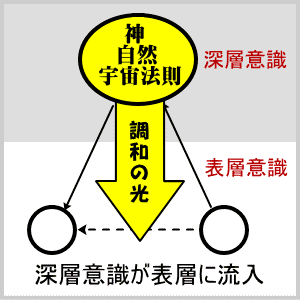 日本文化の歴史とは、日本語のアップダウン構造を通して、深層の調和の響きをこの世にもたらして来た歴史であると云うことが出来ます。
日本が古来、霊の本の国と云われ、大和の国（Country of Great Harmony）と云われて来たのも、その間の事情を表しています。まことに日本の国風は、聖徳太子の昔から「和を以て貴しとなす」ことでありました。
日本の国風である調和指向は、技術文書にも観て取れます。
科学技術というものは、人間の精神と無関係のもののように考えられがちですが、事実は、そうではありません。文学芸術と同様に、科学技術の営みにも、人間の心の在り方が色濃く反映されているのです。
一般に、技術文書においては同一のものに異なる用語は用いないと考えられています。文学的な文章であれば、全く同じものに別の表現を与えてバラエティを楽しむことがあるかも知れませんが、技術用語は厳密に統一して用いるべきであると一般的に考えられています。筆者は長年にわたり技術翻訳に携わってきましたので、日本語の技術文書を英訳するよう日々依頼されるのですが、その際に、顧客の側では用語の統一を技術翻訳の絶対条件の一つであると考えているようです。
しかし、用語を固定するというこの感覚は、実は極めて日本的な感覚であると言わざるを得ません。英語国民が同じように用語の統一に熱心であるとは思えないのです。むしろ逆に、英語においては同一単語や同一表現を嫌い、表現を換えてバラエティを楽しむ傾向があります。
筆者が最初にこのことを学んだのは、岡地栄氏（日本自動翻訳研究所）の著作からでした。同一単語を用いるのに熱心であるのは極めて日本的な感覚であることを、岡地栄氏の著述から例を取って以下に説明します。
① 温度が高くなると「空気」(air)が膨張してオイルの流量を増大させる。
② 温度が低くなると「空気」(regulator)が収縮してオイルの流量を減少させる。
右記の①②は、ある給油器の動作を説明した英文を翻訳したものです。英語原文は、米国のMachine Design 誌から取ったイキのいい英文です。
日本語の訳文では、①②共に「空気」という訳語が使われていますが、英語原文では、
①the air, ②the regulatorと異なる単語が使われています。これが実は英語の素晴らしい点であります。つまり同一のものであっても、観点を変えて色々な表現のバラエティを楽しむのです。
①では物質・材料の観点からthe airと言っておいたのですが、②では同じ言葉を使うのを嫌って、別の観点すなわち機能・役割の面から見てthe regulator（調整体）と言い換えるのです。
このように観点を変えて言葉のバラエティを楽しむことから、発明・発見が生まれる可能性が出て来ます。これは、英語の力です。
一方、日本語では、①で「空気」という訳語を使うと、②でそれと同一のものが出て来た際には、たとえその原文がthe regulatorとなっていたとしても、先ほどと同じ「空気」という訳語を使いたくなります。同じ言葉を使わないと気持ちが悪いのです。
仮に②の「空気」（the regulator）を英語の感覚そのままに「調整体」と訳すと、すごい違和感が出て、もはや日本語ではなくなります。「前のものを立ててヤタラに変えない」ことが日本精神の特徴だからです。（以上は、岡地栄『バイリンガル・テクニカルライター』第１号の論文の要約である。）
「前のものを立ててヤタラに変えない」ことが日本精神の特徴であることは、日本人の読者の皆さんには容易に納得して戴けることでしょう。ところが、同一のものに色々な表現を与えてバラエティを楽しむという英語の特性については、恐らく日本人の想像を遥かに越えるものがあると思われます。
例えば、「機能」や「電源」と言った言葉は、日本語でしたらそれ以外の言葉はほとんど考えられないくらいですが、このような基本的な単語についても、英語文献では種々の表現が見られるのです。筆者が手掛けた翻訳を例に取ると、わずか八七〇語余りのパソコンソフトの紹介文（英文）の中に、「機能」と訳すべき言葉および「機能」と訳すことが可能な言葉は、全部で十二種ありました。ちなみにその十二種とは、functions, features, capabilities, ability, support, options, facilities, schemes, tool, filter, conventions, miracle でした。
最後の miracle は勿論「奇跡」という意味ですが、これを直訳して、「この奇跡によって」と言ってしまうと、日本語としてはどうにも納まりが悪いのです。これはやはり前を受けて「この奇跡的な機能によって」のように「機能」を補わないと、日本語らしくなりません。
日本語には、同じ言葉を使おうとする力が働くのです。
新しいものを導入するために古いものを殺すという方法は、採らないのです。可能な限り古いものを生かしたまま、新しいものと調和させることにより、全体を洗練させ発展させるのです。
「前のものを立ててヤタラに変えない」という日本精神の特徴は、日本の歴史にも観て取れます。東京の上野公園に、西郷隆盛の銅像が建てられています。西郷さん、西郷どん、と親しまれている南州翁は、明治維新の功労者でありました。ところが、明治十年「西南の役」では、天皇の軍隊に弓を弾く「賊軍」の総大将として、城山で自決して果てました。
維新の功労者とはいえ「朝敵・逆賊」として果てた西郷さんを、日本人は銅像を建てて尊敬しているのです。これは、中国・韓国などではあり得ないことでしょう。西洋肉食民族のどぎついまでの歴史にも、滅多に観られないことです。
徳川幕府最後の将軍、徳川慶喜はどうなりましたか。戊辰戦争で官軍と戦った幕府軍の総大将は、もちろん「逆賊」の最たる者ですので、世界史の常識に従えば、彼はもちろん徳川一族が根絶やしにされてもおかしくはないのです。
ところが現実には、一族根絶やしどころか、彼は公爵に列せられて大正二年に天寿を全うしました。徳川家は今に至るまで名誉ある家系として存続しています。このようなことは、世界史の常識では考えられないことなのです。
日本人のアップダウン意識にとって問題なのは、１か０かではないのです、白か黒かではないのです。現実の人間の歴史は、１か０かではないのです、白か黒かではないのです、「逆賊」かそうでないかではないのです。
第四章四節「認識のアップダウン構造」において「技術はファジー」であることを述べました。科学と違って技術は、白か黒かで割り切れない現実を相手にするのです。日本のモノ作り技術が優れているのは、白か黒かで割り切れない現実を相手にして上手に調和の道を探ることができる日本人のアップダウン意識のお陰です。
そのアップダウン意識で歴史に対した時、西郷隆盛や徳川慶喜をショートカット的に「逆賊」と決めつけることはせず、それぞれ所を得させているのです。「前のものを立ててやたらに変えない」という心性を持つ日本人が、どうしても前のものを変えなければならない時には、それ相応の配慮を十分に行うのです。
日本の国風である調和指向は、祭祀民族たる日本人の祭祀のあり方にも当然現れる筈です。
筆者の畏敬する先輩で岡山在住の井上氏は、その屋敷内に畳半分程の小さな田を持っておられます。井上氏の家業は、農業ではありません。ところが、氏はその余りにも小さな田を非常に大切に扱っておられ、毎年田に水を引いて、田植えから稲刈りまでの農作業をきっちりと行っておられるのです。井上氏は別段、稲の自給自足を目指しておられる訳ではなく、田植えが道楽である訳でもありません。
その敷地は元は水田でありました。水田を整地して家を建て工場を建てたのですが、その土地が水田であったと云う事実は消えずに残ります。稲株を掘り起こして取り除いたとしても、田の精霊たちは依然としてその土地に根を張って生きているのです。
そこで井上氏は、ミニサイズの田を残してそこに精霊たちを集め、毎年稲を作り続けることによってその精霊たちに所を得させているのです。筆者は、井上氏の生き方に日本人の一典型を観ます。
日本語の技術文書に於いては、「前のものをたててやたらに変えない」と云う特色が見られました。日本の歴史においては、前のものを変えるさいには充分な配慮を行うということが見られました。
現実の世界で前のものをいつまでも変えずに保つことが出来るとは限りません。田圃が宅地になり工場になって行くのは時の流れと共に避けられません。前に存在したものが後から続くものによって置き換えられて行くのはどうにも致し方がないのです。それはむしろ宇宙運行の常道と云うべきでしょう。
ところが、その際にも、日本人は前に存在したものを容赦なく抹殺することはしません。前のものを出来る限り同時に生かそうと努力するのです。古いものを根こそぎ抹殺して新しいものを生かすのではなく、古いものを可能な限り生かしながら新しいものを作って行こうとするのです。
もちろん、誰でもが井上氏の様に、屋敷内にミニ水田を作り得る訳ではありません。むしろ、田の精霊たちに総退陣して戴いて家を建てねばならないことの方が多いことでしょう。
その場合には、日本人は地鎮祭を行って、先住の精霊たちを大地の神の下へお送り申し上げると云う礼を取ります。それが本来の日本人と云うものです。
この点は、キリスト教やイスラム教などの宗教とは大きな隔たりがあります。土着の宗教がある土地にキリスト教やイスラム教が入ってくると、どうなるか。土着の宗教は根絶やしにされます。前のものを根絶やしにした上で、教会やモスクを建てるのです。ショートカット的宗教が、人類の争いの最も大きな原因となっているのは悲しい現実です。
それにつけても、日本人の伝統的心性の素晴らしさを認識し、現代に広く深く甦らせて戴きたいものです。
河合隼雄氏の『中空構造日本の深層』（中公叢書）は、実に示唆に富む良著です。河合氏は、日本神話の構造を分析され、相対する二神の中心に「中空」となる一神を置き、三神が均衡を保っているというのが、日本神話の基本構造であると考え、それを「中空構造」と名付けられました。この「中空均衡構造」とアップダウン構造を比較して、調和ということの意味を深く探ってみましょう。
均衡とは、異質のものが異質のままにバランスを取って一応の調和状態にあることを意味します。たとえば、北朝鮮と韓国が、パワーバランスを保って事なきを得ている状態は、「均衡による調和」状態と言えます。この両国が、民族統一を果たしたならば、「統合による調和」がもたらされたといえるのです。「均衡による調和」は、表面的な調和に過ぎず、「統合による調和」が真の調和と言い得るのでしょう。河合氏は前掲書において、次のように述べておられます。
現在の世界情勢は、政治、経済などの面において統合よりは均衡を目指す傾向にあるので、日本神話の示す構造はその点についてなかなか示唆するところの大きいものと思われる。
（河合隼雄『中空構造日本の深層』中公叢書）
河合氏は神話における三貴神の均衡状態から中空均衡構造を見いだしたので、均衡ということを重視せざるを得なかったようです。この点がアップダウン構造から見れば不十分と映るのはやむを得ません。それはともかく、ここから「均衡による調和」と「統合による調和」を比較して検討してみましょう。『中空構造日本の深層』に収録の論文「フィリピン人の母性原理」から、興味ある話題を二つ取り出して検討して見ます。
第一に、河合氏は、フィリピン人が日本人以上に対人関係の円滑さを好み、全員一致の決定を好むと指摘しておられます。また家族関係も日本人以上に濃密であり、すべての人間関係に親族的な親密さを要求し、従って、パーティなどで招待状を出すと、その人が知人を連れて来た場合には同じように歓待しなければならないそうです。フィリピンで日本企業が千枚の招待状を送って八百人分の料理を用意しておいた所、客は三千人にもなって大あわてをしたというエピソードもあるとか。
このようなフィリピン人の国民性は、ひと昔前の日本の農村に見られた調和協調の精神とよく似ております。日本といえば調和の国というのが通り相場になっていますが、ある意味では、フィリピン人は日本人以上に調和指向が強いといえそうです。
ところが、フィリピン人の調和精神と日本人の調和精神が、同じ性質のものであるかというと、どうもそうは考えられません。それは、河合氏の著書から第二の話題を引き出すと明らかになります。
第二の話題とは、同じアジア人として共通の調和精神を持つと考えられるフィリピン人の学者が、河合氏に次のように尋ねたというのです。
日本人だけがどうして、あのようにうまく近代化され、他の東洋人と異なる道を歩むことができたのか、それを知りたい。日本人は一体その秘密を自ら知っているのだろうか。自分でも知らずにいるのか、知っていながら、他の東洋人にはそれを隠しているのか。
このフィリピン人の疑問は、アジア人に広く共通するものと見えます。河合氏がその論文の締めくくりとして挙げた、ある国際セミナーにおけるタイ国の留学生の発言も、フィリピン人学者の質問と同趣旨のものでした。この留学生は、次のように述べたというのです。
私たち（タイ人）は仏教（伝統文化）と西洋科学文明をどのように結び付けたらよいのか悩んでいる、私たちが日本から一番学びたいことは、明治維新以降、日本が伝統と現代科学文明をどのように結び付けたのかということである。
伝統文化と西洋科学文明とをどのように共存させるかという問題は、日本人にとってはスラスラと行えることであるが故に、他のアジア人がどれほどこの問題で深刻に悩んでいるか想像が及ばないかも知れません。中国においても、これは大きな葛藤を引き起こしました。近代技術を導入すれば中国の政治社会はどうなるかという問題をテーマとする論文がわずか数十年の間に何万と書かれていることは、先に述べた通りです。（第三章四節の「ファジー認識と日本語の包容力」の項参照。）
日本においては、「文学と自然論争」（第三章二節「自然観のアップダウン構造」参照）という極めて特殊な専門的な論争があったにせよ、西洋文明を取り入れる際の葛藤は全体として甚だ微弱でありました。
中空構造によってこの問題に答えることは出来ません。河合氏も問題を提起したのみで解答を与えることなく論述を終えています。しかし、アップダウン構造によれば、明快な解答が得られます。というよりも、アップダウン構造それ自体が、その解答となっています。
中国語がファジーであるといっても、それがアップダウン構造をしている訳ではありません。従って、中国人の意識がアップダウン構造の持つ包容力に満たされている訳ではありません。むしろ中華思想によって外国の文物をはねつけて来たというのが真相でしょう。
同様に、フィリピン人が対人関係において調和を貴ぶといっても、フィリピン人の意識がアップダウン構造をしている訳ではありません。従って、フィリピン人の対人関係における調和は、いわば「均衡」による表面的な調和というべきであって、日本人が対象を自己の内に吸収し内面化し血肉化する「統合」による内面的な調和とは趣が異なると考えられます。
単に外国の文物と自らの伝統とを「均衡」させようとしても、なかなか自分のものにはならないのです。そこから一歩進んで、自己の内面において両者を「統合」するから自分のものとなるのです。しかも自己の根本性質は何ら変容を受けないのです。
日本人が「異質のものを統合する」能力に優れているのは、日本語のアップダウン構造のおかげであります。「異質のものを統合する」ことから真の調和も生まれるのです。
日本の国風が「和を以て貴しとなす」ことであるという際の「和」とは、単なる均衡による表面的な調和ではなく、統合による深いレベルでの調和であることを忘れてはなりません。
川喜田二郎氏が創案されたＫＪ法は、アイデアを創り出す方法として多くの人々に利用され、目ざましい効果を挙げています。このＫＪ法にも、日本人が「異質のものを統合する」能力に優れているということが表れています。
ＫＪ法では、沢山のデータを個別にカード化して、各カード間の関係を考えて行きます。その際には、先入観を廃して、カード自体に語らせるようにして、その関係を見いだして行くのです。そうして何かしら関係がありそうだと思われるカードをまとめて小グループに分け、各小グループにタイトルを付けます。つまり、各小グループをいわばカード化する訳です。
次に、小グループ間の関係を同様に先入観を廃して見て行き、関係のありそうな小グループを統合して大グループにまとめ上げて行きます。
この操作を基本データ数に応じて何段階か繰り返すうちに、最初は個々ばらばらでどうにもまとめようがないと思われた膨大な数の基本データも、快刀乱痲を断つが如くに整理され、まとまりのある構造が現れて来ます。
ＫＪ法で気を付けねばならないのは、「まとめる」ことが既存の分類になってしまってはいけないということです。
川喜田氏は、「まとめる」ことは異質のデータの組み合わせから何かを発見することであるとして、ＫＪ法を「異質のデータを統合する方法」と規定しています。
このような特性を持つＫＪ法は、日本人の思考形式に非常に適合していると言うことが出来ます。異質のデータを統合していくのは、アップダウン構造のハタラキに適しているのです。
このことは、川喜田氏も体験を通してつかんでおられるようです。
彼は、アイデアの出現を促すような基本的な一つの小チームのデータ群を「基本的発想データ群」（ＢＡＤ）と名付けましたが、日本人はカンが良くてＢＡＤから暗示を汲み取る能力が外国人に比べて著しく高いと述べています。
アメリカ人は、ものごとの一つ一つの概念を、鮮明な輪郭で取りだす傾向がある。・・・
これをＫＪ法の手続きでいえば、「単位化」の過程に敏感である・・・
たとえば、レンガの一個ずつのようにものごとを割り切るので、またレンガを一個ずつ積んで家を建てることもできるのだ。・・・
概念をとりまいてはっきり限定を加える輪郭のないのが、日本人の世界らしい。・・・
日本人は足元の経験からなにかを「総合する」という個人的能力が、ある意味でアメリカ人よりもすぐれていると思う。・・・
そのＢＡＤレベルでの直観力が、日本人の場合は著しく高いということである。たとえていうならば、外国人は五つか六つの要素の結合についてしか、暗示をつかみにくいかもしれないが、日本人はそれが十以上あっても、そのなかから複雑な総合的な意味を一挙に見いだしうる。その程度の差があるということである。
（川喜田二郎『発想法』中公新書、一三八～一四四ページ）
日本語のアップダウン構造によって鍛えられた日本人にとっては、ばらばらのデータの間を埋めて行くというというのは、得意中の得意技であって、何らむずかしいことではありません。
ショートカット的地平に留まっていては見えにくいデータ間の関係も、アップダウン構造の奥に昇れば容易に見渡せるのです。
ショートカット思考から見れば漠然として大まかであると見えたアップダウン構造が、異質のデータを統合する際には抜群のハタラキをするのです。ＫＪ法は、日本で生まれるべくして生まれた創造性開発の技法であるといえるでしょう。
さらに川喜田氏は、ＫＪ法が創造性開発の単なる技法であるにとどまらず、思想的な深みを持つものであると考えておられるのですが、この点は私も全く同感です。
それはＫＪ法が根本的に日本アップダウン構造によって支えられているからです。異質のデータを統合して新しいレベルの調和に達するということには、日本の国風が反映されているのです。そこには、文明論的な可能性が秘められているのです。
ＫＪ法の「異質のデータを統合する」ことは、宮大工が「異質の材料を統合する」ことにつながります。日本の伝統的社寺建築は、宮大工といわれる人々によって受け継がれて来ました。宮大工が材木を利用する方法は、近代科学技術の方法とは、大きく異なっています。
地上に建築物を建てるには、当然のことながら建築物を支える沢山の柱やが釣り合っていなければなりません。近代的方法では、柱の釣り合いを取るのに、柱を均等均質化します。つまり、同質同寸法のパーツを作ってそれを組み合わせる訳です。
ところが、宮大工はより現実に密着した方法を取ります。
一口にヒノキといっても、山の南斜面の日当たりのよい所で育ったヒノキと北斜面の日当たりの悪い所で育ったヒノキとは、性質が異なります。また、右に反りやすい木もあれば、左に反りやすい木もあります。従って、たとえ同種類かつ同寸法の木であっても、宮大工はそれを同質のパーツとは見なさないのです。
宮大工は、それぞれの木の持つ癖を見抜き、その癖を適所に生かして全体を整えます。そのためには一つの山で生育した木を組み合わせて一つの塔を作るのが理想的です。そこで、宮大工の口伝として次のような言葉が伝わっています。
・堂塔の木組みは寸法で組まずに木のクセで組め。
・用材は木を買わずに山を買え。（西岡常一『木に学べ』小学館）
宮大工が材木を組み合わせる方法は、正に「異質の統合」であり、それはまた日本精神の伝統であると云えます。「異質のデータを統合する」ＫＪ法が、このような日本精神の伝統に根差していることも、容易に理解出来ます。
ＫＪ法も宮大工の知恵も、共に日本の国風を反映していると云えるでしょう。宮大工のこの方法が、右反りの木も左反りの木も同サイズであれば同一と見なして用いる方法よりも、遥かに現実に密着した優れた方法であることは明白です。
法隆寺の五重の塔などは、このような宮大工の知恵を結集して建てられていますので、近代的な建築物が軒並み倒れてしまうような地震にも耐えて、千三百年も立ち続けているのです。
同質同寸のパーツを組み立てる方法は、規格大量生産には適していますが、五重の塔に千数百年の寿命を与えることには適していないようです。
日本精神の伝統を示すアップダウン構造は、タテ社会・ヨコ社会という言葉とは、はっきりと区別すべきです。西洋はヨコ社会で日本はタテ社会であるとよく言われるのですが、その言い方は正しくありません。
日本は、タテヨコ兼ね備えた十字交差の国であると言うべきでしょう。アップダウン構造は、ショートカット構造を除外するのではなく、それをも含めた構造であるからです。
「知る」や「考える」が、「対象と一体化する」や「神と交わる」というアップダウン的意味を持つことは既に述べました。
日本語には、これらのアップダウン的認識を表す言葉ばかりではなく、ショートカット的認識を表す言葉もあります。例えば、「分かる」という語は、「分かつ」「別れる」などからも分かるように、ものごとを分析的に理解することであると考えられます。理性を表すラテン語 ratio にも分割して比率を計るという意味があるように、西洋近代科学は、ratio のショートカット的分析によって作られたものです。
日本語のアップダウン構造は同時にショートカット構造をも生かす包容力を持っています。日本語が、「知る」「考ふ(神交ふ)」などのアップダウン的言葉とともに「分かる」というショートカット的言葉をも兼ね備えている点に、そのことが窺えるように思われます。
インドなどは、非常に霊性に優れた国ですが、タテの霊性に偏重する余り、ヨコの物質世界の調和という点では少々不足が感じられます。
日本は、アップダウン思考で本源世界との交流を行いながら、表面的にはショートカット思考で現実問題をうまく処理してゆくことが出来るのです。
だからこそ、今日の日本は、ショートカット文明を見事に自家薬篭中のものとして、欧米に勝る規格大量生産の国を創りあげることが出来たのでした。
しかし、どうも、官僚主導による規格大量生産に適したシステム創りは、余りにもうまく行き過ぎたようです。現在では、規格大量生産に適した政治、経済、教育、その他の日本システムに対する見直し論が国の内外から起こっています。地球人の社会システムが大きく変わろうとしている時ですので、日本システムにもさまざまな変革が要請され、その模索が行われているようです。
このような時であればこそ、心静かに日本の伝統を想ってみるのも必要ではないでしょうか。
明治維新に当たっては、四十万人に及ぶ武士階級をなくすという超大リストラを、流血を見ること無く行った日本人です。それは世界史の上から観れば、奇跡ともいうべき快事でした。
今日の地球システム変革に当たっても、タテヨコ十字交差のアップダウン言語を与えられた日本人であれば、必ず新時代に即した変革を成し遂げることでしょう。
日本がタテヨコ十字交差の国であることは、国家「君が代」にも観て取れます。
昭和・平成の時代に、神道日垣宮主と名乗る御方が現れて、神道界に太古ヤマト民族の祭祀の流れを甦らせ、地球新生の祭祀を続けておられます。
その宮主師の著書から「君が代」に関する部分を次に引用します。
イザナギ・イザナミと申します
イザナギノ神様は神名の終わりが「キ」で、イザナミノ神様の終わりは「ミ」です
日本国の国家を「君ヶ代」と申します
「君ヶ代は千代に八千代にさざれ石の巌となりて苔のむすまで」と歌はれている国歌の「キミヶ代」の意味は、イザナギノ神とイザナミノ神の世の中と言う意味です
イザナギノ神とイザナミノ神が造り給う此の世の中は永遠に栄え続けることでありましょうと言う祝歌が「君ヶ代」であると分かれば 昭和の御代に日本の国歌を評して帝国主義であるなどときめつける方々も、目からウロコの落ちる思いをなさいますでしょう
まさに君ヶ代の歌は地球の讃歌です 地球が一つにまとまって人類が繁栄してゆこうとする時代に歌はれる地球の国歌こそは「君ヶ代」でございます
神名秘解の一編 天地に及ぼしてあやまらず （日垣宮主著『神道振言文』第三巻）
右記の引用をお許し下さるよう宮主師にお願いしました所、次の文章をお寄せ下さいました。併せてここに記します。
真実の意味に於いて宗教とは天地の創意を絶えず表し得るものでなければなりません
従って 過去の宗教一切は 今悉く新生せしむべきです
その意味で「君ヶ代」は正しく 地球上一家と云う立場から解き 人類が神に捧げる讃歌にすべきです（宮主師の書簡より）
イザナギノ神様もイザナミノ神様も、日本一国の神様ではありません。たとえ御神名は世界各国に伝わっていなくとも、そのハタラキは、地球全体、さらには宇宙全体に及びます。
「キ」は気であって、形の無い世界。
「ミ」は身であって、形の有る世界。
「キ」によって、形の無い世界とタテに繋がります。
「ミ」によって、形の有る世界をヨコに整えて行きます。
「キミが代」とは、まことにタテヨコ十字交差して地球を美しく整え人類が繁栄して行こうとする時代にふさわしい地球の讃歌でありました。
これまでの日本は、経済力と技術力は突出しているが「顔のない国」であり哲学の無い国であるとして、諸外国の批判を受けてきました。日本人の中にもこの批判を鵜呑みにして日本を恥じる人々も少なからずいるようです。
しかし、この批判は日本の本質を知らない浅解に過ぎません。
第三章の「技術はファジー」の項で、白黒がはっきりした科学（サイエンス）とは違って、技術（テクノロジー）というものは灰色の現実を相手にするものであることを述べました。
たとえ一つの科学的発見が成されたとしても、その発見を現実に応用して技術を作り上げるには、知恵を働かせて現実と対決していかなければならないのです。経済も技術も、白黒がはっきりしない灰色の現実との対決を通して築いていくものです。そこには幅広い現実調整能力が必要となります。日本語アップダウン構造こそ、その幅広い現実調整能力の源泉です。
経済力や技術力に優れているということは、堂々たる日本の顔であると主張してよろしいのです。
しかし、顔はあくまでも顔でしかありません。日本の総体をコントロールする中枢神経は神主アップダウン構造の日本語であり、深層の大中枢はアップダウン構造の至極の一点におわします神であることを忘れてはなりません。
世界各地の霊的指導者や予言者たちによって、来たるべき霊文化の時代には日本が重要な役割を果たすであろうと言われて来ました。それが、霊の本の国、大和の国と称される日本の天命であると言われて続けて来たのです。
地球は、今や物質文明極まって、既に霊文化の時代に突入しています。
霊文化の時代とは、霊性に偏った時代ではありません。霊性に基づいて現実を美しく整えて行く時代です。現実調整能力を大きく発揮して行かなければならない時代なのです。
タテヨコ十字交差の日本語を持つ日本人の本領が発揮されるのはこれからです。日本人はそのことをはっきりと自覚すべきでしょう。
日本語アップダウン構造が、日本人の精神に、日本文化に、どれほどの深大なる影響を及ぼしてきたことか。また今も及ぼし続けていることか。
日本語アップダウン構造の素晴らしさに感謝申し上げて、日本の国風をますます盛んに振り起こして行こうではありませんか。
日本の国風を論ずる際にどうしても避けて通れないのが、天皇の存在です。天皇について考える際に、先ず注意したいのは「天皇制」という言葉です。
この言葉は、世界制覇を目論むスターリンが天皇の存在を恐れその打倒を指示したことから共産党が使い始めた用語であります。「天皇制」とは純然たる法律用語ではありません。明治憲法にも今の憲法にも「天皇制」という言葉はありません。
司馬遼太郎氏が指摘されたように、来歴を考えれば「天皇制」とはまことに「えぐい言葉」であり「悪意がインプットされた術語」であるのです。
明治維新や明治期のことは、「天皇制」などという悪意がインプットされた術語で片づけてしまうと、歴史がプラモデルのようになってしまうのではあるまいか。
（司馬遼太郎『この国のかたち一』文藝春秋、七一頁）
共産党が使い始めた「天皇制」という言葉には、天皇をあたかも人民に対立する専制君主であるかの如く見なした上で、その打倒を目指すという意志が込められていました。
実証史学の先駆者である津田左右吉博士は、共産党のそのような天皇観は架空のものであり、天皇に専制的権力ありとして「統帥権」を振りかざした昭和の軍国主義者の天皇観と同様に、歴史的事実に反するものであるとして次のように批判しています。
従ってその意義での天皇制というものは、事実、存在しなかったものであり、天皇は政務のすべてについて内閣の奏請と議会の協賛とによって事を決せられ、専制的・独裁的な態度をとられたことは少しもなく、主動的地位に立って政治を主宰せられたこともすらも全くなかった・・・天皇が人民に対する抑圧者・搾取者であられたというやうな事実は古今を通じて會て無かった・・・ （「皇室に関する思想について」津田左右吉全集第二十三巻、岩波書店）
日本の伝統的精神には、天皇の存在を外在的な制度として捉える感覚はありませんでした。だからこそ、強大な武力を以て全国を統一した信長、秀吉、家康などの武将も、各自の望む制度を立てて国を治めようとしましたが、天皇は常に、その制度を超越した存在であり続けたのです。あるいは貴族があるいは武将が、絶大なる権力、武力を以て日本国を統治することがあっても、天皇の存在を覆そうと考えることはありませんでした。日本の全歴史を通じて、天皇を頂点とする日本国経綸のアップダウン構造は、揺るぎはしなかったのです。
天皇がアップダウン構造の頂点に御座すということは、天皇親政を意味するのではありません。むしろ、天皇不親政の伝統こそが日本史の主流であったのです。
石井良介氏は、その著書『天皇‐天皇の生成および不親政の伝統』（山川出版社）において、律令時代と明治時代を除くと天皇親政の時代はない、と述べておられます。石井氏によると、この二つの例外の時代は、共に外国法の影響を強く受けた時代でした。つまり、律令時代は天皇が中国流の皇帝に作りかえられた時代であり、明治時代は天皇がプロシア流の王に作りかえられた時代でした。
明治維新は、天皇親政を一大理念として為されたものであり、その点で、石井氏の言うように、天皇不親政の伝統から見れば例外的時代と見ることも可能でしょう。ところが、その「例外的」明治時代ですら、次第に不親政の伝統に色濃く染まって行ったという事実が見られます。
明治に入って間もなく、天皇親政は形ばかりのものとなりました。それを裏付けるように、明治十年になると元田永孚ら天皇の側近たちが天皇親政を実質化する運動を起こします。（笠原英彦『天皇親政』中公新書）。
早くも明治十年に、天皇親政運動を起こさなければならないほどに、天皇親政は形骸化していたのです。伝統の力、まことに恐るべしというべきでしょう。
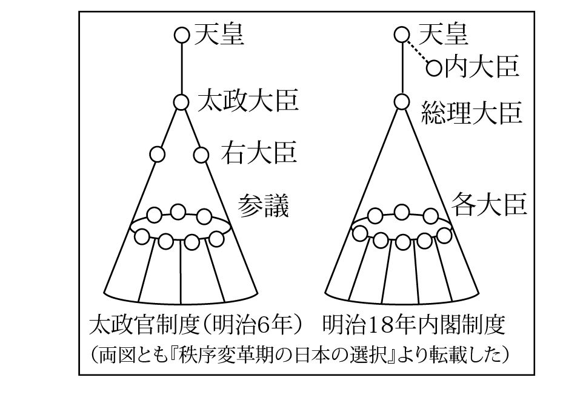 アップダウン構造が日本人の根本心性の構造である以上、この構造は幾つもの階層に重なって現れます。明治の太政官制度では、太政大臣を権力のアップダウン構造の頂点とし、天皇は太政大臣の更に上空に押し上げられた仕組みになっていました。この点について、五百旗頭真氏は次のように述べておられます。
つまり、ピラミッドの頂点にある太政大臣が統合機能を果たして、その上空にある天皇を支えることになっていた・・太政官制は、制度のかたちとしては太政大臣に権力を集中した統合型である。しかし、事実としては太政大臣が強権を発動することはほとんどなかった。
（五百旗頭真『秩序変革期の日本の選択』ＰＨＰ研究所）
明治十八年（一八八五年）に内閣制度が出来るとこの太政大臣（三条実美）もまた上空に押し上げられて内大臣と改称して棚上げされ、権力ピラミッドの頂点には内閣総理大臣が座ることになります（前掲書、一五三～一五四頁）。
天皇不親政の伝統を作り上げたアップダウン意識は、さらに屋上屋を架すようにして、太政大臣レベルの不親政をもたらしたと言えます。
江戸時代の封建領主たちもまた、家老の言いなりで「良きに計らえ」で済ませることが多かったようです。つまり、アップダウン構造のみこしに乗って実務に口出ししないというのが、日本のトップたちに共通して見られるパターンであるのです。
この構造は、今日でも社会の各階層にわたって見られます。例えば町内会程度の行事においても、実質的な実務リーダーとは別に名目的な代表者を立てることは、ごく普通に行われています。天皇は、このような重層的アップダウン構造の究極の頂点に立つ存在です。
屋上屋を架すとは、通常は無益な事柄を積み重ねる譬えに使われるのですが、その究極の屋上に立つ天皇は、決して無益な存在ではありませんでした。
そのような天皇のあり方として要請されるのは、自己主張をしない「無私の心」であるといえるでしょう。天皇は生身の身体を持ちながら、無私の心をもって空に徹することを要求されて来ました。
明治二十二年（一八八九年）に明治憲法が発布され、第四条に天皇は「統治権ヲ総攬シ此ノ憲法ノ条規ニヨリ之ヲ行フ」と規定されました。
「憲法ノ条規ニヨリ」ということは、つまり、立憲君主制を意味します。それは、左翼主義者が「天皇制」という言葉に塗り込めたような、人民と対立する専制絶対君主が超法規的に人民の生殺与奪の権力を振るうという専制君主制とは、全く異なるものでした。統治権の総攬とは、統治権を全体として掌握すること（佐々木惣一）、または国家の一切の権利が天皇によって代表されること（美濃部達吉）などと解釈されています。
掌握にしろ代表にしろ、その憲法を運用していく日本人の心性が、重層アップダウン構造を作り上げてみこしを担いで行くものである以上、天皇もアップダウン構造のみこしに乗ることを好しとして、真空の一点たるべく努力されたといえます。
つまり、政府や統帥部の決定した事項については、天皇自ら異を唱えないという憲政の正道を守られたのです。そして政府や統帥部の決定に対する責任は決定の当事者である政府や統帥部が負うことは勿論でした。
こうして、明治維新の大眼目であった「天皇親政」は、不親政の伝統に色濃く染められ、ついには不親政に取って変わられたのでした。これはアップダウン構造のみこしを担ぐのが日本人の根本心性としてある以上、当然の帰結であったというべきでしょう。
明治憲法は、近代的な三権分立に基づく堂々たる構成を持ち、制定以来、大正を経て昭和の初期に至るまで、大体においてうまく機能していたといえます。大正デモクラシーが花開いたのは、その証しであります。
ところが、昭和になると、軍国主義者たちが明治憲法の欠点を捉えて拡大し、国の方策を大きく誤らせました。その明治憲法の欠点とは「統帥権」に関する規定でした。
明治憲法第十一条に「天皇ハ陸海軍ヲ統帥ス」とありましたが、この条が制定当時には思いも掛けなかった一人歩きを始めたのです。
ここで注意しておきたいのは、天皇は陸海軍を統帥する大元帥ではあるのですが、実際の統帥行為は参謀本部（陸軍）や軍令部（海軍）が行っていたという点です。大元帥はそれら統帥機関の決定には異を唱えず、形式的承認を与えるということになっていたのです。
天皇が大元帥であったということと、アメリカ合衆国大統領が三軍の最高指令官であるということとは、全く内容が異なるのです。そのことは、次の事例にも明かです。
終戦間近の昭和二十年（一九四五年）六月八日、午前会議において戦争遂行の国策が決定されました。昭和天皇はしきたりに従って発言せず、会議は終わりました。戦争遂行は、大元帥の意志として確定された訳です。
天皇は、この決定に誰よりも落胆しながらも、憲政の正道に則って、その決定に異を唱えず、 戦争遂行の方針を裁可したのです。その後、昭和天皇は木戸内大臣らと計り、六月八日の御前会議の決定を覆して、和平への道を探ろうとしました。そこで、六月二十二日に憲法に基づく御前会議ではなく、懇談という名目で最高戦争指導会議をみずから召集しました。
六月二十二日午後三時、天皇は最高戦争指導会議をみずから召集する。首相、外相、陸相、海相、参謀総長、軍令部総長の六人の男は、これまでの御前会議のときと違い、天皇を中心にしてＵ字型に用意された椅子に坐った。御前会議ではなく、親しく懇談という意味をふくませ、憲法の責任内閣制に抵触しないように配慮されたのである。（半藤一利『聖断』文芸春秋社、二八八頁）
憲法に抵触せぬよう、このような配慮をした上で、天皇は、六月八日の会議の決定にとらわれることなく戦争終結についても具体的研究をとげてはどうか、と皆に尋ねられたのであります。
繰り返しますが、大元帥（天皇）は大統領とは、根本的に異なるのです。合衆国大統領であれば、自らの意志によってどのような決定も可能であり、その決定を自ら覆すことも可能であり、自ら直接に三軍を指揮できます。しかし、「陸海軍を統帥す」という大元帥（天皇）は、アップダウン構造のみこしに乗って、統帥機関の決定を形式的に裁可するという立場であったのです。
天皇が無私を貫かれる態度はよほど徹底していて、例えば相撲をご覧になることはあっても、どの力士がひいきであるなどとは、決しておっしゃらないのです。アメリカ大統領がひいきの野球チームを応援したとしても、ご愛敬で済みますでしょう。日本国の天皇陛下は、そのようなことはなさいません。
アップダウン構造のみこしということは、西洋人にはなかなか理解しがたいことかもしれません。「陸海軍を統帥す」という言葉がある以上、それは合衆国大統領が三軍の最高指令官であるのと同一の意味である、と考えるかもしれません。しかし、ここでも、日本人のアップダウン意識を根底において考えない限り、日本史の真実には迫れません。統帥権を有する筈である君主や上位者がアップダウン構造のみこしに乗せられて、自らの意志にそぐわぬ方向へ運ばれて行くという事例は、日本史をひもとけばゴロゴロと転がっています。
例えば、薩摩藩主の父である島津久光と、薩摩藩の下級武士であった西郷隆盛との間にも、同様の事情がありました。常識的に考えれば、藩兵の統帥権を有する筈の藩父・久光がその藩兵を自由に操るのは当然であると思われます。しかし、実際に藩兵を動かしたのは西郷であって、その武力を背景にして廃藩置県を断行してしまいます。久光は西郷を安禄山（玄宗皇帝に反乱した將軍）であるといって終生非難し続けました。
その西郷もまた、西南戦争では、不平士族に担がれて西南戦争を起こし、逆賊として最期を遂げます。西南戦争は、西郷が積極的に不平士族を糾合して彼らを道連れにしたのではなく、不平士族が西郷を担いで道連れにしたというのが、真相でしょう。西郷は自らの積極的意志によって事を興したのではなく、彼らのみこしに乗せられて、彼らと共に果てる事を承知の上で彼らの旗頭となることを受け容れたのです。日本的リーダーというのは、そのようなものであったのです。
その他その他、錦の御旗を振りかざして自らの意志を通そうとした貴族や武將の例は、枚挙に暇がありません。日本人のアップダウン意識の根強さがここにも現れています。
話を、統帥権に戻します。
統帥権については、司馬遼太郎氏の『この国のかたち』四（文藝春秋社）が簡潔にその本質を捉えているように思います。司馬氏は、幕末以来の統帥権の考察を踏まえた上で、鋭い指摘をしておられます。しばらく同書の記述を略述し、それに続いて引用します。
統帥機関である参謀本部（陸軍）と軍令部（海軍）には、帷幄上奏の特権が与えられていた。帷幄とは野戦用のテントのことであり、統帥に関する作戦上の秘密は、陸軍の場合、参謀総長が、首相などを経ずに、じかに天皇に上奏するということである。
昭和五年（一九三〇年）浜口雄幸首相が海軍統帥部の反対を押し切ってロンドン軍縮会議に調印すると、右翼は浜口を「統帥権干犯」として糾弾し、浜口は右翼テロにあって死亡した。
以後、昭和史は滅亡にむかってころがってゆく。このころから統帥権は、無限・無謬・神聖という神韻を帯びはじめる。他の三権（立法・行政・司法）から独立するばかりか、超越すると考えられはじめた。さらには、三権からの容喙もゆるさなかった。もう一ついえば国際紛争や戦争をおこすことについても他の国政機関に対し、帷幄上奏権があるために秘密にそれをおこすことができた。となれば、日本国の胎内にべつの国家「統帥権日本」ができたともいえる。・・・満州事変、日中事変、ノモンハン事変など、すべて統帥権の発動であり、首相以下はあとで知っておどろくだけの滑稽な存在になった。それらの戦争状態を止めることすらできなくなった。"干犯"になるからである。（司馬遼太郎『この国のかたち』四（文藝春秋社）一一一～一一二頁）
司馬氏はまた同書のあとがきにおいて、国家行為としての「無法の時代」ともいうべきそのころの本質の唯一なものが「統帥権」にある、と喝破しておられます。
日本国の胎内に「統帥権日本」という別国家ができた、という指摘は実に鋭い指摘であり、それを以て無法の時代の本質と観る史眼には敬服いたします。
ところが、司馬氏は、その「統帥権日本」が、日本史の流れの中でどうにも連続性が見いだせない、極めて非日本的な「鬼胎」であるとも述べておられます。この点には、筆者は同意しかねます。アップダウン構造に着目すれば、「統帥権日本」も、日本史の流れの中で生まれるべくして生まれたものであることが理解できるからです。
アップダウン構造のみこしを担ぎ担がれる日本人の心性を考慮すれば、日本国の胎内に「統帥権日本」という別国家ができたということは、正に日本的現象であるといえます。それは薩摩藩の中にいわば「西郷藩」ができたのと同様に、日本史に繰り返し現れるアップダウン構造の仕業の一つに過ぎないのです。
アップダウン構造は、善悪両面にはたらきます。統帥権の活用（もしくは乱用）の余地があったが故に、西郷隆盛らによって明治維新の大業が成ったのであり、反面では、統帥権乱用（これは文字通りの悪用）の余地があったが故に、昭和軍部の独走を許してしまったといえます。
このことを日本人は肝に銘じておく必要があるのではないでしょうか。
日本アップダウン構造の究極の頂点に立つ天皇は、真空の一点です。真空であるが故に、その真空に魔が忍び込むことがありうるということを、「無法の時代」の教訓とすべきではないでしょうか。
本書ではこれまで、アップダウン構造の素晴らしさを縷々述べてきたのですが、そのように素晴らしいアップダウン構造もまかり間違えば魔性のものの跳梁を許してしまいかねないという危険があるということを、日本人は深く承知しておくべきでしょう。
天皇アップダウン構造の話を続けます。
昭和天皇は、明治憲法下において立憲君主としての立場に徹せられ、直接の政治行為者となることはありませんでした。但し、例外が二つあります。
昭和十一年（一九三六年）二月二十六日、皇道派と呼ばれる青年将校たちが政府首脳を殺傷して反乱をおこしました。
当時の日本は経済恐慌により農村の疲弊が痛ましく、しかも、兵は農村出身者が多かったのです。その兵と接する皇道派の将校たちは、そのような状況を産みだしたのは元老や政府首脳が天皇と国民との間に立ちはだかって勝手な政治を行うからだと考えました。そこで彼らは、それら君側の奸を取り除いて「天皇親政」を実現すべきであるとして、行動を起こしたのです。
事件に接して軍首脳は右往左往するばかりであり、「天皇親政」を旗印とする反乱部隊をどう扱ってよいやら判断がつかず、それを義軍あるいは決起部隊と呼ぶなど、まことに情けない有り様でした。
昭和天皇は御一人、初めからその部隊を暴徒であると指摘して鎮圧を厳命されました。つまり、「天皇親政」をスローガンに掲げて決起した皇道派の部隊は、皮肉なことに天皇の例外的親政によって反乱部隊として位置づけられたのです。天皇の厳然たる態度によって、軍首脳部は正気を取り戻し、それによって事件は数日で終息を見ました。
この際の天皇の行為は、憲法上の立場からはいささか離れるものでありましたが、軍首脳部の狼狽して対策を講じられない状況の中、断固として反乱部隊に迎合することなく法治国家としてのあり方を示したのは、英断というべきでしょう。
注意しておきたいことは、皇道派の将校が「天皇親政」をスローガンに掲げたからといって、彼らの決起が成功したとしても、「天皇親政」が実現されたとは到底考えられないということです。表面意識で「天皇親政」を叫び、表面意識で「天皇親政」を実現したいと考えていたのかもしれませんが、やはり、アップダウン構造のみこしを担いで自分たちなりの正義感を通そうとしたというのが、深層の事実でありましょう。
明治維新も「天皇親政」をスローガンに掲げて行われたのであり、維新実現に向けて努力している最中には、志士たちは「天皇親政」を本気で考えていたと思われます。しかし、維新後十年も経たないうちに「天皇親政」が形骸化したのは先に述べた通りです。
やはり、日本人は集団で行動を起こす際に、先ずはアップダウン構造のみこしを担がないことには底力が発揮できないのでしょう。それはつまり、行動を起こすのは自分たちであるが、その自分たちの奥に（アップダウン構造の奥に）大なる存在を戴いて、その大なる存在の流れに沿って行動するのが、日本人の根本心性としてあるからです。
天皇アップダウン構造は、日本人の心性の中心軸として通っているのです。
昭和天皇が直接の政治的決断を下された例外の第二は、終戦の「聖断」であります。
どう見ても勝ち目が無いと思える状況に至っても、軍部はなお徹底抗戦を唱え、政府にはそれを押さえる力はありませんでした。そこで終戦間近の御前会議において、議論を尽くした後、鈴木貫太郎首相は、憲法の規定を逸脱するのは承知の上で、天皇の裁断を仰いだのです。
もし、終戦のとき、宮中会議で天皇の出席がなく、またその発言がなかったならば、最後の決断を天皇に仰いで、終戦を決定することはできなかったに違いない。終戦は、終戦を欲する天皇の出席があってはじめて可能になったといえる。天皇の終戦会議への出席は、明治憲法第一条の統治権者たる資格においてであり、この意味で、明治憲法第一条は最後の光輝を放ったものといえよう。（石井良助、ブリタニカ国際大百科事典「天皇」の項）
明治憲法が最後の光輝を放ったという終戦の「聖断」は、皮肉にも天皇が憲法の埒外に出ることによって為されたのでした。法体系というものは、平時には順調に作動するのですが、その法体系で処理しきれない事態が起こる可能性も当然あります。無闇に超法規的行為をなすのは、考えものではありますが、反乱あるいは未曾有の敗戦という事態に接して、国家機能が麻痺してしまった際に、超法規的立場から国家の方策を指し示し、大難局を切り抜けることを可能ならしめた昭和天皇の行為は、やはり英断という他ありません。後世の歴史家は、必ずや、昭和天皇を「昭和大帝」とお呼びしてその君徳を讃えることでありましょう。
昭和二十一年（一九四六年）に日本国憲法が公布され、天皇は「日本国の象徴であり日本国民統合の象徴」であると規定されました。現憲法が天皇を「日本国民統合の象徴」と規定したのは、永い歴史を通じての天皇の本質的あり方を明文化したものといえます。
今日では「天皇制」なる言葉も「悪意のインプット」を取り除いて使用することも可能でしょうし、事実、悪意とは無関係に「天皇制」が使われることもあるでしょう。しかし、その際にも忘れてならないのは、制度（憲法）以上に日本人のアップダウン意識が天皇の存在を支えているということです。天皇のあり方は、日本人のアップダウン意識によく合致しており、永い歴史を通じて、日本人のアップダウン意識に融けこみ、さらには逆にアップダウン意識を純化し、強化して、今日に至りました。
天皇の存在は、もはや、制度という言葉で表現されるべきものではないのです。
制度であれば、時代の要求に応じて取り外すことも可能でしょう。
しかし、時代の要求に応じるべきだといって日本語のアップダウン構造を取り外せるでしょうか。歴史的に形成されてきた天皇の存在は、今や日本人のアップダウン意識に深く組み込まれており、日本人の血肉と化しているのです。それはもはや、取り外したり組変えたりすることが出来る制度ではないのです。天皇存在が制度によってしか保たれないとしたら、日本人にとってまことに情けないことです。
明治憲法から現憲法への移行は実に大きな変動でありましたが、天皇を頂点とする日本国経綸のアップダウン構造には変化はありませんでした。昔から、日本国は天皇をアップダウン構造の頂点において運営されて来たのであり、今もそのように運営されているのです。
このアップダウン意識は、民主主義に何ら反するものではありません。むしろ、民主主義の欠点を補うものであるとすら考えられます。民主主義なるものは、人間は自己中心的でわがままな存在であるという点に依拠しているといえます。かようにわがままな存在であるが故に、人間は必ず意見や利害の衝突を起こします。
その衝突を解決する便宜的ルールとして多数決原理に基づく民主主義が採用されているに過ぎません。 目下の人類の意識レベルにおいては、民主主義のルールに基づいて政治を行うのは、まことにもっともなことです。しかし、民主主義の根本にある多数決原理が、多数派と少数派の双方の我の張り合いを清算してくれるとは限りません。民主主義の欠点は、人類の意識レベルの低さに由来するといえます。人類の意識が向上すれば、民主主義の質も向上する訳です。
意見の対立が生じた際に、対立の次元を超えた上位の存在や規範に思いの一部でもを馳せることが出来れば、対立はそれだけ和らぐはずです。
そのようにして日本人が調和を保ってきたのも一面の事実であります。
天皇存在は日本人のアップダウン意識によって支えられているといえます。近代化のためと称して、「天皇制」の存続について議論するなどは、度外れた御門違いといわざるを得ません。日本の「進歩的」と称する知識人が、「天皇制」が諸悪の根元であるかのような論説をなして日本人のアイデンティティコンプレックスを増強し、アジア近隣諸国の不十分な日本理解を益々混迷させるのは、まことに浅はかな心事といわねばなりません。真の友好は、互いの本質を認め合って初めて成り立つものです。自民族の本質を悪罵して、他民族との友好を求めるなどは、根無し草の漂えるが如き腑甲斐無い所業であります。他民族の本質を悪罵するのは、なおさら友好を害するものであります。
国際社会で真の友好を深める為にも、日本人は己の本質を自覚し発揮して戴かねばなりません。つまり、神主アップダウン構造から響き出して来る日本精神を発揮して戴かねばなりません。
歴代の天皇は、無私に徹することをその伝統としてきたが故に、皇統は連綿と保持されて来たといえます。天皇は、永い歴史を通じてよく日本精神の体現者であり続けました。その意味でも、天皇は、日本の象徴であり、さらには日本アップダウン構造の象徴であるといえるでしょう。
第三章四節「認識のアップダウン構造」において、日本的「知ること」は一体化であるとして、次のように述べました。（次行に繰り返します。）
古来、日本神道に伝わる祝詞には、「豊葦原の瑞穂の国を安国と平らけく知ろし召せ」とありますが、宣長によれば、この「知ろし召す」ことは、天孫が民草・国土をご自身と一体であるとご覧になることです。
天皇が民草・国土をご自身と一体であるとご覧になることができるのは、無私に徹しておられるからです。このような天皇を、日本国経綸のアップダウン構造の頂点に戴いているということは、日本人の誇りとしてよいのはありませんか。
日本人が日本人の底力を発揮できるのは、日本列島に天皇の御位が保持されているおかげであるのです。日本列島もまた、天皇の御位を戴いて大地の力を振り起こすことでありましょう。
天皇アップダウン構造よ、天地とともに悠久なれ！
新渡戸稲造博士は、英文著書『武士道』の序文で、その著書を著そうと思った動機について記しています。
博士はベルギー滞在中に、あるベルギー人法律家から散歩の最中に、「あなたのお国の学校には宗教教育が無いのですか？」と質問を受けました。
博士が「無い」と答えると、そのベルギー人は驚いて立ち止まり、何度も繰り返したのです。「宗教が無い！それではどのようにして道徳教育を授けるのですか？」と。
この質問は博士をまごつかせ即答出来ぬまま博士の内心に深く留められました。約十年後、博士は、正邪善悪の観念を自身の「鼻腔に吹き込んだ」ものが武士道であることを見いだし、英文『武士道』を著したのでした。思うに、博士は日本の道徳教育の不備を突かれて釈然としない気持ちで十年を過ごしたことでしょう。
『武士道』は英文によって西洋世界に発せられた日本人の弁明でした。宗教無しで道徳教育は有り得るのかとの西洋人の問いかけに対して、日本人にも精神的バックボーンはあり、それが武士道であることを、この書は西洋世界に投げ返したのです。
武士道が昔、武士の精神的バックボーンであったことは事実でしょうが、今日の日本人の精神的バックボーンとするのには無理があります。また、新渡戸博士をまごつかせたベルギー人のように、日本人には精神的バックボーンが無いという批判めいた日本人観を持つ欧米人は、今でも多数を占めていることでしょう。さらには日本人自身が、自らの精神的バックボーンに気付いていないのです。
日本人に精神的バックボーンが無いという誤解は、随分と根が深いようで、有る米人学者は、次のように述べています。
日本人の倫理的・知的規範は、主として外来の二つの思想体系である仏教と儒教に由来する。この二つは土着の信仰である神道と混ざり合った。
（James A.B. Scherer, "What is Japanese morality" The Library of the University of California）
仏教と儒教が神道と混ざり合ったというのは本当です。
しかし、日本人の倫理道徳の規範および知的活動の源泉が、外来の思想体系によって形成されたというのは、とんでもない誤解です。笑止千万！
笑止千万ではありますが、こういう誤解が国の内外に罷り通るのにはやむを得ない事情もありました。日本語アップダウン構造が分からなかったのです。ショートカット感覚で、日本語アップダウン構造の存在を突き止めることができるわけがありません。
本書をここまで読み進めて来られた読者の皆さんには、すでに自明のことでありましょう。
日本人は、昔も今も変わることなく、確固とした精神的バックボーンを持ち続けています
日本人の精神的バックボーンとは、日本語のことであります。
日本語を使うということが、日本人の道徳教育なのです。
宗教とは、深層意識を表面意識にもたらそうとする教えに外なりません。
日本語を使って生活するということは、取りも直さず、アップダウン構造を通して深層意識の流入に満たされるということになり、宗教なくして宗教的生活を送ることになるのです。
日本語は神なのです。
日本語が日本人の宗教です。
日本人の宗教は日本語のアップダウン構造の中に含まれているのです。
日本人が宗教教育を行わないのは、行う必要がないからです。
西洋人は、その言語の中に深層意識を流入させる仕組みが存在しないので、言語とは別に宗教というものを立てなければならないのです。
日本人がバイブルやコーランを持たないのは、持つ必要がないからです。
日本人には、日本語という無形の「聖典」があり、その無形の「聖典」の響きが「鼻腔に吹き込む」ばかりでなく、全身の毛穴から日本人の身中に染み込んで行き、大脳を刺激して、深層意識の流入に適した刺激伝達システムを作り上げるのです。日本語という無形の「聖典」は、無形であるが故に、有形の聖典の持つ制約を免れています。つまり、無形であるが故に、ショートカット思考による対立をもたらさないのです。極めて宗教的でありながら、宗教的対立をもたらさないのです。
聖書にも「言は神なりき」とあるように、言葉のハタラキを重視するという思想は洋の東西を問わず存在します。日本においても、万葉の昔から日本の国風を「言霊の幸はふ国」「言霊の佐くる国」とする思想があります。
神代より言ひつてくらく虚みつ倭の国は皇神のいつくしき国、言霊の幸はふ国と語り継ぎ、言ひ継がひけり（山上憶良、万葉集巻五）
敷島の倭の国は言霊の佐くる国ぞ（柿本人麻呂、万葉集巻十三）
「言霊の幸はふ国」「言霊の佐くる国」とは、アップダウン構造を通じて深層意識の光明がこの世にもたらされて来る日本の在り方を示したものに外なりません。
日本は世界でも希に見るほど治安の行き届いた国ですが、それこそ「言霊の幸ふ国」つまり深層意識の調和の響きが国土を潤し、国民の心に鳴り響いている状態を表すものです。
また日本人は勤勉で創造力豊かにして、この世での生活を快適ならしめる技術力に優れています。それは日本語のアップダウン構造によって深層意識の叡知が日本人の心の中に流れて来るからであり、それを称して「言霊の佐くる国」という訳です。
日本の経済的成功に注目してその要因を探ろうとする試みが、世界各国でなされていますが、その最も根本的な要因には、未だ目が向けられていません。
日本がここまで平和で豊かな国に成ることが出来た、その最も根本的な要因とは、日本語のアップダウン構造であると観て間違いはありませんでしょう。
ついに最終章の最終節に至りました。残る問題は、日本語の宝玉とも云うべき「アップダウン構造」の正体についてです。これが日本古来のヤマト言葉で表現できることを確認することにしましょう。
昔、中国の皇帝が硯工に硯を作らせる時、その硯にはしばしば龍が彫刻されました。その龍は皆、五本の爪を持っておりました。この「五爪の龍」は、皇帝の命によって作られる官硯にのみ許されたものであり、民間の硯には、皇帝を憚って、三爪または四爪の龍が彫刻されました。もし民間の硯工が禁を犯して「五爪の龍」をその硯に彫りつけたならば、首をはねられたと言います。
硯墨筆紙は文房四宝と讃えられ、中国文化の精華とも言うべきものです。とりわけ硯は、その筆頭として中国の文人たちに貴ばれました。「五爪の龍」は硯面にあって王者の威厳と風格を示し、中国の文人たちの文筆に誇りと力を与えたことでしょう。
日本語を龍に譬えるならば、その威厳といいその風格といい、それは正しく「五爪の龍」と称えるべきでありましょう。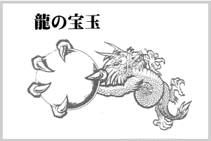
日本語という龍は、その五本の爪でしっかりと宝玉を掴んでおります。その宝玉無くしては、龍は変幻自在の神通力を揮うことは出来ません。その宝玉無くしては、日本語は日本語たり得ないのです。
その宝玉から発せられる神気が、片鱗をアップダウン構造たらしめ、骨格をアップダウン構造たらしめ、ハタラキをアップダウン構造たらしめるのです。
これまでの日本文法は、日本語を日本語たらしめる宝玉のあることを知りませんでした。日本語という龍を西洋のドラゴンと同一視して、ドラゴンの文法則をむりやり龍に当てはめて来ました。
「五爪の龍」は、宝玉を抱いたままショートカット文法則に押し込められ、面目の施しようもなく時機の到来を待ち望んでいました。
今、漸くにして、宝玉の神気発動の時は来ました。
最近、海外では日本語学習が盛んです。技術力と経済力を背景に、日本の存在が大きな比重を占めてゆくに連れ、日本語学習も益々盛んになることでしょう。そのような時な当たって、日本語が未だに標準的決定的日本文法を持っていないというのは、いかにも心ないことです。日本文法は、アップダウン構造を基にして、新たに生まれ変わって貰わねばなりません。
その新生の日本文法こそ、日本語の真相を表す真正の日本文法である筈です。新生の真正の日本文法は、また、神の存在を認め、宗教的真理をも包含するという点で、神聖の日本文法と称することが出来ます。今、新生の真正の神聖の日本文法を構築する必要があります。
一民族の言語を統御する法則には、その民族の本質が凝縮されていなければなりません。日本の国風が香り立たない日本文法は、日本文法の名に値しません。新生の真正の神聖の日本文法からは、日本の国風が馥郁と香り立つ筈です。
新生の真正の神聖の日本文法が構築出来たならば、それに基づいて日本語教授法が一新され、日本の心が広く世界に伝えられます。また、日本学なるものも神主アップダウン構造に基づいて再構築されねばなりません。新生の真正の神聖の日本文法と日本学の構築に向けて、各方面の研究者のご尽力を願ってやみません。
いよいよ、日本語という龍が、その力の源泉として何よりも大事にしている宝玉の正体を突き止めることに致します。それはつまり、「アップダウン構造」というキーワードの正体であります。
その前に、考えておかなければならないことが二点あります。
先ず第一点は、日本は選民思想に陥ってはならないということです。
神主アップダウン構造を取る日本語は、極めて霊的な言語です。
しかし、現象界の記述よりは霊的真理の記述に適した言語は、日本語の外にもあります。古代ヘブライ語も極めて霊的な言語でした。
Ｍ・ドリール博士によれば、古代ヘブライ語の十二母音は、人間の大脳にある十二の霊的センターと関連があり、ある特定の霊的センターを開発するためには、ある特定の母音を唱えながら定められた行法を行うのだそうです。
これなどは、古代ヘブライ語の霊的特性を遺憾なく表しています。古代ヘブライ語を与えられたユダヤ人が選民思想を今に至るまで抱き続けているのにはそれなりの理由があります。ユダヤ人は正に、神に選ばれた民であった訳です。
その選民思想あるが故に、ユダヤ人が民族としての一体感を保持し続け、科学芸術経済その他分野で優れた人材を輩出してきたことには敬意を表したいと思います。
しかし、その選民思想が、現在ただ今の地球世界にとって有益であるとは、決して思えません。それはかえって、アラブとの抗争を炊きつける原因ともなっているからです。
日本語の神主アップダウン構造は、これからの地球世界にとって大きな恵みをもたらすであろうと筆者は考えています。
日本は自らの本性の素晴らしさをもっともっと認識すべきであると思います。
それと同時に、歴史の教訓にも目を向けて、頑迷な選民思想には陥らないようにして戴きたいものです。地球最後の切り札とも言うべき日本が、自国のみを貴しとする選民思想に陥ってしまっては、地球の将来も危ういことになります。
特定の分野で有能な国家は、世界中に数多くあり、有能である度合いに応じて個性も強いものです。日本は有能であるよりはむしろ個性の強い諸外国の調停者として、西洋型のリーダーというよりはむしろ日本の伝統的指導者像にならって、中心国としてハタラクのが適しているように思います。そのためには、日本人は自らの本質を深く認識し、その上で同時に他民族の本質をも認めて行くことです。
その意味で日本は決して選民思想に陥ってはなりません。これが先ず第一に必要な条件です。
宝玉の正体を突き止める前に心得ておきたいことの第二点は、ショートカット言語のハタラキを正当に評価すべきであるということです。
そもそも、日本語がアップダウン構造をしているということを突き止めることが出来たのは、英語と比較してショートカット的考察を加えたからでありました。
また、日本語の隠れた本性を表すのに「アップダウン」という英語を用いたことによって、非常に理解がし易かったことも事実です。ショートカット言語は、対象を実に小気味好く表現してくれます。
筆者が日本語のアップダウン構造に気付いたのも、英語を書くことを生業としていたからでした。江戸時代の国学者たちも日本語の研究を精力的に行っていましたが、アップダウン構造には思い至りませんでした。それは一つには、彼らが英語を知らなかったからでしょう。彼らほどの頭脳と情熱の持ち主が、もし英語を知っていたならば、日本語のアップダウン構造はもっと早く見い出されていたかも知れません。
筆者は韓国人の両親の元で日本で生まれ日本で育ちました。日本の大地に生まれ、日本の水を飲み、日本の米を食べ、日本語で物事を考えて生活してきました。両親の国籍はどうであれ、私の霊魂の中身は日本人であったのです。アップダウン構造に気づくことができたのは、あくまでも日本語の中でハタラク日本人の魂であったのです。
アップダウン構造に気づいたのはショートカット言語の助けがあってのことであるのは事実ですが、日本語人でなければ絶対に気づくことが出来ないのもまた真実でしょう。韓国人や中国人がアップダウン構造に気づくはずはありません。ショートカット言語を母国語とする人々が、アップダウン構造に気づくことは先ずあり得ないのです。日本語が日本語の内部から真相を明らかにしない限りは、日本語の真相は明らかにはならなかったのです。
さはさりながら、アップダウン構造についての考察を深めるに当たって、英語ショートカット構造はまことによくハタラキました。英語のショートカット思考は、ものごとの科学的探求にまことに優れた力を発揮するのです。
アップダウン言語もショートカット言語も、天からの賜物であることに変わりはありません。要は、それぞれのハタラキの違いに応じて、構造の異なる言語を与えられているのであって、両者が相互補完的にハタラキながら地球世界を発展させるべきでしょう。
ショートカット言語は、近代科学を作り上げて人類社会に大きな貢献を成し遂げました。次には、アップダウン言語がその役割を果たす番です。
日本語が神主アップダウン構造をしていることに気付いて日本人が天狗になってしまっては、その役割を果たすことは出来ません。
選民思想に陥ることなく、ショートカット言語にも正当な敬意を払った上で、いよいよ宝玉すなわちアップダウン構造の正体を確かめることにしましょう。話はいよいよクライマックスに至ります。
それにしても、「アップダウン構造」というキーワードは、胸がすくようなハタラキを示してくれました。
それは「ありがとう」や「すみません」「おかげさまで」などの「片鱗」に込められた不思議を解明して神霊の存在を確認し「骨格」を探求して「動詞構文総括表」を作り、因果律や自然観、神観、認識構造などの日本的特性を鮮明に浮き上がらせ、神と人間とが同質であることを説き、ハとガの違いに解決を与え、日本語全体の主語が神であることを究明し、日本語動詞が時制を持たずに「永遠の今」のハタラキを表すことを喝破し、日本語が祈りを内蔵していることを突きとめ、無神論の息の根を止め、理性によって神を認識すべきことを堂々と論述し、日本の国風が深層世界の調和をこの世にもたらすことであると改めて確認しました。
ついには、天皇の存在が日本アップダウン構造の象徴であることをも確認しました。そして、アップダウン構造の間隙に魔性のものが入り込む恐れがあることを深く心に留めました。
今後、日本文法は勿論、日本学なるものも、この「アップダウン構造」を考察の根底に置かぬ限りは成り立ち得ないと筆者は確信しています。
アップダウン構造は、正に、日本文法と日本学の根本キーワードとも言うべきものでした。
「アップダウン構造」は、このように素晴らしいキーワードではありますが、それが本当に日本精神の神髄を示すものであればあるほど、それが本来の日本語で表現出来ないものかどうかが気に掛かります。ショートカット言語の精確さには充分に敬意を払うのですが、日本精神の神髄を表す言葉がヤマト言葉の中に無いとしたら、甚だ残念なことです。
実は、「アップダウン構造」を的確に表す言葉は、本来の日本語の中にありました。しかもそれは、一部の専門家にのみ知られている特殊な言葉ではなく、それを聞けば日本人なら誰でもが、「なるほど、そうであったか」と、はたと膝を打って納得する、良く良く知られた言葉でした。
その言葉を想い返せば、私の心の中に清冽の気が走り、これまで述べてきたことのすべてが、光彩陸離として輝き亘る感が致します。
清々しさに溢れるその言葉こそ、アップダウン構造の正体であり、日本語という龍が生命に懸けても守り通すという宝玉そのものでありました。そのヤマト言葉を結語として記して、本書を終わりたいと思います。
筆者が本書の構想を抱き始めてから、大略を書き終えるのに十数年かかっています。それは決して平坦な道ではありませんでした。霊感を得てスラスラと書き進めた訳ではなく、推敲に次ぐ推敲を重ねても満足できず、筆を投げ出したくなることも度々ありました。しかし、止むに止まれぬ情熱が心の奥から吹き出して、筆者をここまで運んでくれました。「アップダウン構造」を的確に表すそのヤマト言葉こそ、筆者の情熱の源泉でした。その言葉を、日本人の皆さんに伝えたい、そして世界中の人々に伝えたい、という熱い想いが筆者を支えてくれました。その言葉を結語としてここに書き記すことが出来れば、十数年の苦心は遺憾なく報われます。
本書で筆者は少々語り過ぎました。言挙げせぬ国の本質について、言葉を尽くして語り、語り、語り続けて、今漸く語らずに済む地点までたどり着いたようです。後は、問題のその言葉を申し上げて、読者の皆さんに感じ取っていただくだけです。それ以上語る必要はありません。
それでは、姿勢を改め衿を正してその言葉を申し上げます。読者の皆さんには万物の霊長たるヒトの本心でもって受け取って下されば幸いです。
日本語という龍が生命に懸けても守り通すという宝玉、すなわちアップダウン構造の正体とは、
神ながらの道
であります。日本人が日本語を使って生活するということは、自覚せずして天地神ながらの大道を歩むことになるのです。
日本語道は、神ながらの大道でありました。
神ながらの道とは、ことさらに神を意識するのではなく、無自覚のうちに神と連なって生きる道であります。日本語アップダウン構造とは、神ながらの道にほかなりません。
日本人の素晴らしさは、挙げてこの一点にあると申し上げて、本書の論述を終えます。
千早ふる神のひらきし道をまたひらくは人の力なりけり （明治天皇）
ナギナミが光に道はひらくべし歩み続くるやまとくにびと （日垣宮主）
完
筆者は大学入学の年に科学技術翻訳士の資格を取り、以来四十余年に亘り技術文書の和英翻訳に従事して来ました。翻訳を始めて十年後、いくつかの翻訳技法を統一的に説明出来る原理のようなものを感覚することが出来ました。そこで翻訳技法原理とでも名付けて一書を著そうと考え、さらに日本語を研究して行きましたところ、驚くべき真実に突き当たったのです。
本書のキー概念である「アップダウン構造」を発見するに当たって参考にした書物は一冊もありません。本書記載の内容は基本的にすべて、筆者が日本語と英語に直接ぶつかって確かめた事柄です。本文中にいくつかの書物から引用がありますが、それらは筆者のアイデアを後から補強するためのものであって、そこからアイデアを得たのではありません。
しかし、筆者が己の言語感覚にきわめて大きな影響を受けた文章が一つあります。
神道日垣宮主師の著わされた『神道振言文』第五巻に「天地のはじめの時」という文章があります。これを一読した時、にわかに「天地のはじめの時」が筆者の中で爆発するのを感じました。吾が身内に言霊鳴り響き鳴り出づるを感覚したのです。
以来、筆者の言語感覚は一新せしめられました。
「天地のはじめの時」という文章の深みが本書の内容に反映されているなどと申し上げているのではありません。しかし、「天地のはじめの時」に我が身を置いて本書を書き続ける努力だけはして参りました。その意味で、日垣宮主師に深甚の感謝を捧げたいと存じます。
次に、本文中に引用させて戴いた書物は、すべて筆者が敬服している方々の著作です。その方々に篤く感謝申し上げたいと存じます。
本書出版によって、筆者の文業は緒に就いたばかりです。今後も引き続き新時代の精神を反映した文章を書き綴って行きたいと思います。また、書き綴ってくださる文士たちが澎湃と現れることを願っております。
本書（電子書籍版）は、昨年（平成24年）12月に出版したものですが、この度、紙書籍版（プリント・オン・デマンド版）を出版するにあたり、細部を少し書き改めて、紙書籍版との統合をとりました。これで本書の紙書籍版と電子書籍版がそろったことになり、筆者はアップダウン構造発見者としての責任を果たしたと安堵しております。
アップダウン構造が日本人の新常識となることを希って擱筆いたします。
天照らす日のみ光ゆ顕はなす真のみ業神鳴り響け
平成二十五年十月十日 （トランスペース研究所創立二十二年記念日）
昌原 容成
日本語は神である・日本精神と日本文化のアップダウン構造
発行： 平成24年（2012年）12月24日
著者： 昌原容成（あけはら・ようせい）
発行人： 合同会社トランスペース出版
発行所： トランスペース研究所 http://transpace.jp/
〒581-0052 大阪府八尾市竹渕5-32
ISBNコード： ISBN978-4-9906877-0-0
▽ info@transpae.jp
本書に関連する記事や動画等をトランスペース研究所のサイトにてご覧になれます。
▽トランスペース研究所（日本語のページ） http://transpace.jp/nihongo/
本書の内容に共感を覚えるならば、「トランスペース友の会」に入会されるよう強くお勧めします。
▽トランスペース友の会（入会無料） http://transpace.jp/tomo/
トランスペース研究所では、今後も、神道・日本語・日本文化に関わる書籍を発行していきます。
▽トランスペースの本 http://transpace.jp/pub/
〔近刊予定〕『父と母と産土の神（親子で学ぶ神道読本01 ）』
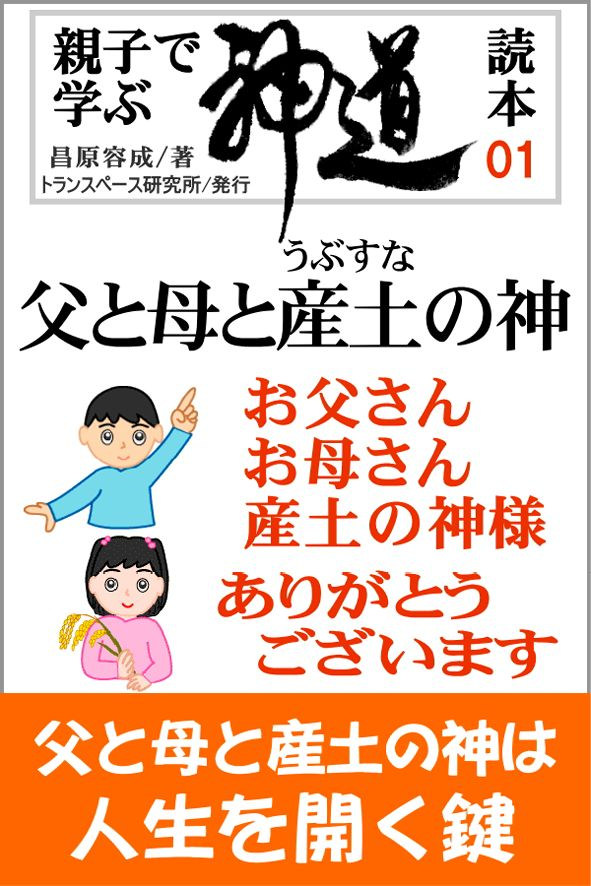
父の背後に父なる神、
母の背後に母なる神、
そして産土（うぶすな）の神、
この三つのムスビで人が生まれる。
「お父さん、お母さん、産土の神さま、
ありがとうございます」と感謝できる
子どもを育てましょう。
お子さんとご一緒にお読みください。